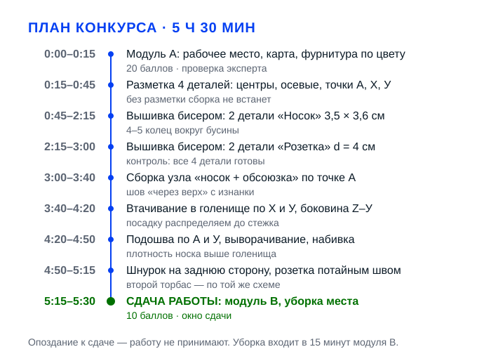
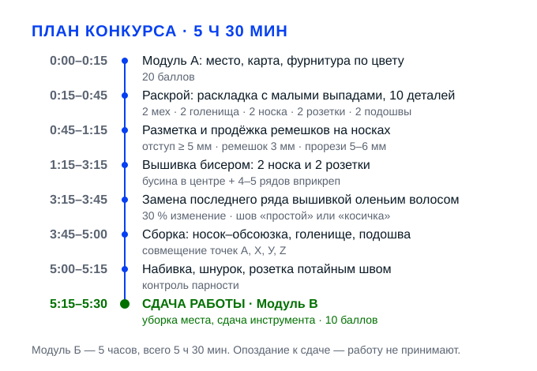
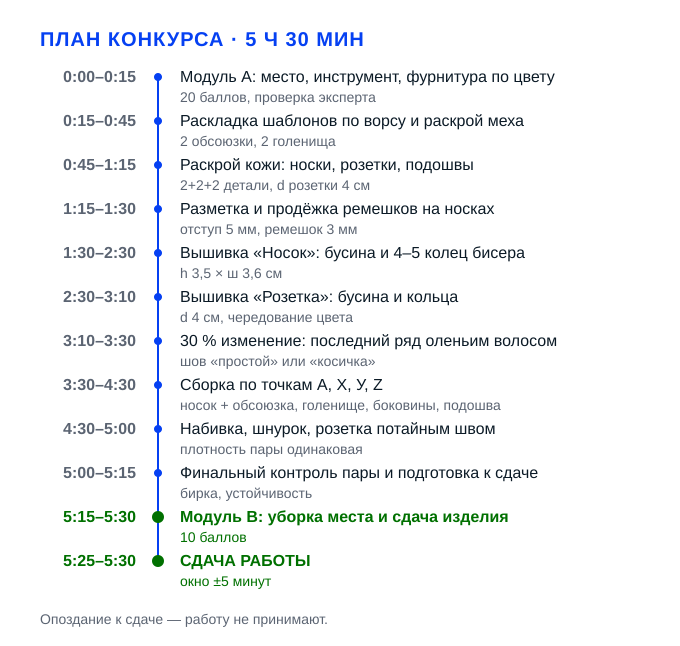

Мастер народно-художественных промыслов (изготовление изделий из меха) (Р)
Задания ниже — официальные файлы «Абилимпикс» (источник: abilympics-russia.ru), разложенные по категориям. Решения написаны по тексту задания, регламенту и критериям оценки; в них указано, что именно проверяет эксперт.
Школьник
14–16 лет, базовый уровень заданияВыдержка из официального конкурсного задания: страницы, относящиеся к категории «Школьник» (стр. 5–7 источника).
Пошаговое решение
Конкурсное задание категории «Школьники» — сувенирные торбаса, маленькая пара традиционной северной обуви, которую можно удержать на ладони. Раскраивать ничего не нужно: набор деталей кроя из искусственной кожи и искусственного меха выдаётся готовым и одинаковым для всех участников, поэтому вся борьба идёт за качество вышивки и точность сборки. Работа разложена на три модуля: пятнадцать минут на организацию места, пять часов на само изделие и пятнадцать минут на уборку — всего пять с половиной часов и сто баллов, из которых семьдесят приходятся на изделие и только двадцать на подготовку. Внутри модуля Б два больших этапа: сначала бисером вышиваются четыре детали — два полукруглых «носка» высотой 3,5 см и шириной 3,6 см и две круглые «розетки» диаметром 4 см, затем все детали сшиваются швом «через верх» с изнаночной стороны, изделие выворачивается, набивается наполнителем и отделывается. Ошибки здесь накапливаются последовательно: сбитая ось на первой детали тянет за собой перекошенный носок, а перекошенный носок уже не встанет в голенище без складок, и спасти сборку будет нечем.

Задача 1. Организовать рабочее место и разобрать заданиеМодуль А · 20 баллов
Первый модуль длится пятнадцать минут и стоит двадцать баллов — четверть всей оценки, причём набираются эти баллы не работой, а порядком. В конкурсном задании результат модуля описан одной строкой: организованное рабочее место. Значит, эксперт смотрит на три вещи — чистоту зоны и разложенный инструмент, понимание инструкционной карты и образца, а также фурнитуру, подобранную по цвету и разложенную по рядам вышивки. Всё это делается до старта или в первые минуты, и всё это работает на модуль Б: без готового комплекта бисера, проверенной иглы и размеченных деталей пять часов изделия уходят на поиск и переделки.
Действие 1.1. Подготовить место, инструмент и себя
Шаг 1.1.1
Надеваем фартук и косынку так, чтобы волосы были убраны полностью, и переобуваемся в сменную обувь на нескользящей подошве. Стол освобождаем от всего, что не входит в задание: сумку, телефон, верхнюю одежду — на отдельный стул, а не на край стола. Рабочую поверхность делим на три зоны: слева плоские детали кроя и шаблоны, по центру подставка с бисером и катушкой, справа вышитые детали и инструмент. Лампу ставим спереди-слева, чтобы тень от правой руки не падала на иглу.
Всё, что даёт модуль А, оценивается глазами и без приборов: чистое место, разложенный инструмент, аккуратная спецодежда. Двадцать баллов модуля — это четверть итога, и получить их можно только в эти пятнадцать минут. Три зоны нужны не для красоты: бисер, рассыпанный рядом с деталями из искусственной кожи, царапает лицевую сторону, а перепутанные детали — первая причина, по которой работу приходится переделывать в середине модуля Б.
Проверьте себя по трём признакам: на столе нет ничего лишнего, каждая зона занята своим, тень от руки не закрывает точку прокола. Посмотрите на стол с той стороны, с которой подойдёт эксперт: если зоны читаются без объяснений — место готово.
Самая частая ошибка — оставить телефон и сумку на краю стола, «чтобы не мешали под ногами». Эксперт фиксирует это как неорганизованное место, и минус идёт по всему модулю А. Вторая — сесть спиной к окну: тень от корпуса ложится ровно на точку работы, и первые мелкие стежки делаются на ощупь.
Эксперт обходит места в самом начале модуля А и отмечает в листе три пункта: спецодежда, чистота зоны, наличие и доступность инструмента. Замечания он проговаривает вслух сразу.
Шаг 1.1.2
Проверяем инструмент по списку: бисерные иглы № 12 и № 10 в игольнице, нитки лавсановые или капроновые в цвет бисера, маленькие ножницы с прямыми концами, шило или толстая игла для проколов, портновский мел или тонкий гелевый стержень, линейка на 15 см, сантиметровая лента, напёрсток, пинцет. Иглу берём новую и прокалываем ею кусочек искусственной кожи: она должна входить с усилием, но не гнуться и не рвать материал вокруг прокола.
Искусственная кожа на деталях тонкая, и тупая или слишком толстая игла оставляет рваный прокол — он виден на лицевой стороне как белая точка и не зарастает. Бисерная игла № 12 проходит в отверстие бисера № 10, а № 10 уже нет: если взять крупную иглу, она сколет бисер в третьем-четвёртом ряду, и деталь придётся перешивать, а время модуля Б ограничено пятью часами.
Проба на обрезке: игла входит с небольшим усилием, прокол круглый, вокруг него нет побеления. Нитка проходит в ушко с первого раза, не расслаивается. Проверьте напёрсток — он должен садиться на средний палец без зазора.
Взять иглу «какая нашлась» и обнаружить, что она не проходит в бисер, уже на первом ряду, — потеря десяти минут и испорченный бисер. Вторая ошибка — работать без напёрстка: к третьему часу подушечка пальца саднится, стежки становятся короче и неровнее, а именно ровность ряда и оценивают.
Эксперт смотрит, чем участник работает, и отмечает соответствие инструмента материалу: бисерная игла, тонкая нитка, мелкие ножницы. Отдельно фиксируется, что игла подобрана под номер бисера.
Шаг 1.1.3
Садимся так, чтобы стопы полностью стояли на полу, а предплечье лежало на столе: высота стула подбирается под стол, а не наоборот. Деталь держим на расстоянии 35–40 см от глаз, при этом локоть остаётся на столе — так рука не устаёт и стежок не «уезжает». Пятно света от лампы ставим на рабочую точку, а не в центр стола, и проверяем, что свет не бьёт в глаза от белой поверхности.
Работа с бисером № 10 и стежком в два миллиметра — это мелкая моторика, и при плохом свете или неправильной посадке ошибки идут одна за другой. По требованиям охраны труда освещённость рабочего места должна быть не менее 300 люкс, а участникам с нарушением зрения разрешены дополнительные лампы и лупа — но только по согласованию с экспертами заранее, на площадке это не решается.
Руки лежат на столе, спина не наклонена к детали, в глазах нет напряжения после пяти минут работы. Тень от руки не перекрывает точку ввода иглы. Если приходится придвигать деталь к лицу — свет или высота стула подобраны неверно.
Сесть «как удобно» с наклоном к столу: через час шея и глаза устают, темп падает вдвое, и участник начинает торопиться на сборке — а сборка стоит дороже вышивки. Вторая ошибка — поставить лампу сзади: деталь в собственной тени, проколы уходят в сторону от разметки.
Эксперт отмечает посадку и освещение в первые минуты, а дальше следит, не меняет ли участник положение каждые пять минут. Если участник пользуется дополнительной лампой, согласование проверяют заранее.
Действие 1.2. Разобрать инструкционную карту и образец
Шаг 1.2.1
Читаем инструкционную карту целиком, от первой строки до последней, и не начинаем работу, пока не прочитали. Карандашом отмечаем порядок: сначала вышивка четырёх деталей, потом сборка узла «носок плюс обсоюзка», затем втачивание в голенище, боковой шов, подошва, выворачивание, набивка, шнурок, розетка. Отдельно выписываем на листок буквенные точки, которые встретятся при сборке: А, Х, У, Z — и что с чем соединяется.
Карта — единственный законный источник последовательности: отклонение от неё эксперт видит сразу, потому что сравнивает изделие с образцом и с картой. Буквенные точки в карте не украшение: ими задан порядок соединения, и если сшить голенище раньше, чем вшит носок, деталь уже не вывернуть без разрыва шва. Модуль Б стоит семьдесят баллов, и почти все потери начинаются с непрочитанной карты.
Вы можете, не подглядывая, назвать вслух порядок операций и что соединяется с точкой А, а что с точкой У. На листке выписаны все точки и порядок этапов. Если хотя бы один этап «плавает» — перечитайте соответствующий абзац карты сейчас.
Начать с вышивки, не дочитав до сборки, и узнать про точки А и У, когда детали уже сшиты не в том порядке. Вторая ошибка — читать карту по диагонали и решать «по образцу»: образец показывает результат, а не последовательность, и по нему легко перепутать, какой шов снаружи, а какой внутри.
Эксперт может попросить объяснить порядок операций в модуле А — это входит в оценку понимания задания. Пересказ карты своими словами эксперт считает сильным ответом.
Шаг 1.2.2
Берём образец и разбираем его по слоям: считаем ряды бисера вокруг центральной бусины, записываем, сколько рядов и как чередуется цвет, смотрим, каким швом выполнен каждый ряд и с какой стороны идут стежки. Измеряем линейкой: высота носка 3,5 см, ширина 3,6 см, диаметр розетки 4 см. Отдельно смотрим край детали и швы соединения — где проходит строчка относительно среза.
Образец — это эталон, с которым эксперты сравнивают вашу работу, и в карте прямо сказано: вышить узор по схеме и по образцу. Число рядов и порядок цветов в задании заданы диапазоном «обшиваем 4–5 раз, чередуя цвет», то есть решение принимается по образцу, а не по памяти. Если ряд будет один лишний или цвет собьётся, разница с образцом видна на расстоянии вытянутой руки.
У вас на листке записано: число рядов, порядок цветов по рядам, шов каждого ряда, расстояние от строчки до среза. Размеры, снятые с образца, совпадают с цифрами карты в пределах 1 мм. Число колец и порядок цветов записаны.
Смотреть на образец «в целом» и потом выяснять, что последний ряд вышит другим швом. Вторая ошибка — не измерить деталь и работать «на глаз»: носок на 2 мм шире образца уже не сядет в обсоюзку без посадки, и на сборке появится волна.
Эксперт прикладывает готовое изделие к образцу и к схеме — совпадение числа рядов и цвета проверяется визуально. Расхождения с образцом он отмечает с точностью до одного ряда.
Шаг 1.2.3
Раскладываем пять с половиной часов по этапам и записываем на листке: пятнадцать минут модуль А, на вышивку одной детали примерно 25–30 минут, то есть на четыре детали около двух часов, на сборку одной пары — примерно полтора-два часа, остальное оставляем на набивку, отделку и резерв. Резерв обязателен: на чемпионате почти всегда что-то идёт медленнее, чем на тренировке. Время модуля В — пятнадцать минут — не трогаем вообще.
В задании сказано, что участник распределяет время модулей сам, но общий лимит жёсткий: пять часов тридцать минут. Уборка стоит десять баллов и должна успеть состояться, поэтому её время вычитается из плана первым, а не последним. План по этапам — единственный способ заметить отставание в середине, а не за двадцать минут до сдачи.
На листке есть пять-шесть этапов с временем, и в середине работы вы можете сказать, отстаёте или идёте в графике. Контрольная точка — к концу третьего часа все четыре детали вышиты. Контрольную точку отметьте прямо в плане.
Планировать «успею, времени много» и обнаружить отставание на сборке, когда переделывать уже нечем. Вторая ошибка — забрать резерв на украшение вышивки лишним рядом: лишний ряд не даёт баллов, а сорванная сдача отнимает всё.
Эксперт наблюдает, сверяется ли участник с планом, и отмечает, уложился ли он в контрольные точки. Если участник идёт с опережением, это тоже отмечается в листе.
Действие 1.3. Подготовить фурнитуру по цвету
Шаг 1.3.1
Разбираем бисер по цветам: каждый цвет — в отдельную ячейку лотка или в отдельную тарелочку с бортиком, подписанную номером ряда. Пересыпаем небольшими порциями и сразу отбраковываем: скол, острый край, дырка с наплывом, бисерины заметно крупнее или мельче остальных. Отбракованный бисер откладываем в сторону, а не обратно в лоток. На рабочую поверхность стелем кусок светлой ткани с бортиком, чтобы скатившаяся бисерина не улетала на пол.
Критерий модуля А прямо называет подготовку фурнитуры по цвету, и это не формальность: в карте цвет чередуется по рядам, и если два близких цвета лежат в одной куче, участник путает ряды уже на третьей детали. Калибровка тоже работает на балл: ряд из бисера разного размера выглядит зубчатым, а ровность ряда — первое, что видно на вышивке.
Каждый цвет отдельно, ячейки подписаны, в рабочей массе нет скола и явного разнокалибра. Проверьте на глаз: ряд, выложенный из ячейки на ткань, должен лежать ровно, без «ступенек». Подписи на ячейках читаются без напряжения.
Ссыпать весь бисер в одну тарелку «потом разберу»: разбор под лупой занимает больше времени, чем вся вышивка, и цвет неизбежно сбивается. Вторая ошибка — выбрасывать скол обратно в лоток: одна острая бисерина рвёт нитку в готовом ряду, и работа расползается.
Эксперт смотрит на лоток в модуле А: разложено по цветам, подписано, скол отобран. Он может попросить показать скол отдельно — так видно, отбирался ли бисер вообще.
Шаг 1.3.2
Собираем комплект на пару целиком: нитки в цвет каждого ряда, две центральные бусины диаметром 4–5 мм, шнурок длиной 25–30 см, наполнитель — синтепух или холофайбер, кусочком размером с ладонь. Нитку отмеряем длиной 40–50 см: длиннее не надо, она путается и перетирается о край прокола. Проверяем, что нитка совпадает с бисером по тону при дневном свете, а не только под лампой.
Комплект, собранный до старта, экономит время модуля Б: поиск шнурка или наполнителя в конце работы — это минуты, которых в пяти часах нет. Длина нити сорок-пятьдесят сантиметров выбрана не случайно: за один проход она не успевает расслоиться и не путается, а стыки и утолщения от частой смены нити на лицевой стороне не видны, потому что закрепки уходят под бисер.
Комплект лежит на месте и закрывает всю пару: две бусины, шнурок, наполнитель, нитки по цветам. Нитка в два сложения проходит в ушко иглы № 12 без усилия. Проверьте комплект ещё раз перед первым стежком: потом искать будет некогда.
Взять нить в метр «чтобы реже менять»: она перетирается о край прокола и рвётся в середине ряда, а распустить вышивку по искусственной коже без следа невозможно. Вторая ошибка — подобрать нить только под лампой: на дневном свете она оказывается другого тона.
Эксперт проверяет комплектность фурнитуры в модуле А и подбор цвета на дневном свете. Комплектность проверяется до старта, потому что после старта материалы не выдаются.
Шаг 1.3.3
Выкладываем схему чередования цветов на листок рядом с рабочей зоной: например, первый ряд — тёмный, второй — светлый, третий — тёмный, и так до последнего. Рядом ставим отметку, сколько рядов осталось до завершения детали. Перед каждой сменой цвета отрезаем нить, а не тянем её через вышивку: хвост в две-три бисерины заводим под изнанку и обрезаем коротко.
Схема на листке — страховка от самой обидной ошибки: цвет, сбитый на одном ряду, виден сразу, а исправлять его приходится полной переделкой детали. Чередование цвета прямо названо в задании, и оно же первое, что проверяют при сравнении с образцом. Отметка по ряду держит счёт: четыре детали по пять рядов — это двадцать переходов, и держать их в голове не нужно.
На листке видно, какой ряд идёт сейчас и сколько осталось. На готовой детали цвета идут строго по записи, без перескоков, изнанка без протяжек длиннее пяти миллиметров. Хвосты ниток на изнанке не длиннее трёх миллиметров.
Тянуть нить от ряда к ряду по изнанке: на искусственной коже протяжка отпечатывается на лицевой стороне рельефом и стягивает деталь. Вторая ошибка — сбить цвет на четвёртом ряду и «доделать как есть»: деталь придётся распускать полностью.
Эксперт сравнивает ряды с образцом и смотрит изнанку: протяжки и узлы — отдельное замечание. Схему чередования он сверяет с картой, а не с памятью участника.
Задача 2. Вышить бисером четыре деталиМодуль Б · 70 баллов, вышивка — первая половина
Вышиваются четыре детали: два полукруглых «носка» высотой 3,5 см и шириной 3,6 см и две круглые «розетки» диаметром 4 см. Схема одна для всех четырёх: в центр пришивается бусина, вокруг неё бисер укладывается кольцами — в задании сказано «обшиваем 4–5 раз, чередуя цвет». От точности этого этапа зависит вся сборка: вышивка стягивает деталь, и если кольца лягут неравномерно, край пойдёт волной, а носок перестанет совпадать с обсоюзкой. В оценке модуля прямо названы два приёма: закрепление одиночной бусины и шов «вприкреп», поэтому важно не только что вышито, но и каким швом. Порядок работы простой и повторяемый: разметка осей, центральная бусина, кольца бисера, отделочный край. Сбитая ось на первой детали обходится дороже всего, потому что переделывать вышивку по проколам невозможно.
Действие 2.1. Разметить центры и центральные осевые
Шаг 2.1.1
Находим центр полукруглой детали «Носок» геометрически, а не на глаз: складываем её пополам по прямой кромке, совмещая боковые срезы, прижимаем ладонью и шилом ставим точку на сгибе — она и есть центр. Открываем деталь и проверяем линейкой: от центра до левого и правого среза должно быть по 1,8 см при ширине 3,6 см, от центра до верхней точки полукруга — 3,5 см по высоте.
Центр — начало всей геометрии детали: от него строится кольцо бисера, к нему привязывается точка А при сборке, он же задаёт симметрию узора. Смещённый на 2 мм центр сдвигает все кольца, и полукруг перекашивается на эту же величину. На вышивке в четыре-пять рядов это уже видно, а при соединении с обсоюзкой даёт перекос шва.
Точка прокола стоит ровно на сгибе, расстояния до срезов равны в пределах 0,5 мм. Проверьте сгибанием в другую сторону: точка должна остаться на линии сгиба, а не уйти в сторону. Отметьте измеренные расстояния на листке плана.
Ставить центр «примерно посередине» и потом обнаружить, что кольцо с одной стороны подходит к краю на 3 мм, а с другой — на 6 мм. Вторая ошибка — колоть шилом на весу, держа деталь в руке: прокол уходит косо, и на изнанке точка смещается.
Эксперт проверяет симметрию вышивки относительно края — смещённый центр виден по неровному полю до среза. Смещение центра он измеряет линейкой прямо на детали.
Шаг 2.1.2
Проводим центральную осевую тонкой линией: от точки центра вниз к прямой кромке и вверх к вершине полукруга. Линию ведём портновским мелом или тонким гелевым стержнем по изнаночной стороне, не натягивая деталь: искусственная кожа тянется, и на растянутой детали линия получается дугой. На розетке проводим два взаимно перпендикулярных диаметра через найденный центр — их пересечение и есть центр.
Осевая нужна для двух вещей: по ней выравнивается рисунок колец и по ней же потом совмещаются точки при сборке. В карте сказано: на всех деталях находим центры и проводим центральные осевые — это первая операция сборки, и она делается до вышивки, потому что после бисера разметить деталь уже нечем: линия уйдёт под бисер.
Линия тонкая, не продавливает лицевую сторону, проходит точно через точку центра. На розетке оба диаметра равны 4 см и пересекаются под прямым углом — проверьте угольником или сложите деталь по осям. Линия тонкая и ровная.
Чертить шариковой ручкой с нажимом: след продавливается на лицевую сторону и остаётся там навсегда, потому что искусственная кожа не отстирывается. Вторая ошибка — вести линию по растянутой детали: она получается дугой, и кольца бисера идут косо.
Эксперт смотрит лицевую сторону на просвет и на наличие посторонних следов разметки — они считаются дефектом. Следы разметки на лицевой стороне считаются дефектом аккуратности.
Шаг 2.1.3
Проверяем заявленные размеры до работы: высота носка 3,5 см, ширина 3,6 см, диаметр розетки 4 см. Линейку прикладываем по кромке, не по вышивке, и смотрим на просвет: детали выданы готовыми, но край мог подмяться при транспортировке. Если край помят, расправляем его пальцами и проглаживаем через ткань тёплым утюгом без пара — и только потом размечаем.
Детали кроя на категории «Школьники» выдаются готовыми и одинаковыми для всех, поэтому размер — это то, что нельзя изменить, но можно испортить. Мятый край даёт залом, на котором бисер ложится с зазором, а при соединении с обсоюзкой залом превращается в складку. Проверка размеров занимает минуту и защищает два часа работы.
Все четыре детали измерены и совпадают с картой в пределах 1 мм. Край ровный, без заломов и потёртостей. Если расхождение больше — идём к эксперту сейчас, а не после вышивки. Размеры запишите, чтобы потом сверить готовое изделие.
Начать вышивать мятую деталь, потому что «разглажу потом»: после бисера прогладить нельзя, а залом останется под вышивкой. Вторая ошибка — обнаружить несоответствие размера после вышивки: замена детали в середине модуля Б невозможна, набор выдан один раз.
Эксперт сверяет детали с картой до начала вышивки и отмечает случаи, о которых участник сообщил сам. Сообщение о дефекте детали до старта работает в пользу участника.
Действие 2.2. Пришить центральную бусину
Шаг 2.2.1
Закрепляем нить на изнанке без узла: делаем два-три мелких стежка в одном месте в пределах будущего кольца бисера, каждый раз протягивая иглу под предыдущим стежком, и только потом выводим нить на лицевую сторону в точке центра. Нить берём в два сложения, концы уравниваем. Хвост обрезаем коротко, не оставляя петли, за которую можно зацепиться. Нить держим натянутой.
Узел на изнанке — это шишка, которая на тонкой искусственной коже отпечатывается на лицевой стороне бугорком, и убрать его уже нельзя. Закрепка стежками держит крепче узла и не даёт утолщения. В критериях модуля Б прямо назван приём «закрепление одиночной бусины» — эксперт смотрит именно на то, как нить закреплена и как держится бусина.
Нить держится при потягивании, на изнанке нет узла и утолщения, лицевая сторона в точке центра не стянута. Потяните нить умеренно: она не должна выходить из материала. Проверьте изнанку на просвет: утолщений быть не должно.
Завязать узел и обрезать нить близко к нему: узел развязывается через два ряда, и вышивка расползается от центра. Вторая ошибка — закрепиться в стороне от центра: нить пойдёт по лицевой стороне, и её придётся маскировать бисером.
Эксперт осматривает изнанку вышитых деталей — узлы и утолщения там видны сразу. Если изнанка вышивки чистая, это отмечается как владение приёмом закрепления.
Шаг 2.2.2
Пришиваем бусину двумя стежками крест-накрест: первый стежок через отверстие по горизонтали, второй — по вертикали, каждый раз возвращаясь в то же отверстие. Натяжение среднее: бусина сидит плотно, но не вдавливается в материал. Если отверстие бусины крупнее иглы, добавляем третий стежок по диагонали. Бусину ставим строго в размеченный центр, а не «рядом».
Крест-накрест — это тот самый способ, которым одиночная бусина держится в вышивке: один стежок позволяет бусине встать на ребро, два — фиксируют положение. Слишком сильное натяжение продавливает кожу, вокруг бусины появляется кратер, и первый ряд бисера ложится в яму, а не вокруг купола.
Бусина стоит в центре, не качается при нажатии пальцем, вокруг неё нет продавленной ямки. Посмотрите на деталь сбоку на уровне стола: бусина должна возвышаться над плоскостью, а не утопать. Бусина не проворачивается.
Пришить бусину одним стежком: она встаёт на ребро и после первого ряда проворачивается, обнажая дырку. Вторая ошибка — затянуть нить «до упора»: получается воронка, и вышивка вокруг идёт волной. Бусина встаёт криво.
Эксперт смотрит посадку центральной бусины и оценивает её как часть узора. Отдельно он смотрит, не повернулась ли бусина после вышивки. Отдельно проверяет, не повернулась ли бусина после вышивки.
Шаг 2.2.3
Выводим нить на лицевую сторону у самой бусины, вплотную к её основанию — там, где начнётся первый ряд бисера. Протяжку делаем с изнанки под бусиной, чтобы на лицевой стороне не осталось нити между центром и краем. Проверяем, что нить выходит именно в точке начала кольца: если она вышла на 2 мм дальше, первый бисер встанет с зазором, и кольцо получится овальным.
Первый ряд задаёт диаметр всего узора, и его начало должно быть строго у основания бусины: последующие кольца прибавляют по одной-две бисерины, и ошибка в 2 мм на первом кольце превращается в 4–5 мм на пятом. В карте последовательность описана жёстко: сначала бусина, потом обшивка вокруг неё.
Нить выходит на лицевую сторону вплотную к бусине, на изнанке нет длинной протяжки. Подденьте нить иглой: она должна выходить из-под бусины, а не из середины поля. Подденьте нить иглой и убедитесь, что она выходит из-под бусины.
Вывести нить далеко от бусины и начать кольцо с зазором: вокруг центра получится пустое поле, и вышивка будет выглядеть небрежно. Вторая ошибка — оставить на изнанке протяжку в сантиметр: она видна на лицевой стороне рельефом.
Эксперт проверяет, насколько плотно бисер подходит к центральной бусине. Зазор в один миллиметр он считает ошибкой прилегания. Зазор в один миллиметр он считает ошибкой прилегания.
Действие 2.3. Обшить бусину бисером в четыре-пять колец
Шаг 2.3.1
Первый ряд ведём вокруг бусины вплотную к её основанию. Набираем по одной бисерине и пришиваем её швом «вприкреп»: выводим иглу на лицевую сторону, нанизываем бисерину, укладываем её по окружности и прихватываем коротким стежком поперёк нити в 1 мм. Следующую бисерину ставим вплотную к предыдущей, без зазора и без нахлёста. На первый круг диаметром около 6 мм уходит 8–10 бисерин.
Шов «вприкреп» назван в критериях модуля Б вместе с закреплением бусины, и это не случайно: именно он даёт ровную линию, потому что каждая бисерина фиксируется отдельно и не съезжает. Если шить «назад иголку» через две бисерины на тонкой коже, ряд получается рыхлым: бисерины встают под углом друг к другу.
Кольцо замкнуто без зазора в месте соединения, все бисерины лежат отверстиями вверх, наклон у них одинаковый. Проведите пальцем по ряду: он должен быть гладким, без выступающих краёв. Кольцо замкнуто без просвета.
Набрать сразу пять-шесть бисерин на нить и пришить одной дугой: ряд встаёт «арочками», между бисером видны просветы кожи. Вторая ошибка — затягивать прикрепляющий стежок слишком сильно: бисерина проваливается в материал.
Эксперт смотрит приём работы с бисером: ровность первого кольца видна сразу, по нему судят обо всей вышивке. Приём «вприкреп» он узнаёт по характеру ряда, а не по объяснению.
Шаг 2.3.2
Второй и третий ряды идут по той же схеме, но с прибавлением: чтобы кольцо лежало плоско, а не вставало чашей, между пришитыми бисеринами через каждые 6–8 штук добавляем одну лишнюю. Цвет меняем по схеме на листке — обычно через ряд. Каждый новый ряд начинаем с изнаночной протяжки под предыдущим рядом, а не поверх него. Ряд ведём против часовой стрелки, чтобы движение было привычным.
Плоская вышивка получается только с прибавлением: длина окружности растёт, и без лишних бисерин ряд начнёт стягивать деталь в купол. Стянутая деталь носка потеряет свои 3,5 см по высоте — она выгнется, и при соединении с обсоюзкой появится посадка. Чередование цвета задано картой, и оно же признак того, что участник работает по схеме, а не импровизирует.
Кольца лежат в одной плоскости, деталь не выгибается чашей, цвет идёт по схеме. Положите деталь на стол лицевой стороной вниз: она должна лежать ровно, без качания. Проверьте плоскость, положив деталь на стекло или зеркало.
Шить без прибавления «чтобы было плотнее»: третье кольцо поднимается куполом, и деталь теряет плоскость. Вторая ошибка — сбить цвет на переходе и заметить это на четвёртом ряду, когда переделка стоит всей вышивки.
Эксперт оценивает равномерность колец и соответствие цветов образцу — сравнение идёт по лицевой стороне. Прибавление бисера эксперт проверяет по плоскости детали.
Шаг 2.3.3
Четвёртый и пятый ряды — завершающие: доводим кольца до края детали так, чтобы поле от последнего ряда до среза оставалось одинаковым по всей окружности, примерно 1,5–2 мм. На розетке диаметром 4 см пятый ряд должен дойти до контрольной линии, проведённой на 2 мм от среза. Последнюю бисерину ряда закрепляем двумя поперечными стежками и уводим нить на изнанку.
Число колец задано диапазоном «4–5 раз», и выбор делается по образцу. Равномерное поле до среза — это то, по чему видно аккуратность: если с одной стороны бисер упирается в край, а с другой до края 4 мм, деталь выглядит косой даже при ровных кольцах. Край носка и розетки потом уходит в шов, поэтому лишний бисер у самого среза помешает сборке.
Поле до среза одинаковое по окружности, последний ряд полный, нить закреплена. Приложите деталь к шаблону из карты: контур вышивки повторяет контур детали. Поле измерьте в трёх точках окружности и сравните результаты.
Довести бисер вплотную к срезу: при сшивании деталей игла упирается в бисер, шов идёт с пропусками, и край осыпается. Вторая ошибка — не закончить ряд и оставить разрыв в 2–3 бисерины: это видно как «дырка» в узоре.
Эксперт сравнивает число колец и рисунок с образцом, а также проверяет, не мешает ли вышивка будущему шву. Поле до среза он измеряет линейкой в двух-трёх точках окружности.
Шаг 2.3.4
Проверяем все четыре детали вместе, а не по одной: раскладываем их в ряд лицевой стороной вверх и сравниваем число колец, порядок цветов, диаметр. Смотрим изнанку: узлов нет, протяжки не длиннее 5 мм, хвосты обрезаны. Протираем лицевую сторону мягкой тканью, чтобы убрать мел и следы пальцев, и убираем готовые детали в отдельную зону — туда, где лежат только вышитые детали.
Четыре детали оцениваются как комплект: две розетки должны быть одинаковыми, потому что они ставятся на одну пару и стоят рядом. Разное число колец на левой и правой детали читается как небрежность и снимает баллы сразу за две позиции. Изнанка тоже оценивается: узлы на тонкой коже дают бугры снаружи.
На всех четырёх деталях одинаковое число колец и одинаковый порядок цветов, изнанка чистая, лицевая сторона без мела. Сфотографируйте или просто разложите их рядом и посмотрите с расстояния вытянутой руки.
Довышивать детали по одной и не сверить их в конце: две розетки с разным числом рядов рядом выглядят как брак. Вторая ошибка — оставить на изнанке хвосты и узлы: они мешают набивке и дают бугры на лицевой стороне.
Эксперт выкладывает четыре детали рядом со схемой и образцом — сравнивает комплект целиком. Разницу в числе рядов между левой и правой деталью он видит сразу.
Действие 2.4. Выполнить отделочный край и учесть 30 % изменение
Шаг 2.4.1
Уточняем у эксперта по своей карте, объявлено ли на этот чемпионат тридцатипроцентное изменение. По документу для категории «Школьники» оно формулируется так: добавляется дополнительный отделочный шов, а последний ряд бисера в детали «Носок» заменяется вышивкой оленьим волосом — шов «простой». Если изменение объявлено, последнее кольцо в носках бисером не вышиваем: его место занимает волосяной шов.
Тридцать процентов изменения — это штатная часть чемпионата, а не сюрприз: задание меняется, чтобы проверить не заученную последовательность, а понимание технологии. Участник, который вышьет последний ряд бисером при объявленном изменении, теряет баллы за несоответствие заданию, даже если работа красивая. Уточнение занимает минуту и делается до начала вышивки, а не после.
У вас есть точный ответ эксперта и отметка на листке плана. В карте отмечено, какой ряд становится волосяным. Если изменение не объявлено — работаем по базовой схеме с бисером. Отметку об изменении поставьте в плане.
Додумать изменение самому «на всякий случай» и заменить ряд волосом там, где его не просили: это уже отклонение от задания. Вторая ошибка — не спросить вовсе и узнать об изменении, когда все четыре детали готовы.
Эксперт объявляет изменение перед стартом модуля Б и проверяет его выполнение при оценке деталей. Ответ участника об изменении он сверяет с объявленным текстом задания.
Шаг 2.4.2
Вышиваем волосяной шов: берём подшейный олений волос длиной 3–4 см, вставляем в иглу комлевой частью, а тонкий конец оставляем рабочим. Стежок «простой» кладём по линии последнего кольца: вывод иглы на лицевую сторону, укладка волоса по контуру, прикреп коротким поперечным стежком ниткой в цвет волоса через каждые 3–4 мм. Волос укладываем ворсом в одну сторону, приглаживаем пальцем после каждого прикрепа.
Шов «простой» из оленьего волоса — традиционная техника северного шитья, названная и в требованиях к квалификации, и в примере изменения задания. Волос даёт объём и блеск, которых нет у бисера, но он жёсткий: если укладывать его в разные стороны, край получится «встрёпанным». Прикреп через 3–4 мм — единственный способ удержать волос на месте: реже — он отходит, чаще — разбивается на волокна.
Линия волоса идёт ровно по контуру, ворс в одну сторону, прикрепы одинакового шага. Проведите пальцем против ворса — волос должен пружинить, а не рассыпаться. Концы волоса не торчат за линию края. Ворс лежит в одну сторону.
Пришивать волос целым пучком без прикрепов: он топорщится и цепляется за всё вокруг. Вторая ошибка — взять волос толще, чем нужно: игла не проходит, и проколы растягиваются. Волос путается и рвётся при прикрепе.
Эксперт смотрит ровность линии и направление ворса — при боковом свете неправильная укладка видна сразу. При боковом свете направление ворса видно без увеличительных приборов.
Шаг 2.4.3
Добавляем дополнительный отделочный шов, если он объявлен: по краю носка прокладываем тамбурную цепочку или шов «козлик» ниткой в цвет, отступив 2 мм от среза. Стежки одинаковой длины — 2–3 мм, натяжение ровное, начало и конец закреплены на изнанке. Шов ведём до того, как деталь пойдёт в сборку: после соединения выполнить его уже нельзя. Нить подбираем в тон.
Отделочный шов отличается от рабочего тем, что он виден: любая неровность шага читается как ошибка. Два миллиметра от среза — это граница, за которой шов попадает в припуск и уходит внутрь при стачивании. Именно дополнительный шов и есть смысл тридцатипроцентового изменения: он проверяет, умеет ли участник держать заданный ритм стежка.
Шаг стежков одинаковый по всей длине, линия параллельна краю, нить не провисает. Приложите линейку вдоль шва: отклонение от края не больше 0,5 мм. Прошагайте шов линейкой по всей длине и сравните шаг в начале и в конце.
Вести шов на глаз без разметки: линия уходит от края на 4–5 мм с одной стороны и подходит вплотную с другой. Вторая ошибка — выполнить шов после сборки: деталь уже не разложить плоско. Линия шва получается волнистой.
Эксперт оценивает отделочный шов как самостоятельный элемент и сравнивает его с эскизом. Отделочный шов он сравнивает с эскизом по рисунку и шагу стежка.
Задача 3. Собрать торбаса швом «через верх»Модуль Б · 70 баллов, сборка — вторая половина
Сборка идёт с изнаночной стороны швом «через верх» — обмёточным стежком через край, который в северном шитье держит мех и кожу без машинки. Порядок в карте задан буквенными точками, и он не произвольный: сначала носок соединяется с обсоюзкой по точке А, потом получившийся узел вшивается в голенище по точкам Х и У, затем сшиваются боковины голенища по Z и У, и последней пришивается подошва — точка А подошвы к точке А обсоюзки, точка У подошвы к точке У голенища. Каждая операция выполняется на вывернутой наизнанку заготовке, поэтому все швы впоследствии окажутся внутри. Здесь важно не столько шить быстро, сколько совмещать точки точно: сдвиг на 2 мм в начале сборки даёт перекос на другом конце детали, и распустить шов по искусственной коже без следа уже не получится.
Действие 3.1. Нанести точки сопряжения на всех деталях
Шаг 3.1.1
Раскладываем перед собой весь комплект на одну пару: носок, обсоюзка из меха, голенище из меха, подошва из кожи, розетка. На каждой детали находим центр и проводим центральную осевую — на носке и обсоюзке это точка А, на голенище осевая идёт по задней стороне и даёт точку Z, на подошве — точку А. Точки ставим шилом с изнаночной стороны, не прокалывая насквозь бисерину: под вышивкой прокол делать нельзя.
Карта требует провести осевые и найти центры на всех деталях до сборки — это единственный способ соединить детали симметрично. Меховые детали пушатся, и «на глаз» центр у них определить невозможно: ворс скрывает кромку. Если осевая не проведена, первый же шов уводит носок в сторону, и дальше все соединения идут с перекосом.
На каждой детали есть видимая осевая и точка центра, поставленная с изнанки. Все точки подписаны на листке плана. Проверьте симметрию: сложите деталь по осевой — половинки должны совпасть по контуру. Осевые видны.
Размечать меховые детали на лицевой стороне: след остаётся в ворсе и не убирается. Вторая ошибка — колоть шилом через вышивку, чтобы «попасть точно в центр»: прокалывается нитка, и кольцо бисера расползается.
Эксперт проверяет наличие осевых на деталях перед сборкой — это часть технологической дисциплины. Осевые на меховых деталях он проверяет на ощупь — ворс скрывает линию.
Шаг 3.1.2
Ставим точки Х: на носке это две точки у боковых краёв, чуть ближе к краю, чем середина, — по карте «точки Х соединятся чуть ближе от края». Отмеряем от центра носка к каждому краю и ставим прокол на 5–6 мм от среза, симметрично с двух сторон. На обсоюзке ставим парные точки Х на таком же расстоянии от центра, а на голенище отмечаем точки У — по одной с каждой стороны, на расстоянии, равном ширине узла носка с обсоюзкой.
Точки Х и У — это не разметка «для себя», а адреса, по которым детали соединяются: Х носка идёт к Х голенища, боковина Х — к У. Симметрия здесь критична: если один Х стоит на 5 мм от края, а второй на 8 мм, готовый торбас повернётся вокруг оси, и подошва встанет косо. Отступ 5–6 мм взят потому, что меньше — игла попадёт в бисер у среза, больше — в стыке появится складка.
Точки Х и У стоят симметрично относительно осевых, расстояние от среза одинаковое в пределах 0,5 мм. Проверьте линейкой от центра до каждой точки: числа должны совпадать. Расстояния от центра до точек Х и У запишите.
Ставить точки «по месту» при сшивании, без разметки: деталь садится с перекосом, и исправить это можно только полной переделкой узла. Вторая ошибка — отступить от края 2–3 мм: игла упирается в бисер, шов идёт рывками.
Эксперт смотрит, размечены ли точки до начала шва: работа без разметки видна по неровному стыку. Симметрию точек он измеряет от осевой, а не от среза.
Шаг 3.1.3
Проверяем пару на симметрию до первого стежка: раскладываем детали левого и правого торбаса зеркально и сверяем все точки. Носок левого торбаса — это зеркальное отражение носка правого, а не его копия, поэтому вышивка на второй детали должна смотреть в противоположную сторону, если так задано эскизом. Проверяем и направление ворса на меховых деталях — оно должно быть одинаковым на обоих торбасах.
Торбаса — парное изделие, и его оценивают как пару: два одинаковых по рисунку, но перевёрнутых узора читаются как ошибка. Направление ворса видно при боковом свете: если на одной детали ворс лежит к носку, а на другой от носка, изделие выглядит разным по тону. Проверка занимает две минуты и защищает всю сборку.
Пара разложена зеркально, точки совпадают при наложении одной детали на другую лицевой стороной внутрь, ворс направлен одинаково. Посмотрите на две пары с расстояния метра: они должны читаться как одинаковые.
Собрать левый торбас, а правый делать «по памяти»: направление ворса и стороны вышивки не совпадут. Вторая ошибка — заметить это после сшивания первой пары, когда второй уже не исправить. Пара выглядит разной по тону.
Эксперт сравнивает два торбаса между собой — парность входит в оценку изделия. Он смотрит на пару и с лицевой стороны, и с изнанки. Смотрит на пару и с лицевой стороны, и с изнанки.
Действие 3.2. Соединить носок с обсоюзкой
Шаг 3.2.1
Складываем носок и обсоюзку изнаночными сторонами наружу — то есть лицом к лицу, как требует шов с изнаночной стороны. Совмещаем точку А носка с центром обсоюзки в точке А и скалываем или сметываем в этой точке одной закрепкой. Дальше совмещаем точки Х с обеих сторон: они должны встать чуть ближе от края, чем середина оставшейся дуги. Проверяем, что срезы совпали по всей длине без натяжения.
Шов «через верх» выполняется с изнанки, поэтому детали складываются лицом внутрь — иначе все стежки окажутся снаружи. Совмещение от центра к краям, а не от края к центру, задано картой: так посадка распределяется равномерно на обе половины, и носок не съезжает в одну сторону. Точка А — центр носка по осевой, и именно она определяет, куда смотрит носок.
Точка А совпала, срезы лежат ровно, нигде нет натяжения или, наоборот, посадки в мелкие складки. Пройдите пальцем по линии стыка: он должен идти плавно, без ступеньки на месте закрепки. Совпадение точек проверьте до первого стежка.
Совместить детали от краёв, а не от центра: к середине накапливается лишняя длина, и в стыке появляется волна. Вторая ошибка — сложить лицом наружу и сшить швом «через верх»: все стежки потом окажутся на лицевой стороне.
Эксперт проверяет, с какой стороны выполнены стежки, и совпадение точки А. Если детали сложены лицом наружу, это видно по стежкам снаружи. Если детали сложены лицом наружу, это видно по стежкам снаружи.
Шаг 3.2.2
Шьём от центра к одному краю, затем возвращаемся и шьём от центра к другому. Стежок «через верх»: игла идёт с изнанки на лицо перпендикулярно срезу, перехватывает оба слоя на 2 мм от края и возвращается на изнанку через 2–3 мм. Нитку в два сложения затягиваем ровно, без «ямочек». Иглу ведём в одном направлении, как при обмётке, чтобы шов выглядел как косичка.
Направление от центра к краям даёт симметричную посадку: если шить от одного края к другому, вся лишняя длина соберётся у дальнего края, и точка Х встанет не туда. Стежок 2–3 мм — плотность, при которой шов держит мех и не разрыхляет кожу; шаг 2 мм от края — граница, где материал ещё не начинает осыпаться. В критериях модуля Б шов «через верх» назван отдельно, и эксперты смотрят именно на его равномерность.
Стежки одинаковой длины и наклона, линия шва ровная, срез не выглядывает лохматым краем. Между стежками нет просвета, через который виден наполнитель. Проведите ногтем по шву: он должен быть плотным, как косичка.
Шить стежками в 5–6 мм «чтобы быстрее»: срез осыпается, и при набивке шов расходится. Вторая ошибка — захватывать иглой только один слой: вторая деталь остаётся непришитой, и это видно уже при выворачивании.
Эксперт смотрит шов с изнанки и с лица — равномерность шага оценивается визуально. Шаг стежка он измеряет на пяти сантиметрах шва и делит на число стежков.
Шаг 3.2.3
Дойдя до края, закрепляем нить двумя обратными стежками в том же месте и уводим её между слоями. Не обрезаем под корень: хвост 5 мм прячем под шов. Проверяем стык с лицевой стороны, вывернув узел на палец: линия должна быть плавной, без уступа на месте точки Х. Если уступ есть — распарываем участок в 1 см и перешиваем его, пока деталь не соединена с голенищем.
Закрепка в конце шва — единственное, что не даёт шву распуститься при набивке: наполнитель давит изнутри, и незакреплённый конец расходится на 2–3 стежка. Узел в этом месте не годится: он даёт бугор на тонкой коже. Пока узел «носок плюс обсоюзка» не соединён с голенищем, любую ошибку можно исправить за пять минут — после втачивания это уже невозможно.
Шов закреплён, хвост спрятан, стык ровный с обеих сторон. Проверьте растяжением: потяните детали в разные стороны — шов не должен разъезжаться. Если стык требует переделки, сделайте её сейчас: после втачивания это невозможно.
Оставить конец шва без закрепки: при набивке он расходится, и наполнитель выходит наружу через щель. Вторая ошибка — обрезать нить под корень, оставив узел снаружи: он виден на лицевой стороне как точка.
Эксперт проверяет закрепки на изнанке и плотность стыка — это видно при выворачивании. Закрепки на изнанке — отдельный пункт, по нему судят о технологической дисциплине.
Действие 3.3. Вшить узел в голенище
Шаг 3.3.1
Берём голенище и находим на нём точки Х и У. Совмещаем Х узла «носок плюс обсоюзка» с Х голенища, а боковины узла — с точками У. Скалываем в двух-трёх местах и проверяем: узел должен встать в голенище без натяжения, края совпадают по всей длине, линия стыка не выгибается. Если узел «не садится», значит длина стыка не совпала, и распределять её надо до первого стежка.
Втачивание узла в голенище — самая ответственная операция сборки: здесь встречаются две кривые линии разной длины, и посадку нужно распределить равномерно. Точки Х и Х в карте указаны как пара, а боковины Х и У — как вторая пара; если их перепутать, носок встанет боком. Проверка «на сухую» до шитья стоит минуту и спасает всю деталь.
Точки Х и Х совпали, боковины легли к У, узел сидит в голенище без складок и без натяжения. Обведите пальцем линию стыка: она должна быть замкнутой и ровной. Обведите стык пальцем, затем проверьте совпадение четырёх точек.
Сразу начать шить, не совместив все четыре точки: к концу шва остаётся излишек в 5–7 мм, который некуда деть, и появляется грубая складка. Вторая ошибка — перепутать Х и У: носок встаёт с поворотом. Шов идёт с перекосом.
Эксперт проверяет посадку узла в голенище — складки на этом стыке видны даже после набивки. Складки на стыке он ищет на вывернутой заготовке и после набивки.
Шаг 3.3.2
Шьём швом «через верх» от точки Х к точке У по одной стороне, затем по второй, распределяя посадку: если одна из линий длиннее, лишнее рассаживаем мелкими защипами через каждые 8–10 стежков, а не собираем всё в одно место. Стежок 2–3 мм, отступ от среза 2 мм. Нить держим средней длины, чтобы не путалась в узком месте. Стежки кладём плотно, один к другому.
Посадку распределяют равномерно, потому что иначе на одном участке стыка соберётся складка, а на другом покажется натянутая полоса. Защипы через 8–10 стежков прячутся в шов и не видны, а один крупный зажим превращается в бугор, который после набивки становится заметным дефектом. Ровность этого шва — то, по чему сразу видно уровень работы.
Шов идёт без складок и без натянутых участков, линия стыка повторяет форму деталей. Проверьте, вывернув узел: с лицевой стороны не должно быть морщин у носка. Складок и натянутых участков быть не должно ни с одной стороны.
Собрать всю посадку в одну складку там, где удобно держать: после набивки это бугор. Вторая ошибка — шить крупным стежком по меху: ворс выбивается наружу вдоль шва. Изделие теряет форму: один бок выпирает, другой проваливается.
Эксперт осматривает стык с лица после набивки — складки и морщины фиксируются как дефект сборки. Морщины у носка он смотрит при боковом свете, на набитом изделии.
Шаг 3.3.3
Закрепляем шов в точке У, проверяем изнанку: нет пропущенных участков, нет стежков, прошедших только через один слой. Отмечаем карандашом на листке, что узел вшит, и переходим ко второй стороне. Первый торбас доводим до состояния «узел вшит», и только потом начинаем второй: так пара собирается по одной технологии без разнобоя. Отмечаем выполненное в плане.
Пропущенный участок на изнанке обнаруживается только при набивке, когда наполнитель начинает выходить через щель в шве. Пропуск в 1 см — это уже не помарка, а разошедшийся шов, и исправлять его придётся с лицевой стороны потайными стежками, что заметно. Сборка обеих деталей по одной технологии нужна для парности: разница в посадке на 3 мм видна, когда торбаса стоят рядом.
На изнанке нет пропусков, все стежки проходят через два слоя. Потяните шов пальцами в разные стороны по всей длине — он должен держать без просветов. Пропуски ищите, растягивая шов пальцами в разные стороны.
Проверять только лицевую сторону, а на изнанке оставить пропуск: при набивке он разойдётся. Вторая ошибка — начинать второй торбас, не закончив первый: к концу модуля обе детали оказываются недоделанными.
Эксперт может осмотреть изнанку до набивки и после — пропуски в шве фиксируются. Слабые места он находит у точек Х и У, где сходится больше всего слоёв. Слабые места — у точек Х и У, где сходится больше всего слоёв.
Действие 3.4. Сшить боковины голенища и пришить подошву
Шаг 3.4.1
Складываем голенище по задней стороне, совмещая точки Z и У с Z и У, как сказано в карте: сшиваем боковую сторону голенища Z и У с Z и У. Скалываем по всей длине, проверяя, что нижние срезы совпали, а верхний край голенища не перекручен. Шьём швом «через верх» снизу вверх, стежок 2–3 мм, отступ от среза 2 мм, закрепляем в начале и в конце. Стежок держим ровным.
Боковой шов замыкает голенище в трубу — после него изделие перестаёт быть плоской заготовкой. Точки Z и У заданы в карте именно для того, чтобы шов встал по задней стороне, а не поперёк: перекрученное голенище уже не исправить, верхний край будет смотреть вбок. Плотность этого шва отвечает за форму: при набивке он держит наполнитель.
Шов идёт строго по задней линии, нижние срезы на одном уровне, верхний край не перекручен. Поставьте голенище на стол: оно должно стоять ровно, не заваливаясь набок. Нижние срезы должны совпасть по высоте.
Сшить боковину, не совместив Z с Z: шов уходит на переднюю сторону и пересекает вышивку. Вторая ошибка — стянуть срез слишком сильно: по шву идёт волнистая кромка, которая потом видна сверху. Голенище встаёт набок.
Эксперт проверяет положение бокового шва — он должен быть сзади, по центру задней линии. Смещённый шов на 5 мм он фиксирует как ошибку сборки. Смещённый шов на 5 мм фиксируется как ошибка сборки.
Шаг 3.4.2
Берём подошву из кожи и совмещаем её точку А с точкой А обсоюзки, а точку У подошвы — с точкой У голенища. Сначала скалываем в этих двух точках, затем распределяем срез по кругу: подошва должна лечь без натяжения и без излишка. Если срез длиннее — сажаем мелкими защипами, если короче — растягиваем кожу пальцами, а не тянем нитью. Скалываем булавками по периметру.
Подошва — единственная деталь, которая соединяется сразу с двумя: точкой А с обсоюзкой и точкой У с голенищем. Именно поэтому порядок в карте ставит её последней: все остальные швы уже на месте, и подошва закрывает низ. Кожа подошвы менее эластична, чем мех, поэтому посадку надо распределять до первого стежка — потом это уже натянутая нить и перекошенный низ.
Точки А и У совпали, подошва лежит по всему периметру без складок и без натянутых участков, линия низа ровная. Переверните заготовку: низ должен стоять на столе без качания. Отметьте точки А и У на подошве заранее.
Пришить подошву от одной точки по кругу в одну сторону, не совместив вторую точку: в конце остаётся излишек, который превращается в грубую складку у пятки. Вторая ошибка — растягивать подошву нитью: после снятия натяжения низ поведёт.
Эксперт осматривает низ изделия и проверяет, стоит ли торбас ровно. Качание изделия на столе он отмечает как дефект посадки. Качание изделия отмечается как дефект посадки.
Шаг 3.4.3
Шьём подошву швом «через верх» по всему периметру: игла проходит через подошву и через срез обсоюзки или голенища, стежок 2 мм, отступ от края 1,5–2 мм. В углах, где срез поворачивает, стежки кладём чаще — через 1,5 мм, иначе на повороте появляется просвет. Нить затягиваем равномерно, шов ведём без пропусков до возвращения в точку А. Нить не перекручиваем.
Периметр подошвы — место, где ошибки видны с любого ракурса: изделие стоит на этой детали. Частые стежки в углах нужны потому, что при повороте расстояние между проколами растёт, и шов расходится именно там. Отступ 1,5–2 мм продиктован толщиной кожи: ближе к краю она рвётся, дальше — остаётся необработанный срез.
Шов замкнут, в углах нет просветов, срез подошвы не выглядывает за шов неровной кромкой. Проведите пальцем по периметру: он должен быть гладким, без ступенек. Замкнутость шва проверьте, вернувшись иглой в точку начала.
Шить по углам тем же шагом, что и по прямым участкам: на повороте остаются дыры, через которые виден наполнитель. Вторая ошибка — не замкнуть шов: незашитый участок в 1 см разойдётся при набивке. Срез осыпается.
Эксперт смотрит периметр низа при боковом свете — просветы и необработанный срез видны сразу. Углы периметра он осматривает отдельно — там чаще всего остаются просветы.
Шаг 3.4.4
Собираем второй торбас по этой же последовательности: носок с обсоюзкой, узел в голенище, боковина, подошва. Стежки и посадку повторяем, а не импровизируем: число стежков на сантиметр должно совпадать с первым торбасом. В конце раскладываем две заготовки рядом и сравниваем высоту, ширину и линию низа. В категории «Школьники» продёжка ремешков не выполняется — это операция категорий «Студенты» и «Специалисты», и в задании школьников её нет.
Парность — требование к изделию: два торбаса оцениваются как одно целое, и разная плотность шва на них читается как небрежность. Проверка «рядом» работает лучше любой линейки: глаз замечает разницу в 2–3 мм, если детали стоят бок о бок. Отсутствие продёжки ремешков в этой категории важно помнить, чтобы не искать в карте операцию, которой там нет.
Обе заготовки одинаковы по высоте и ширине в пределах 2 мм, линия низа на одном уровне, плотность шва совпадает. Поставьте их рядом на стол — они должны читаться как пара. Сравните число стежков на пяти сантиметрах шва.
Собирать второй торбас «побыстрее»: шаг стежка крупнее, посадка грубее, и пара выглядит разной. Вторая ошибка — начать искать продёжку ремешков, которой в задании школьников нет, и потратить на это время модуля Б.
Эксперт ставит две заготовки рядом и сравнивает их как пару — это последняя точка, где ещё можно что-то исправить. Разницу в плотности шва он замечает при сравнении.
Задача 4. Набить торбаса, вставить шнурок и пришить розеткуМодуль Б · 70 баллов, отделка изделия
Собранная наизнанку заготовка превращается в изделие в четыре приёма: выворачивание, набивка наполнителем, шнурок и розетка. В карте эта часть описана одной фразой, но именно она решает, как изделие выглядит на столе эксперта: перекошенная набивка сводит на нет ровный шов, а неаккуратно пришитый шнурок виден на самом видном месте — сверху голенища. Розетка, вышитая во второй задаче, пришивается сверху потайным швом, и этот шов назван в критериях модуля Б наравне со швом «через верх». Работать лучше в той же паре, параллельно: набить оба торбаса до одинаковой плотности проще, когда они рядом, чем когда второй делается через сорок минут по памяти.
Действие 4.1. Вывернуть заготовки и набить наполнителем
Шаг 4.1.1
Выворачиваем заготовку на лицевую сторону через верхнее отверстие голенища. Действуем мягко: сначала проминаем швы пальцами изнутри, расправляя их, и только потом проталкиваем носок наружу. Не тянем за край и не выворачиваем рывком — искусственная кожа на шве растягивается и остаётся волнистой кромкой. Углы носка и подошвы расправляем тупым концом карандаша или ручкой ножниц, не остриём.
Швы «через верх» после выворачивания оказываются внутри, и от того, расправлены ли они, зависит форма: нерасправленный шов даёт гребень, который виден на лицевой стороне как полоса. Тянуть за край нельзя, потому что проколы на искусственной коже не восстанавливаются: растянутый участок останется волнистым навсегда. Острым предметом внутри легко проткнуть деталь — отверстие будет заметно.
Изделие вывернуто полностью, все швы внутри, лицевая сторона без заломов и волнистых участков. Прощупайте стенки изнутри: гребней нет. Носок расправлен, форма читается. Прощупайте изделие изнутри: гребней и заломов нет.
Вывернуть рывком, ухватившись за узкий носок: шов растягивается, и кромка идёт волной. Вторая ошибка — расправлять углы остриём ножниц: прокол на лицевой стороне не убрать. Кромка остаётся волнистой и уже не расправится.
Эксперт осматривает лицевую сторону после выворачивания — заломы и следы растяжения фиксируются. Заломы на лицевой стороне он ищет до набивки, когда их ещё можно расправить.
Шаг 4.1.2
Набиваем наполнителем небольшими комочками размером с грецкий орех, проталкивая их по одному и распределяя к стенкам, а не в середину. Носок набиваем плотнее, голенище — умеренно: изделие должно держать форму, но оставаться мягким. Общий объём — примерно половина свободного пространства детали, чтобы материал не натягивал швы. Заполняем постепенно, сверху вниз, и после каждого комочка разминаем изделие пальцами.
Плотность набивки — это форма изделия: переполненный торбас распирает швы, и на стыке появляются просветы, а пустой — провисает и не стоит на подошве. Комочки, а не цельный кусок, нужны потому, что наполнитель ложится равномерно и не оставляет пустот в углах носка. Умеренная набивка голенища оставляет место, чтобы потом пришить розетку и не стянуть верхний край.
Изделие держит форму и стоит на подошве, при нажатии пальцем пружинит и возвращается, швы не натянуты. Проверьте обе заготовки на ощупь: плотность одинаковая, разницы нет. Разница в плотности между торбасами не должна чувствоваться.
Набить «до отказа», чтобы торбас был твёрдым: швы расходятся, и наполнитель выходит наружу. Вторая ошибка — набить слабо: изделие заваливается набок и не стоит на подошве. Изделие выглядит раздутым, швы расходятся.
Эксперт сжимает изделие пальцами и ставит на стол — форма и устойчивость оцениваются вместе с аккуратностью швов. Плотность он проверяет нажатием, а не весом изделия.
Шаг 4.1.3
Расправляем набитое изделие: проминаем стенки, выравниваем голенище, подтягиваем наполнитель в носок, если он сместился. Верхний край голенища должен оставаться ровным кругом, без растянутых участков. Если наполнитель лежит неравномерно, аккуратно вынимаем часть через верх и распределяем заново — это проще, чем исправлять форму после пришивания розетки.
Форма окончательно фиксируется, когда сверху ляжет розетка: после неё перераспределить наполнитель уже нельзя, не снимая отделку. Ровный верхний край важен и потому, что шнурок крепится именно к нему. Неравномерная набивка читается как перекошенный торбас даже при идеальных швах — а форма изделия входит в оценку модуля Б.
Стенки одинаковой толщины, верхний край — ровный круг, носок наполнен плотнее голенища. Поставьте изделие рядом с образцом: силуэт должен совпадать. Проверьте верхний край на просвет: круг должен быть ровным.
Оставить наполнитель комком в одном месте: изделие перекашивается, и один бок становится толще другого. Вторая ошибка — обнаружить это после того, как пришита розетка. Торбас не стоит на подошве и заваливается.
Эксперт сравнивает силуэт с образцом — форма оценивается вместе с аккуратностью отделки. Форму он проверяет и на ощупь, и на глаз. Форму он проверяет и на ощупь, и на глаз.
Действие 4.2. Пришить шнурок и розетку потайным швом
Шаг 4.2.1
Берём шнурок длиной 25–30 см, складываем пополам и прикладываем сгибом к верхнему краю голенища с задней стороны, отступив от бокового шва по 1 см в обе стороны. Концы шнурка должны быть одинаковой длины — сверяем линейкой. Пришиваем потайными стежками: игла захватывает 1–2 нити края и 2–3 нити шнурка, стежок 2–3 мм, нить в цвет. Прошиваем дважды для прочности.
Карта говорит прямо: шнурок пришивается сверху голенища к задней стороне — то есть на самое видное место, где любая неровность читается как ошибка. Отступ по 1 см от бокового шва в обе стороны даёт симметрию: шнурок не съезжает на один бок. Потайной стежок нужен для того, чтобы нить не была видна снаружи; двойной проход — потому что шнурок испытывает нагрузку, когда изделие берут в руки.
Шнурок сидит по центру задней стороны, концы равной длины, стежки снаружи не видны. Потяните шнурок умеренно — он не должен отходить от края и не должен стягивать голенище в складку. Концы шнурка измерьте линейкой.
Пришить шнурок на переднюю сторону или сместить его от центра: сзади виден перекос, и изделие теряет вид. Вторая ошибка — пришить за один проход крупными стежками: шнурок отходит при первом же натяжении.
Эксперт осматривает верх изделия — шнурок и его посадка видны первыми. Следы проколов на крае он считает дефектом отделки. Следы проколов на крае он считает дефектом отделки.
Шаг 4.2.2
Пришиваем розетку сверху потайным швом: кладём её на верхний край голенища лицевой стороной вверх, совмещая центр розетки с центром голенища, и примётываем в четырёх точках. Затем потайными стежками 2 мм соединяем край розетки с краем голенища по всему кругу, захватывая по 1–2 нити с каждой стороны. Нить в цвет, закрепка в начале и в конце, узел уводим внутрь.
Потайной шов назван в критериях модуля Б вместе со швом «через верх» — это второй обязательный приём. Он отличается тем, что нить не видна снаружи: стежок проходит внутри толщины материала. Совмещение центров обязательно, потому что розетка вышита кольцами, и сдвиг на 3 мм сразу виден по смещённому узору. Примётывание в четырёх точках не даёт розетке провернуться во время шитья.
Край розетки лежит ровно по краю голенища, стежков снаружи не видно, центр розетки совпадает с центром голенища. Изделие можно повернуть в руках: шов не расходится, розетка не отходит. Стежки проверьте на просвет.
Пришить розетку насквозь обмёточным швом: нить видна по всему кругу, и это сразу другой, более низкий уровень работы. Вторая ошибка — посадить розетку со смещением: узор встаёт косо относительно торбаса.
Эксперт проверяет шов на просвет и совпадение центров — потайной шов оценивается отдельно. Провисание края розетки он тоже относит к дефектам шва. Провисание края розетки он тоже относит к дефектам шва.
Шаг 4.2.3
Финальный осмотр пары: ставим оба торбаса рядом, смотрим на силуэт, высоту шнурков, посадку розеток, чистоту лицевой стороны. Убираем сколы бисера, вытягиваем заломившиеся волоски меха наружу, снимаем мелкие ворсинки липкой лентой, не касаясь вышивки. Проверяем, что на изделии нет следов разметки, ниток и наполнителя. Смотрим на изделие с разных сторон.
Пара оценивается целиком, и последние мелочи решают впечатление: ворсинка на вышивке или след мела на коже снижают оценку за аккуратность, хотя работа сделана правильно. Мех расправляют по направлению ворса: если заправить его под шов, он снова выбьется. Липкую ленту нельзя прижимать к бисеру — она вытянет нить из прикрепа.
Оба торбаса одинаковы по силуэту, лицевая сторона чистая, шнурки на одной высоте, розетки на месте. Посмотрите на пару с расстояния вытянутой руки и под углом — посторонних ворсинок быть не должно. Посторонних ворсинок нет.
Оставить на изделии следы мела или хвостики ниток: это первое, что заметно при осмотре. Вторая ошибка — приглаживать мех против ворса: он встаёт дыбом и выглядит неопрятно. Изделие выглядит неопрятным при осмотре.
Эксперт осматривает изделие при боковом свете перед оценкой — чистота поверхности входит в оценку. Чистоту поверхности он смотрит при боковом свете, наклоняя изделие.
Задача 5. Выполнить финишные работы и сдать изделиеМодуль В · 10 баллов
Модуль В длится пятнадцать минут и стоит десять баллов, и его результат в задании описан одной строкой: убрать рабочее место. Это самые дешёвые баллы конкурса и самые обидные потери: участник, который довёл изделие до конца и бросил стол с бисеринками и обрезками, отдаёт десятую часть оценки за неубранный инструмент. Уборка идёт по зонам и в обратном порядке от раскладки: сначала инструмент, потом бисер и обрезки, потом поверхность, и только после этого изделие выкладывается на сдачу. Сдавать работу нужно до окончания времени модуля В, а не в последнюю минуту, потому что опоздание к сдаче означает, что работу не принимают.
Действие 5.1. Убрать рабочее место
Шаг 5.1.1
Собираем инструмент: иглы в игольницу, ножницы закрытыми и на место, шило в подставку, линейку и мел в пенал. Иглы считаем — их должно быть столько же, сколько выдано. Отдельно собираем обрезки ниток, кожи и меха в контейнер для отходов, а не сметаем на пол. Бисер из лотков ссыпаем обратно в баночки по цветам: смешанный бисер второго раза уже не разобрать.
Уборка — единственный результат модуля В, и он стоит десять баллов. Счёт игл — не формальность: потерянная игла в мягком материале стола или на полу попадает в изделие, а это уже вопрос безопасности, который на чемпионате проверяют отдельно. Бисер, ссыпанный по цветам, пригодится и в модуле В: эксперт видит, что участник относится к материалам как к рабочим, а не как к мусору.
Инструмент на своих местах, иглы пересчитаны и совпадают с выданным количеством, обрезки в контейнере, бисер разложен по цветам. Пройдите взглядом по столу: ничего лишнего не осталось. Список инструмента сверьте с описью.
Смести обрезки на пол «пусть уберут»: это фиксируется как неубранное место и создаёт риск травмы. Вторая ошибка — ссыпать весь бисер в одну банку: материал испорчен, и за небрежное обращение с фурнитурой снимают баллы.
Эксперт проходит по местам в модуле В и оценивает порядок, а также считает инструмент. Замечание по инструменту он вносит в лист сразу. Замечание по инструменту он вносит в лист сразу.
Шаг 5.1.2
Протираем стол: сначала сухой тканью убираем крошки и пыль от меха, затем влажной — следы мела и клея, и в конце насухо. Особое внимание — углам стола и месту под лотком, там остаются бисерины. Стул ставим на место, лампу выключаем или отводим в исходное положение, если она была взята дополнительно. Бисер, закатившийся под стол, достаём сразу, а не оставляем до конца уборки.
Порядок «сухой — влажной — насухо» нужен потому, что мокрая тряпка по крошке размазывает грязь, а высохшая влага оставляет разводы на тёмной поверхности. Углы и место под лотком — типичные зоны, которые забывают, и именно туда смотрит эксперт, когда проверяет, действительно ли место убрано. Десять баллов модуля В набираются этими деталями.
Стол сухой и чистый, разводов нет, крошек и бисера не осталось. Проведите ладонью по поверхности: на руке не должно быть ни пыли, ни бисера. Проверьте углы и место под лотком — там чаще всего остаются бисерины.
Протереть только середину стола, оставив углы: это видно сразу, потому что именно углы первыми бросаются в глаза при осмотре. Вторая ошибка — оставить мокрую поверхность «досохнуть»: разводы и следы капель.
Эксперт оценивает санитарное состояние места — влажная уборка видна по отсутствию разводов и пыли. Разводы и пыль он проверяет, проведя ладонью по поверхности.
Шаг 5.1.3
Проверяем своё место по чужому взгляду: отходим на шаг и смотрим, как выглядит стол со стороны. Убираем всё, что не относится к сдаче: личные вещи, черновики, листки плана. Изделие пока не выкладываем — сначала место, потом сдача. Если рядом стоят чужие инструменты и детали, их не трогаем и не перекладываем. Стол должен выглядеть так, будто за ним ещё не работали.
Взгляд со стороны ловит то, что не видно сверху: свисающие нитки, бисерины на краю, инструмент, лежащий поперёк зоны. Убирать чужие вещи нельзя: у каждого участника свой набор, и переложенная деталь соседа — это чужая потеря баллов и конфликт на площадке. Порядок «место, потом изделие» нужен, чтобы изделие не запылилось, пока вы убираете.
Со стороны место читается как организованное: чистая поверхность, инструмент на местах, ничего личного. Изделие пока в стороне, на чистой подложке. Попросите волонтёра взглянуть со стороны, если сомневаетесь.
Оставить на столе черновики и личные вещи: место считается неорганизованным. Вторая ошибка — перекладывать чужие инструменты, «чтобы было ровно». Эксперт видит беспорядок на фоне чистых соседних мест.
Эксперт обходит места в конце модуля В и сравнивает их между собой — порядок виден с первого взгляда. Он сравнивает места между собой — порядок виден на контрасте.
Действие 5.2. Сдать изделие
Шаг 5.2.1
Раскладываем готовую пару на чистой поверхности: оба торбаса рядом, лицевой стороной к эксперту, шнурками в одну сторону. Ничего не накрываем и не ставим сверху. Рядом кладём остатки материалов, если их требуется сдать, и инструмент по описи. Изделие не поправляем в последний момент — руками, на которых мог остаться наполнитель, легко оставить ворсинки на вышивке.
Сдача — это момент, когда работу фиксируют и больше не возвращают: в конкурсном задании время модуля В ограничено пятнадцатью минутами, и опоздание к сдаче означает, что работу не принимают. Положение «лицевой стороной к эксперту, шнурками в одну сторону» экономит время оценки и показывает, что участник понимает, как изделие рассматривают. Снимать и переставлять изделие после объявления сдачи нельзя.
Оба торбаса на месте, лежат ровно, лицевая сторона видна полностью, посторонних предметов рядом нет. Проверьте, что пара не касается края стола и не может упасть. Проверьте, что изделие не касается края стола.
Поставить торбаса один на другой или набок «чтобы влезли»: набивка сминается, и форма, которую оценивают, теряется. Вторая ошибка — накрыть изделие салфеткой: его просто не видно. Форма сминается, и её уже не восстановить.
Эксперт оценивает изделие в том виде, в котором его сдали, — положение на столе влияет на первое впечатление. Положение изделия на столе он фиксирует в момент сдачи.
Шаг 5.2.2
Называем вслух, что сделано: сувенирные торбаса, четыре детали вышиты бисером по схеме, сборка швом «через верх» с изнанки, наполнение, шнурок, розетка потайным швом. Коротко, по делу, без оправданий. Если в работе есть место, которое получилось не идеально, лучше сказать о нём самому, чем ждать вопроса: это часть оценки коммуникации и понимания собственной работы.
Эксперты оценивают не только изделие, но и понимание технологии: в требованиях к квалификации прямо названы приёмы — закрепление одиночной бусины, шов «вприкреп», шов «через верх», потайной шов. Участник, который может назвать свои швы и объяснить порядок сборки, подтверждает, что работа сделана им осознанно. Честный ответ о слабом месте снимает часть вопросов, а попытка скрыть дефект, наоборот, привлекает к нему внимание.
Вы можете за минуту перечислить этапы и назвать каждый шов. Вопрос эксперта не застаёт вас врасплох, ответ звучит без пауз и без оправданий. Проговорите ответ про себя до сдачи — он должен звучать ровно.
Отвечать «делал по карте, не помню»: это читается как отсутствие понимания и снижает оценку по критерию владения приёмами. Вторая ошибка — начать объяснять, почему что-то не получилось, до того как спросили.
Эксперт задаёт один-два вопроса по технологии в момент сдачи — по ответу видно, работал участник сам или повторял за наставником. Ответ должен звучать уверенно и по существу.
Шаг 5.2.3
Сдаём инструмент и остатки по описи, если она есть: считаем и называем, что возвращаем. Если что-то сломалось, потерялось или испортилось — говорим сразу, до ухода с площадки. Затем забираем личные вещи и покидаем рабочую зону, не переставляя ничего на столе. Смотрим на часы: до конца времени модуля В должен остаться запас, а не последняя минута. Остатки складываем в контейнер.
Сдача инструмента — последний пункт модуля В: организационные навыки и аккуратность оцениваются целиком, а не только по столу. Сказать о потере или поломке сразу проще, чем объясняться после, когда изделие уже оценено и вопрос «куда делась игла» повиснет без ответа. Запас времени нужен потому, что окно сдачи ограничено, а объявление работы занимает минуты.
Инструмент сдан и пересчитан, об утрате сказано, личные вещи забраны, рабочая зона не тронута. На часах до конца модуля остаётся время. На часах до конца модуля должно оставаться не меньше двух минут.
Уйти молча, оставив сломанный инструмент или потерянную иглу: это фиксируется и переносится в личное дело участника. Вторая ошибка — продолжать поправлять изделие после объявления сдачи. Вопрос остаётся открытым до конца конкурса.
Эксперт принимает инструмент и фиксирует замечания — на этом модуль В закрывается. Уход с площадки до сдачи инструмента фиксируется отдельно. Уход с площадки до сдачи инструмента фиксируется отдельно.
Студент
учащиеся колледжей и техникумовВыдержка из официального конкурсного задания: страницы, относящиеся к категории «Студент» (стр. 5–7 источника).
Пошаговое решение
Задание категории «Студенты» — сувенирные торбаса, традиционная обувь народов Крайнего Севера, уменьшенная до размера подарка. От школьной категории оно отличается двумя операциями, которых там нет: вы сами кроите все десять деталей с рациональной раскладкой на искусственном мехе и коже и сами делаете продёжку ремешков на носках. Дальше — вышивка бисером четырёх деталей и сборка по инструкционной карте с совмещением точек А, Х, У и Z. Три модуля: подготовительный на 15 минут и 20 баллов, изделие на 5 часов и 70 баллов, финишный на 15 минут и 10 баллов. На вышивку уходит больше половины времени модуля Б, поэтому план по часам важнее, чем скорость рук, а баллы теряются не на сложных приёмах, а на отступе в 5 мм, парности деталей и незакрытой изнанке.

Задача 1. Организовать рабочее место и разобраться в заданииМодуль А · 20 баллов · 15 минут
Модуль А — это 15 минут и 20 баллов из 100, и набираются они раньше, чем вы возьмёте в руки скорняжный нож. Организация рабочего места, разбор инструкционной карты с образцом и подбор фурнитуры по цвету — три пункта, которые эксперт оценивает на входе и потом держит в поле зрения весь конкурс. Смысл модуля не в том, чтобы «поскорее начать», а в том, чтобы следующие пять часов не уходили на поиск иглы, распутывание бисера и пересчитывание деталей кроя.
Действие 1.1. Надеть спецодежду и развернуть рабочее место
Шаг 1.1.1
Надеваем фартук и косынку из своего комплекта: фартук завязываем так, чтобы завязки уходили на спину и не болтались спереди, косынку садим глубоко — линия роста волос закрыта полностью, концы убраны назад и заправлены под ткань. Сменную обувь надеваем сразу, до того как развернуть инструмент, потому что уличная обувь на площадке не допускается. Рукава оставляем короткими или подвёрнутыми выше локтя: длинным рукавом легко зацепить коробку с бисером и разбросать его по столу.
По конкурсному заданию участник обязан привезти фартук и косынку с собой, и эксперт видит их наличие и опрятность с первой минуты. Модуль А стоит 20 баллов из 100, и часть этих баллов — за организацию рабочего места, которая начинается с внешнего вида. Кроме того, косынка реально защищает работу: упавший волос потом почти невозможно вынуть из готовой вышивки, а на тёмном мехе он виден сразу.
Проверьте себя по трём признакам: волосы не выбиваются ни спереди, ни сзади, фартук завязан и не сползает при наклоне, обувь закрытая и сменная. Наклонитесь над столом и посмотрите, куда свисают завязки, — они не должны попадать в зону раскроя. Подошву проверьте на полу: она не скользит.
Частая ошибка — надеть косынку «на макушку», оставив затылок открытым: спереди всё аккуратно, а сзади волосы падают на мех. Вторая — остаться в уличной обуви, решив, что «я недолго»: это прямое нарушение требований охраны труда, и замечание эксперта идёт в протокол.
Эксперт фиксирует спецодежду до старта вместе с состоянием рабочего места и возвращается к этому пункту в конце: чистая ли косынка, нет ли клея и следов краски на фартуке. Отдельно он отмечает, остаётся ли косынка на голове к середине конкурса, — к пятому часу её снимают чаще всего.
Шаг 1.1.2
Расставляем инструмент по рукам: справа — ножницы, скорняжный нож, пробойник и шило остриём от себя, слева — коробки с бисером, бусины, катушки ниток. Иглы втыкаем в игольницу, а не втыкаем в стол и не кладём рядом с ножом. Лампу ставим слева и чуть впереди, чтобы тень от руки не падала на линию разметки, и сразу проверяем, что провод не лежит поперёк прохода.
Рабочее место участника по нормам занимает 3000 на 1900 мм при проходе между местами 1,5 м, и захламлять этот проход нельзя — это требование охраны труда, а не пожелание. Порядок в зоне напрямую влияет на скорость: раскладка инструмента по рукам экономит по несколько секунд на каждой операции, а за пять часов это десятки минут. Плюс разложенный инструмент — это отдельный признак, по которому оценивают организацию.
Сядьте на место и протяните руку: ножницы и нож достаются без наклона корпуса, коробки с бисером — без перестановки. Проверьте, что проход за спиной свободен и не уже полутора метров, а провод лампы не пересекает зону резки. Наклонитесь к столу: тень от руки не должна падать на линию разметки.
Инструмент в общей куче «найду по ходу» — самая дорогая привычка этого конкурса: на поиск уходит время модуля Б, а нож, лежащий рядом с бисером, регулярно цепляет и рассыпает его. Отдельная ошибка — оставить нож открытым лезвием к себе после примерки шаблона.
Эксперт проходит по площадке в первые минуты и смотрит именно на безопасность и доступность инструмента, а не на красоту стола: лежит ли нож лезвием к себе, стоит ли игольница, свободен ли проход за спиной.
Шаг 1.1.3
Готовим рабочую поверхность: расстилаем плотную подложку под раскрой, ставим рядом небольшую доску для пробойника, справа у края — контейнер для обрезков меха, отдельно — мусорный пакет для бумажных выпадов. Мех и кожу не кладём на голый стол: ворс цепляется за стыки и кромку, деталь вытягивается. Рядом с игольницей оставляем салфетку из хлопка, чтобы протирать пальцы от клея.
Раскрой идёт на подложке, потому что скорняжный нож при малейшем перекосе уходит в стык столешницы и рвёт мездру — а испорченную деталь заменить нечем: набор кроя у всех одинаковый, и дополнительного меха на площадке нет. Контейнер для обрезков нужен не для чистоты, а для контроля выпадов: по нему видно, остался ли у вас материал на переделку детали.
Подложка лежит без складок, доска под пробойником не скользит, контейнер для обрезков стоит в пределах вытянутой руки. Проведите ладонью по подложке: не должно быть крошек, обрезков и капель клея от прошлой операции. Проверьте край стола — на нём ничего не свешивается.
Работать на голом столе — значит получить волнистый край на подошве и вытянутый носок. Вторая типичная ошибка — бросать обрезки на стол: через час они смешиваются с деталями кроя, и пара «Носок» теряет комплектность.
Эксперт оценивает, готова ли зона к раскрою, и потом смотрит, поддерживается ли она в этом состоянии к середине работы: чистая подложка к третьему часу говорит о дисциплине больше, чем стартовая картинка.
Действие 1.2. Разобрать инструкционную карту, чертёж и образец
Шаг 1.2.1
Читаем инструкционную карту целиком, до первого движения ножницами, и выписываем на листок перечень деталей: из искусственного меха — две обсоюзки и два голенища, из кожи — два носка, две розетки-окружности и две подошвы. Итого десять деталей, пять пар. Находим на чертеже точки А, Х, У и Z и обводим их карандашом на своём листке, чтобы во время сборки не искать обозначения в тексте.
Вся сборка в этом задании построена на совмещении точек: носок соединяется с обсоюзкой в точке А, потом идут Х с Х и боковины Х с У, затем боковая сторона голенища Z с У, и только в конце подошва садится по А и У. Если перепутать порядок или точку, изделие выворачивается наизнанку швами наружу или перекашивается. Понимание карты до старта — это то, что отличает спокойную работу от переделки в последние полчаса.
Вы можете, не подглядывая, назвать количество деталей по материалам и порядок соединения: носок — обсоюзка — голенище — подошва — розетка. Точки А, Х, У, Z отмечены на вашем листке. Проверьте себя на цифрах: две обсоюзки и два голенища из меха, два носка, две розетки и две подошвы из кожи.
Начать кроить, «разбираясь по ходу»: детали вырезаются без учёта парности, и на сборке выясняется, что голенища одинаковые, а не зеркальные. Переделка съедает материал, которого на площадке нет, и забирает время у вышивки.
Эксперт наблюдает, работает участник по карте или импровизирует, и это входит в оценку модуля А: он может попросить назвать порядок сборки и по ответу видит, разобрана карта или нет.
Шаг 1.2.2
Берём образец и рассматриваем его с двух сторон, не торопясь: на лице — как уложены ряды бисера и где стоит центральная бусина, на изнанке — каким швом закрыты срезы и как спрятаны концы нитей. Считаем количество рядов вокруг бусины и запоминаем чередование цветов. Замеряем линейкой готовый носок и розетку и сверяем с цифрами задания: высота носка 3,5 см, ширина 3,6 см, диаметр розетки 4 см.
Образец — это фактический эталон оценки, и всё, что на нём видно, эксперт будет искать на вашем изделии: плотность вышивки, ровность края, аккуратность изнанки. Размеры в задании заданы с точностью до миллиметра, потому что от них зависит, сойдутся ли детали при сборке: носок 3,5 на 3,6 см вшивается в обсоюзку, выкроенную по шаблону, и отклонение в полсантиметра уже не даст посадить его в точку А без складок.
На вашем листке записано число рядов вокруг бусины, порядок цветов и размеры деталей. Образец вы можете описать словами, не глядя на него, — это и есть критерий, что вы его разобрали. Сверьте записи с линейкой: высота носка 3,5 см, ширина 3,6 см, диаметр розетки 4 см.
Посмотреть образец «в общих чертах» и вышивать по памяти: к третьему ряду сбивается чередование цвета, а на готовом изделии это видно как небрежность. Вторая ошибка — не мерить детали и вышить носок на 4 см, после чего он не садится в обсоюзку.
Эксперт сравнивает готовое изделие с образцом по плотности и рисунку вышивки, и расхождение в схеме он заметит сразу: лишний ряд или сбитый цвет видны без линейки, по полосам на детали.
Шаг 1.2.3
Раскладываем 5 часов модуля Б на операции и записываем окна прямо на листке: раскрой — до 0:45, разметка и продёжка ремешков — до 1:15, вышивка четырёх деталей — до 3:15, замена последнего ряда вышивкой оленьим волосом — до 3:45, сборка — до 5:00, набивка, шнурок и розетка — до 5:15. Дальше идут 15 минут модуля В на уборку. Часы на площадке висят так, чтобы их было видно с рабочего места.
Пять часов кажутся большим запасом, пока не начинается вышивка: обшивка бусины в 4–5 рядов на четырёх деталях — самая долгая операция задания, и именно на ней участники теряют счёт времени. Участник имеет право сам распределить время по модулям, но если распределения нет, его съедает первая же затянувшаяся операция. План с окнами даёт точку контроля: отстаёте на раскрое — сокращаете декор, а не сборку.
Окна записаны с конкретным временем, а не «примерно». Проверьте, что к 3:15 у вас по плану вышиты все четыре детали, а к 5:00 изделие собрано: если сборка в плане начинается позже 4:30, план уже нереалистичен. Часы должны быть видны с рабочего места без вставания.
Планировать «по ощущениям» и спохватиться в 4:20 с невышитыми розетками: сдать недоделанное изделие нельзя, а на срочную вышивку в спешке уйдёт и качество, и баллы. Вторая ошибка — оставить уборку «на потом» и уйти в минус по модулю В.
Эксперт видит, держит ли участник темп, и отмечает, насколько ровно распределена работа между модулями: рывок в последний час читается как отсутствие плана, даже если изделие сдано.
Действие 1.3. Подготовить фурнитуру по цвету и расходники
Шаг 1.3.1
Разбираем бисер по цветам в ячейки контейнера и сразу отбраковываем брак: бисерины с заусенцем, сросшиеся, с острым сколом откладываем в сторону. Проверяем калибр на нити — нанизываем десять бисерин подряд и смотрим, одинаково ли они садятся: разнокалиберный бисер даст волнистый ряд. Если в наборе есть два оттенка одного цвета, раскладываем их по отдельным ячейкам, а не ссыпаем вместе.
Подготовка фурнитуры по цвету — отдельный пункт модуля А и отдельная строка в критериях: эксперт смотрит, разобраны ли цвета до начала вышивки. Если цвета смешаны, вы будете выбирать нужный оттенок прямо во время шитья, и чередование рядов, заданное образцом, начнёт сбиваться. Отбраковка бисера экономит больше времени, чем занимает: сросшиеся бисерины рвут нить и заставляют перешивать целый ряд.
В каждой ячейке один цвет и один калибр, брак отложен отдельно. Нанижите пробную нитку из десяти бисерин: она ложится ровно, без «ступенек» и без просветов между бисеринами. Отложенный брак должен лежать отдельно, а не возвращаться в общую массу при первом же выборе.
Ссыпать весь бисер в одну крышку и разбирать по ходу — самая частая причина сбоя рисунка. Вторая ошибка — выбросить «некрасивый» бисер в общий контейнер вместо отбраковки: одна сколотая бисерина в центре ряда перетирает нить, и вышивка расползается.
Эксперт смотрит на подготовленную фурнитуру до старта вышивки и потом оценивает ровность и плотность рядов — то, что прямо зависит от калибра: разнокалиберный бисер даёт волнистый край.
Шаг 1.3.2
Подбираем нитки под каждый материал: для кожи и меха — прочные, в тон или на тон темнее, чтобы стежок не читался светлой ниткой на тёмном; для бисера — тонкие, но не рвущиеся о скол. Проверяем иглы: для кожи нужна игла с остриём, которое прокалывает, а не рвёт волокно, для бисера — тонкая, проходящая в бисерину дважды. Нитку для бисера вощим или протягиваем через кусочек воска, чтобы она не пушилась.
Нить — расходник, который определяет долговечность: сшитые торбаса не должны разойтись по шву, когда изделие набьют наполнителем, потому что нагрузка на шов там появляется именно на набивке. Толстая игла оставляет в коже отверстие шире нити, и шов «проваливается»; слишком тонкая гнётся о мездру и цепляет ворс. Вощение снимает трение: бисер ложится ровнее, а нить меньше лохматится за пять часов работы.
Сделайте пробный стежок на обрезке кожи и на обрезке меха: нить входит без рывка, отверстие не рвётся, с изнанки нет петель. Проденьте нить в бисерину дважды — она проходит свободно, без нажима. Вощёная нить между пальцами не пушится.
Брать первую попавшуюся иглу и толстую нить «чтобы крепче»: на коже остаются широкие проколы, а шов при набивке прорезает мездру. Вторая ошибка — не вощить нить для бисера: она пушится, бисер садится с зазорами, ряд выглядит рыхлым.
Эксперт проверяет качество швов на изнанке и прочность посадки бисера: рыхлый ряд виден и на лице, и на просвет, потому что между бисеринами просвечивает кожа.
Шаг 1.3.3
Сверяем комплектность по описи: две бусины для носков и две для розеток, шнурок для подвеса, ремешки шириной 3 мм, наполнитель, клей для фиксации концов нити. Отдельно проверяем шаблоны — все пять: носок, розетка, обсоюзка, голенище, подошва. Если чего-то не хватает или шаблон повреждён, идём к эксперту сразу, до сигнала о старте, и говорим точно: что именно и в каком количестве отсутствует.
Набор у всех участников одинаковый, а заменить материал после старта можно только через главного эксперта и только если он признает причину уважительной. Комплектность проверяется именно в модуле А, потому что это последние минуты, когда недостача решается без потери баллов. Отсутствие шаблона или одной бусины в середине работы ставит под удар весь модуль Б на 70 баллов.
Все пять шаблонов на месте и не имеют заломов, ремешки, шнурок, бусины и наполнитель пересчитаны. Если вы обращались к эксперту, вы получили ответ и знаете, чем будете работать. Проверьте перед стартом, что шаблоны не слиплись и не перепутаны по размеру.
Молча «обойтись» без бусины, заменив её бисерным кружком: центр вышивки по образцу не совпадёт, и снимут баллы за соответствие схеме. Вторая ошибка — обнаружить отсутствие ремешков на этапе продёжки, когда носки уже вышиты.
Эксперт сверяет комплектность набора при выдаче и фиксирует обращения участника: он отмечает не только сам факт недостачи, но и точность формулировки — «нет одной бусины» против «у меня всё не так».
Задача 2. Раскроить десять деталей с рациональной раскладкойМодуль Б · крой входит в 70 баллов
Раскрой — первая операция модуля Б, и здесь закладывается всё остальное: если детали выкроены косо или непарно, никакая аккуратная вышивка уже не спасёт изделие. Задание требует раскладки шаблонов с наименьшими выпадами и рациональной, а резать разрешено скорняжным ножом или ножницами на выбор участника. Работаем в таком порядке: сначала проверяем шаблоны и переводим контуры, потом укладываем их на материал, и только после этого берём нож.
Действие 2.1. Проверить шаблоны и перевести контуры
Шаг 2.1.1
Раскладываем шаблоны на столе и сверяем каждый с чертежом по контрольным размерам: носок — высота 3,5 см, ширина 3,6 см; розетка — окружность диаметром 4 см. Проверяем, что на шаблонах есть все точки, которые потом понадобятся: А на носке и обсоюзке, Х и У на обсоюзке и голенище, Z на голенище. Если шаблон бумажный и обтрёпан по краю, обводим его контур на картон и работаем по картону.
Шаблон — единственный носитель геометрии изделия: на чертеже детали заданы в размер, и любое отклонение переносится в готовое изделие без исправлений. Именно поэтому в задании прямо указано выбирать шаблоны по представленному чертежу. Обтрёпанный бумажный шаблон теряет полтора-два миллиметра по краю, и на сборке это выходит боковым перекосом голенища, который уже не спрятать вышивкой.
Каждый шаблон измерен линейкой по двум направлениям, контрольные точки подписаны. Приложите шаблон носка к образцу: контур совпадает, точки А и Х на своих местах. Проверьте розетку циркулем: диаметр 4 см по всем направлениям, а не только по одной оси.
Обводить мятый шаблон, не сверив размеры: деталь выходит на 2–3 мм уже, и носок не садится в обсоюзку по точке А без складки. Вторая ошибка — работать по шаблону, на котором стёрта точка У, и потом искать её на глаз.
Эксперт проверяет соответствие выкроенных деталей чертежу по линейке — это измеримый критерий, а не впечатление: отклонение в 3 мм он фиксирует как несоответствие размеру.
Шаг 2.1.2
Определяем на мехе направление ворса: проводим ладонью — по ворсу рука идёт гладко, против ворса поднимается. Все детали из меха укладываем ворсом в одном направлении, сверху вниз по детали, иначе парные обсоюзки и голенища будут выглядеть разного оттенка. На коже находим направление наибольшего растяжения: тянем кромку в двух направлениях и там, где тянется меньше, располагаем длинную ось детали.
Ворс — это оптический эффект: две одинаковые детали, выкроенные в разном направлении, на изделии читаются как разные по цвету, и пара перестаёт быть парой. Это самая заметная ошибка на сдаче, потому что торбаса стоят рядом и сравниваются глазами. Кожа, выкроенная с растяжением вдоль длинной оси, при набивке вытягивается, и носок теряет форму, заданную шаблоном.
Проведите ладонью по выкроенным деталям: ворс у обеих обсоюзок лежит в одну сторону, у обоих голенищ — тоже. Детали одной пары приложены друг к другу: оттенок и высота ворса совпадают. Поднимите деталь на уровень глаз и наклоните: при разном направлении ворса одна темнеет, другая светлеет.
Уложить вторую обсоюзку «как влезет» и получить пару разного оттенка — снимут баллы за качество и внешний вид изделия. Вторая ошибка — выкроить подошву по растяжению: при набивке она вытянется и не совпадёт с точками А и У.
Эксперт смотрит на изделие при боковом свете: разнонаправленный ворс виден сразу, и это отмечается как дефект внешнего вида, даже если детали выкроены идеально по контуру.
Шаг 2.1.3
Обводим шаблон на изнаночной стороне: у меха это мездра, у кожи — бахтарма. Держим шаблон прижатым всей ладонью, а не двумя пальцами, и обводим тонкой шариковой ручкой или мягким карандашом под углом 90 градусов к поверхности, без наклона грифеля. Если контур получился сдвоенным, не ведём рез по средней линии — обводим заново и стираем старую разметку мягким ластиком. Внутри контура сразу ставим метку «Л» или «П» и стрелку направления ворса.
Линию на лицевой стороне потом не убрать: на коже остаётся след, на мехе — вмятина от стержня, и это прямой минус за аккуратность. Наклонный грифель даёт линию шире контура на 1–2 мм, и при резке по ней деталь систематически уходит в плюс, а десять деталей с плюсом не собираются в изделие без посадки. Метка «Л» и «П» нужна потому, что детали пары зеркальные и внешне почти неразличимы.
Контур тонкий, замкнутый, шаблон не сдвинулся при обводке: приложите шаблон обратно — линии совпадают. Метки «Л»/«П» и стрелка ворса стоят внутри каждой детали. На лицевой стороне не должно быть ни одной линии.
Обводить на лице — след останется на готовом изделии и не снимется ни тканью, ни спиртом. Обводить, придерживая шаблон одним пальцем, — контур «уползает» на 2–3 мм, и это выясняется только на сборке, когда материал уже разрезан.
Эксперт осматривает детали кроя до сборки: чистота лицевой стороны и точность контура — часть оценки кроя, и следы ручки на коже он отмечает отдельно.
Действие 2.2. Сделать рациональную раскладку с наименьшими выпадами
Шаг 2.2.1
Начинаем раскладку с самых крупных деталей: два голенища укладываем первыми, разворачивая их навстречу друг другу, чтобы использовать общий участок между ними. Потом добавляем обсоюзки, заполняя промежутки, и только затем переходим к кожевенным деталям — носкам, розеткам и подошвам, которые можно ставить плотно, почти вплотную. Ничего не обводим, пока вся раскладка не уложена: сначала картинка целиком, потом линии.
В задании отдельно оговорено, что раскладка должна быть с наименьшими выпадами и рациональной, — значит, эксперт смотрит не только на результат, но и на сам лист материала. Крупные детали первыми потому, что мелкие всегда можно вписать в остатки, а наоборот не получится: если начать с розеток, для голенища просто не останется целого участка. Раскладка без обводки позволяет двигать детали бесплатно, не стирая линии.
Между контурами деталей остаётся 3–5 мм, детали не выходят за край материала и не наезжают на дефекты. Прикиньте площадь остатка: если из него выходит ещё одна деталь, раскладка неоптимальна. Проверьте, что крупные детали уложены первыми и ни одна не режется дважды по одному месту.
Раскладывать по одной детали, обводя сразу: каждая следующая привязывается к предыдущей, и в углу остаётся кусок, из которого ничего не выходит. На сдаче это читается как нерациональное использование материала и снимает баллы.
Эксперт подходит к столу во время раскладки и смотрит на лист материала — у него есть критерий «рациональность раскладки», и он сравнивает остаток выпадов с исходным размером листа.
Шаг 2.2.2
Обходим дефекты материала: дырки, потёртости, заломы, проплешины ворса на мехе — обводим их мелом и оставляем внутри выпадов, а не внутри детали. Отдельно проверяем середину листа: именно там остаются вмятины от хранения в рулоне, и деталь с таким заломом потом не расправить. Следим, чтобы контуры не попадали на кромку и на участки с уплотнённой мездрой, а парные детали стараемся взять из соседних участков одного листа.
Дефект внутри детали — это брак, который нельзя исправить: на мехе проплешина видна как пятно, на коже потёртость не закрашивается. Так как материал один на всех и замены нет, единственный способ избежать брака — заранее исключить дефектные зоны из раскладки. Кромка и уплотнённые участки плохо формуются: на подошве и обсоюзке они дают грубый, неэластичный край.
Все дефекты обведены и лежат в выпадах. Приложите линейку к контуру: ни одна деталь не касается кромки ближе чем на 5 мм. Прогладьте ладонью участок под деталью — вмятин и заломов быть не должно. Отдельно проверьте середину листа: заломы там самые частые.
Выкроить обсоюзку с проплешиной и надеяться, что «закроется вышивкой»: вышивка идёт на носке и розетке, а обсоюзка остаётся открытой. Вторая ошибка — взять подошву из кромки: край не формуется и топорщится.
Эксперт разглядывает детали на просвет и при боковом свете: дефекты материала он находит быстро, а скрытая проплешина на обсоюзке читается как брак всей работы.
Шаг 2.2.3
Проверяем раскладку до резки: пересчитываем детали по видам — два голенища, две обсоюзки, два носка, две розетки, две подошвы, всего десять. Раскладываем их по кучкам отдельно меховые и отдельно кожевенные, чтобы ошибка была видна сразу. Сверяем парность: каждая пара должна быть зеркальной, то есть шаблон на второй детали перевёрнут, а метки «Л» и «П» уже стоят.
Резка необратима, а пересчёт занимает минуту. Ошибка парности — самая обидная, потому что обнаруживается на сборке, когда материал уже разрезан и второй комплект взять негде. В критериях кроя парность и комплектность деталей проверяются как отдельный признак, и здесь баллы теряются буквально на ровном месте.
Десять контуров, пять пар, у каждой пары перевёрнутый контур. Стрелки ворса смотрят в одну сторону. Если хотя бы одна пара не зеркальна, поворачивайте шаблон сейчас, а не после ножниц: разрезанную кожу уже не развернуть.
Выкроить два одинаковых голенища вместо зеркальных: изделие не сшить, потому что боковые стороны Z и У не совместятся. Это полная переделка пары, а материала на неё на площадке уже нет. Замена невозможна: набор кроя один, и дополнительный мех на площадке не выдают.
Эксперт сверяет количество и парность деталей с чертежом: некомплект кроя фиксируется сразу, и дальше работа идёт с пометкой о нехватке деталей. Он же проверяет, что выпады остались в листе, а не выброшены.
Действие 2.3. Вырезать детали и промаркировать их
Шаг 2.3.1
Выбираем инструмент под операцию: скорняжный нож — для меха и для плавных кривых, ножницы — для кожи и прямых участков, если вам так удобнее и увереннее. Нож держим как карандаш, лезвие почти вертикально, режем от себя длинным движением, а не короткими «щипками». Деталь не поднимаем над подложкой: режем на весу только тогда, когда иначе не развернуться.
Задание разрешает и нож, и ножницы — на усмотрение участника, поэтому выбирайте то, чем владеете, а не то, что выглядит профессиональнее. Скорняжный нож даёт ровный край без «ступенек», но требует непрерывного движения: короткие нажимы дают рваную кромку на мездре. Вертикальное лезвие сохраняет перпендикулярный срез, и деталь остаётся плоской, без скоса по толщине.
Проведите пальцем по срезу: он ровный, без зазубрин и «лестницы». Приложите вырезанную деталь к шаблону — контур совпадает по всей длине, без выступов. Проверьте срез на просвет: толщина одинаковая, без косого скоса к краю.
Резать ножницами по кругу мелкими «кусающими» движениями — край выходит гранёным, и на тонкой коже это видно на лицевой стороне после выворачивания. Вторая ошибка — наклонять лезвие: срез получается косым, деталь «уходит» в размере.
Эксперт смотрит на ровность среза и на то, совпадает ли деталь с шаблоном, — крой оценивается до вышивки, потому что исправить его потом уже нельзя. Отдельно он смотрит, не срезан ли контур под углом.
Шаг 2.3.2
Следим, чтобы лезвие шло по мездре и не забирало ворс: на мехе режем со стороны изнанки, ворс при этом остаётся целым. Вторую руку держим позади лезвия, а не перед ним, и придерживаем деталь всей ладонью. На внутренних углах деталь поворачиваем на подложке, а не поднимаем в воздух: на весу лезвие уводит в сторону. Кромку проверяем сразу после каждого прохода, а не в конце.
Срезанный ворс — это лысая полоса по краю детали, которая на готовом изделии читается как брак, а на голенище ещё и открывает шов. Рука перед лезвием — самая частая травма на этой операции, и по требованиям охраны труда работать нужно так, чтобы линия реза шла от себя. Разворот детали вместо разворота ножа даёт непрерывный радиус на скруглениях, без гранёных углов.
Край детали пушистый и ровный, ворс по кромке не срезан. На скруглениях нет углов и «шипов». Пальцы целы, лезвие после прохода не выходит за контур. Проведите по кромке рукой в напёрстке: она нигде не цепляется.
Резать мех с лицевой стороны — ворс срезается полосой, и деталь выглядит облысевшей, а на голенище открывается шов. Вторая ошибка — держать пальцы перед лезвием «чтобы видеть линию»: при соскальзывании ножа это порез.
Эксперт осматривает кромки деталей на мехе: срезанный ворс по контуру он замечает сразу, а на парных деталях сравнивает высоту ворса у края. Проплешину у кромки он относит к дефектам кроя, а не к вышивке.
Шаг 2.3.3
Маркируем каждую деталь сразу после вырезания: ставим «Л» или «П», отмечаем верх и низ, переносим на мездру и бахтарму точки А, Х, У, Z, если они были на шаблоне. Складываем детали парами в отдельные конверты или подписанные пакеты, чтобы пары не перепутались на сборке. Обрезки не выбрасываем — складываем в контейнер: из них можно выкроить розетку, если деталь испортится.
Через два часа вышивки десять почти одинаковых деталей превращаются в неразличимую кучу, а сборка требует конкретную пару и конкретную точку. Маркировка на изнанке не видна на готовом изделии, но экономит целый этап поиска. Сохранённые обрезки — это единственный резерв на переделку, поскольку дополнительный материал на площадке не выдаётся.
Все десять деталей подписаны и разложены парами. Точки А, Х, У, Z читаются на изнанке каждой детали, где они предусмотрены чертежом. Конверты не перепутаны: на каждом подписано, что внутри, и пары лежат вместе, а не через всю стопку.
Свалить детали в одну стопку «разберусь по ходу»: на сборке вы берёте первое, что попалось, и получаете пару из разных оттенков. Вторая ошибка — выбросить обрезки: переделать испорченную розетку будет не из чего.
Эксперт проверяет, промаркированы ли детали, и по маркировке видит, насколько участник готов к сборке: подписанные пары позволяют собрать изделие без перебора всей стопки.
Задача 3. Разметить и продёрнуть ремешки на деталях «Носок»Модуль Б · приём продёжки ремешков внутри 70 баллов
Продёжка ремешков — то, чем студенческая категория отличается от школьной: у школьников носки приходят готовыми, здесь их надо сначала разметить, прорезать и продёрнуть. Приём входит в критерии модуля Б отдельной строкой, наряду с вышивкой бисером. Порядок жёсткий: сначала разметка от края с отступом не меньше 5 мм, потом прорези длиной 5–6 мм под ремешок шириной 3 мм, и только после этого — сама продёжка.
Действие 3.1. Разметить линию прорезей
Шаг 3.1.1
Откладываем от края детали «Носок» отступ минимум 5 мм и проводим тонкую линию параллельно контуру — по ней пойдёт ряд прорезей. Отмеряем не на глаз, а линейкой: 5 мм ставим как контрольный минимум, и если эскиз даёт больше, берём больше. На сильно скруглённом участке линию ведём короткими отрезками по 1 см, поворачивая линейку, — так она остаётся параллельной краю. Линию не доводим до самого края детали на 5–7 мм.
Пять миллиметров — это не декоративное пожелание, а запас прочности: ближе к краю кожа при натяжении ремешка рвётся по перемычке, и продёжка распускается вместе с крайними прорезями. В задании этот минимум задан прямо, и эксперт проверяет его линейкой. Линия, не доведённая до края, страхует от прорези, которая выходит на кромку и открывает срез.
Приложите линейку к краю детали в трёх точках: расстояние до линии везде не меньше 5 мм, а на скруглении не уходит больше 7 мм. Линия непрерывная, тонкая, повторяет контур. Проверьте оба носка: отступ на них одинаковый.
Разметить «примерно в полсантиметра» и получить 3 мм у скругления: крайние прорези выходят к кромке, и при натяжении кожа рвётся. Вторая ошибка — вести линию по линейке-прямой через скругление, тогда отступ уходит за 5 мм в одну сторону и ужимается в другую.
Эксперт измеряет отступ линейкой на готовой детали — это измеримый критерий, спорить с ним бессмысленно: 4 мм вместо 5 фиксируются как невыполнение требования.
Шаг 3.1.2
Переносим на кожу расположение прорезей по эскизу: отмечаем пары точек через равные промежутки, следя за симметрией относительно центральной оси носка. Накалывать начинаем от оси и идём к краям: так симметрия сохраняется даже при спешке. На втором носке повторяем разметку зеркально, чтобы рисунок продёжки читался как парный, а точки ставим шилом едва касаясь, не продавливая кожу насквозь.
Продёжка — видимый декоративный элемент: если на одном носке прорези смещены к центру, а на другом к краю, изделие выглядит собранным из разных деталей, и это снимает баллы за качество и внешний вид. Симметрия относительно оси нужна потому, что носок вшивается в обсоюзку по центральной линии, и любая асимметрия становится заметной именно на готовом изделии. Тонкая наколка оставляет возможность исправить разметку, продавленная — уже нет.
Сложите оба носка лицом к лицу и посмотрите на просвет: точки совпадают, расстояние между парами одинаковое. Центральная ось намечена на обоих носках. На лицевой стороне нет продавленных следов от шила.
Разметить оба носка «на глаз, одинаково» — на изделии разница в 2 мм видна, потому что торбаса стоят рядом. Вторая ошибка — продавливать точки шилом насквозь: остаются следы на лицевой стороне, которые перед вышивкой уже не убрать.
Эксперт сравнивает продёжку на обоих торбасах: парность и равномерность шага он проверяет и визуально, и линейкой, прикладывая детали друг к другу. Он смотрит на разметку до проколов: исправлять её потом уже поздно.
Шаг 3.1.3
Проверяем разметку до первого прокола: пересчитываем количество прорезей, сверяем с эскизом и убеждаемся, что ни одна точка не попадает на дефект кожи или на линию будущего шва. Отмечаем на изнанке, где будет проходить шов носка, и следим, чтобы прорези не оказались ближе 4–5 мм к этой линии. Если сомневаетесь — переносите разметку и стирайте старую мягким ластиком, пока не поздно.
Прорезь, попавшая в зону шва, работает как надрез по шву: при сборке и набивке именно по ней пойдёт разрыв. Это ошибка, которую нельзя исправить заплаткой, потому что заплатка будет видна. Разметка — единственная операция в этом действии, которая ничего не стоит, если её переделать, и очень дорого стоит, если её не проверить.
Все точки нанесены, ни одна не лежит в зоне шва и на дефекте. Количество прорезей совпадает с эскизом на обоих носках. Проверьте расстояние от крайней прорези до края детали: оно не должно быть меньше 5 мм.
Начать прорезать сразу после нанесения первой точки — тогда ошибка обнаруживается на третьей прорези, когда деталь уже испорчена. Вторая ошибка — не учитывать линию шва и прорезать вплотную к ней: надрез работает как концентратор напряжения, и при набивке шов рвётся.
Эксперт смотрит на разметку до продёжки: аккуратность и соответствие эскизу — часть оценки приёма, и он может попросить показать листок с расчётом шага.
Действие 3.2. Прорезать прорези 5–6 мм
Шаг 3.2.1
Прорезаем прорези длиной 5–6 мм — ровно столько, чтобы прошёл ремешок шириной 3 мм с небольшим запасом. Работаем на доске: деталь кладём кожей вверх, под местом прорези обязательно подложена подложка или деревянная доска. Режем скальпелем, кончиком ножа или пробойником с прямым лезвием, ориентируя прорезь вдоль линии разметки. Каждую прорезь ведём одним движением, а не пропиливаем в несколько проходов.
Пять-шесть миллиметров при ремешке 3 мм — это зазор, который даёт ремешку лечь без натяга и не сборить кожу. Прорезь короче 5 мм не пропустит ремешок, и его придётся проталкивать, растягивая край; длиннее 6 мм — край становится вялым, ремешок болтается и продёжка теряет вид. Одно движение лезвия даёт чистый срез, несколько проходов — рваную кромку, которая потом осыпается.
Длина каждой прорези измерена: 5–6 мм. Кромки чистые, без бахромы, прорезь не выходит за пределы разметки. Отверстие держит форму, не сминается при нажатии. Проверьте все прорези подряд, а не выборочно.
Резать на весу или на голом столе: лезвие проваливается, прорезь выходит длиннее и с рваным концом. Вторая ошибка — пропиливать прорезь в три-четыре движения, отчего кромка становится лохматой и осыпается уже при продёжке.
Эксперт осматривает прорези на просвет или через лупу: рваные кромки и разная длина видны сразу, и это снимает баллы за приём продёжки целиком. Заодно он проверяет, что под прорезями осталась целая кожа.
Шаг 3.2.2
Держим деталь левой рукой так, чтобы пальцы были сзади и сбоку от линии реза, а большой палец прижимал кожу рядом с прорезью, но не под лезвием. Режем строго вертикально: наклонный срез даёт косую кромку, и ремешок ложится под углом, поэтому угол проверяем, глядя на лезвие сбоку, а не сверху. После каждой прорези сдвигаем деталь, а не тянем нож вбок.
Вертикальный срез сохраняет толщину стенки по всей глубине: при наклоне одна сторона прорези становится тоньше и рвётся первой. Положение пальцев сзади — прямое требование безопасности при работе с режущим инструментом, и на конкурсе за это следят. Сдвиг детали вместо бокового движения ножа не даёт лезвию выйти за контур и зацепить соседнюю разметку.
Посмотрите на прорезь с торца: стенки вертикальные, одинаковой толщины. Кожа вокруг прорези не смята и не подрезана снизу. Проведите ногтем поперёк прорези — она не раскрывается сама. Проверьте две-три прорези подряд, а не одну.
Наклонить лезвие «чтобы легче шло» — получается косой срез, ремешок встаёт с перекосом, и продёжка выглядит кривой. Вторая ошибка — тянуть нож вбок после прорези и оставить царапину поперёк детали, которая на лице видна как затяжка.
Эксперт обращает внимание на технику реза и на состояние кожи вокруг прорезей: смятая кожа и царапины читаются как небрежность. Он смотрит на прорезь под углом к свету, где видно наклон стенки.
Шаг 3.2.3
Снимаем с кромок прорезей заусенцы: проводим по ним пальцем в напёрстке или мягко проходим мелкой наждачной бумагой, сложенной вчетверо, не расширяя отверстие. Проверяем, что ремешок проходит: вставляем кончик и протягиваем 2–3 см, не прилагая усилия. Если ремешок идёт туго, прорезь не расширяем, а смотрим, не попал ли в неё ворс или облой. Каждую прорезь проверяем отдельно, а не выборочно.
Заусенец на кромке — это концентратор напряжения: при первом же натяжении от него идёт разрыв, и продёжка распускается. Расширять прорезь под тугой ремешок нельзя: зазор 5–6 мм рассчитан под ремешок 3 мм, и если он не проходит, дело в облое или в наклоне среза, а не в размере. Проверка проходом ремешка занимает секунды и снимает половину проблем сборки.
Ремешок входит в прорезь от руки и проходит без зацепов. Кромки гладкие на ощупь, отверстие не увеличено. Проверьте все прорези, а не только первые две. Если хоть одна прорезь держит ремешок туго, вернитесь к ней и снимите заусенец ещё раз, не расширяя отверстие.
Расширять прорезь ножницами «чтобы пролезло»: край теряет прочность, ремешок начинает болтаться, и продёжка теряет вид. Вторая ошибка — оставить заусенец, который через час работы превращается в надрыв, а на готовом изделии — в разошедшуюся прорезь.
Эксперт проверяет, свободно ли сидит ремешок и нет ли надрывов у прорезей: это часть оценки приёма продёжки, и надрыв он находит на ощупь. Он тянет ремешок в прорези: люфт больше миллиметра — уже минус.
Действие 3.3. Продёрнуть ремешки и закрепить концы
Шаг 3.3.1
Продёргиваем ремешок шириной 3 мм последовательно через пары прорезей, начиная от центра носка и двигаясь к краям. Концы вытягиваем на изнанку и выравниваем так, чтобы с лицевой стороны ремешок лежал ровно, без перекрута и без провиса. Каждый следующий участок подтягиваем до одинакового натяжения — не «до упора», а до состояния, когда ремешок лежит на коже, не поднимая её.
Продёжка — декоративный приём, и её ценность именно в ровности: одинаковое натяжение по всей длине читается как аккуратная работа, разное — как небрежная. Перетянутый ремешок стягивает носок и деформирует его форму, а после набивки наполнителем эта деформация только усилится. Порядок от центра к краям нужен потому, что центр задаёт симметрию, а края подгоняются под него.
Ремешок лежит по всей длине с одинаковым натяжением, кожа под ним не собрана в складки, перекрутов нет. Оба носка продёрнуты по одной схеме. Проверьте нажатием пальца: ремешок не «играет» в прорези. Проверьте обе детали: натяжение должно читаться одинаковым.
Тянуть ремешок «покрепче» — носок стягивается, и потом он не садится в обсоюзку по точке А. Вторая ошибка — начать продёжку с края: к центру натяжение накапливается, ремешок идёт волной, и выправить его без следов уже нельзя.
Эксперт проводит пальцем по продёрнутому ремешку: бугры и провисы он чувствует и отмечает как дефект, а одинаковость натяжения сравнивает на двух деталях.
Шаг 3.3.2
Закрепляем концы ремешков с изнанки: подклеиваем их каплей клея и прижимаем на 20–30 секунд, а сверху закрываем двумя-тремя короткими стежками ниткой в тон. Клей наносим зубочисткой, а не из тюбика: капля из тюбика растекается под пальцем и проступает на лице пятном. Концы обрезаем под углом, оставляя по 5 мм под крепление, и расплющиваем место крепления плоскогубцами через ткань.
Клей без стежков ненадёжен: при набивке наполнителем и выворачивании изделия нагрузка на концы возрастает, и подклеенный ремешок выходит из прорези. Стежки держат механически, а клей не даёт им разболтаться. Утолщение на изнанке недопустимо по другой причине: оно проступает через кожу на лицевую сторону бугром, и этот бугор виден на готовом изделии.
Потяните ремешок на себя с усилием примерно в килограмм: концы держат, изнанка не бугрится, лицевая сторона гладкая. Срез концов не осыпается. Проверьте оба носка — крепление должно быть одинаковым по аккуратности.
Приклеить концы и не прошить — на выворачивании ремешок выскакивает из прорези, и вставить его обратно без следов уже нельзя. Вторая ошибка — оставить длинные концы с утолщением: на лице появляется бугор.
Эксперт проверяет прочность крепления и чистоту изнанки: бугры и торчащие концы он отмечает отдельно, а пятно клея на лице считает дефектом отделки. Он проверяет и то, не видно ли стежков с лицевой стороны.
Шаг 3.3.3
Сравниваем оба носка рядом: положение ремешков относительно края и центра, длину свободных концов, направление продёжки. Выкладываем носки на ровную поверхность и смотрим, не поднимается ли край детали из-за натяжения. Если деталь повело, причина почти всегда в перетянутом ремешке у края, и лечится это ослаблением крепления, а не разглаживанием. Сравнение делаем до вышивки, пока деталь ещё можно поправить.
Парность — то, что эксперт проверяет первым делом на сдаче: торбаса стоят рядом, и любое расхождение читается без линейки. Плоскость детали нужна для следующего шага: на покоробленный носок бисер ляжет с перекосом, а при сборке он не совпадёт с обсоюзкой. Исправлять это после вышивки придётся вместе с вышивкой, то есть заново.
Два носка, положенные рядом, совпадают по расположению продёжки и лежат плоско, без «лодочки». Край не поднят, кожа не собрана. Приложите линейку от края до продёжки на обоих: разница не должна превышать 1 мм.
Не сравнить носки до вышивки: расхождение в 3–4 мм после вышивки уже не исправить, а снимают за него и за качество, и за парность. Вторая ошибка — оставить деталь выгнутой и вышивать по кривой основе.
Эксперт выкладывает оба торбаса рядом и сравнивает продёжку — расхождение в расположении он видит сразу, без линейки. Он измеряет отступ от края до продёжки на двух деталях и сравнивает.
Задача 4. Вышить бисером два носка и две розеткиМодуль Б · вышивка внутри 70 баллов
Вышивка — самая долгая часть задания и самая весомая в критериях модуля Б: здесь оценивают и закрепление одиночной бусины, и шов «вприкреп», и плотность рядов, и чередование цвета. Вышиваем четыре детали: два полукруглых носка высотой 3,5 см и шириной 3,6 см и две круглые розетки диаметром 4 см. Схема одна для всех: в центр каждой детали пришивается бусина, вокруг неё накладывается 4–5 рядов бисера с чередованием цвета.
Действие 4.1. Закрепить центральную бусину
Шаг 4.1.1
Находим центр каждой детали точно: на розетке это пересечение двух осей окружности, на носке — пересечение продольной оси с линией, делящей высоту пополам. Ставим точку тонкой иглой и проверяем циркулем или линейкой: расстояние от центра до края по всем направлениям должно быть одинаковым — 2 см у розетки и около 1,8 см по ширине у носка. Найденный центр обводим ниткой контрастного цвета, чтобы он не потерялся под вышивкой.
Центр задаёт всю геометрию вышивки: от него отсчитываются ряды, он же становится точкой совмещения при сборке розетки с голенищем потайным швом. Смещённый центр на 2 мм на розетке диаметром 4 см виден как «съехавший» рисунок, потому что край становится неравномерным. Контрастная нитка нужна потому, что после первого ряда бисера наколка на коже уже не читается.
Расстояние от центра до края одинаково в четырёх направлениях. Центры на двух носках и двух розетках стоят на одном расстоянии от края — проверьте линейкой все четыре детали. Отметьте центр ниткой контрастного цвета: наколка под бисером не читается.
Определить центр «на глаз» — на круглой розетке это почти всегда даёт смещение, и последний ряд упирается в край с одной стороны. Вторая ошибка — не отметить центр ниткой и потерять его под первым рядом бисера.
Эксперт проверяет центровку вышивки на всех четырёх деталях: смещение относительно края видно без инструментов, а на розетке диаметром 4 см — особенно.
Шаг 4.1.2
Пришиваем бусину двумя-тремя стежками через отверстие: выводим нить с изнанки точно под бусиной, нанизываем её и уходим обратно рядом, затем повторяем стежок крест-накрест, чтобы бусина не качалась. Нить берём в два сложения, узел прячем на изнанке и капаем на него микрокаплю клея. Бусину ставим так, чтобы её отверстие смотрело вдоль нити, а не поперёк.
Закрепление одиночной бусины — отдельный приём, названный в критериях модуля Б наравне со швом «вприкреп». Плохо закреплённая бусина при носке проворачивается и в итоге отрывается вместе с куском вышивки, а на конкурсе она оценивается сразу: эксперт трогает центр пальцем. Нить в два сложения держит вес бусины и не перетирается о её края отверстия.
Нажмите на бусину пальцем и попробуйте сдвинуть: она стоит неподвижно, не проворачивается. С изнанки под ней аккуратный узел, залитый клеем, без петли. Потяните за нить рядом с бусиной: она не вытягивается из узла.
Пришить бусину одним стежком — она болтается и через час работы разбивает первый ряд бисера. Вторая ошибка — оставить на изнанке узел без фиксации: при набивке он развязывается, и вышивка распускается.
Эксперт проверяет посадку центральной бусины пальцем — это самый быстрый способ увидеть, держится она или нет: качающаяся бусина выдаёт слабое закрепление.
Шаг 4.1.3
Проверяем посадку: бусина должна стоять на коже, не утопая и не вися над ней, а кожа под ней не должна быть стянута в складку. Смотрим на деталь сбоку на просвет — под бусиной не должно быть зазора. Если бусина крупнее отверстия и держится на весу, под неё подкладываем одну бисерину-подложку того же цвета; если она заметно выше края будущего бисера, бусину меняют на меньшую, а не подкладывают второй слой.
Бусина на весу — это точка, которая при набивке изделия отломится вместе с нитью, потому что нагрузка пойдёт именно на неё. Стянутая кожа вокруг центра ломает плоскость детали, и все четыре-пять рядов лягут волной, а розетка перестанет быть круглой. Проверка на просвет занимает секунды и выявляет обе проблемы до того, как наложен первый ряд.
Деталь лежит плоско, бусина касается кожи по всей нижней поверхности, зазора нет. Складок вокруг центра нет. Посмотрите на деталь сбоку на просвет: под бусиной не должно быть светлой полосы. Проверьте обе розетки и оба носка, а не одну деталь.
Оставить бусину на весу и начать обшивать: первый ряд ляжет по «холму», и вышивка получится куполом. Вторая ошибка — затянуть стежок так, что кожа собралась вокруг бусины в складки, — тогда все ряды пойдут волной.
Эксперт смотрит на деталь сбоку: плоскость и посадка центральной бусины — первое, что видно на вышивке, ещё до оценки рисунка. Он проверяет, что кожа вокруг бусины не пошла мелкими складками.
Действие 4.2. Обшить бусину четырьмя-пятью рядами «вприкреп»
Шаг 4.2.1
Начинаем первый ряд: выводим нить у основания бусины, нанизываем 6–8 бисерин и укладываем их по окружности вплотную к бусине, прихватывая каждую двумя бисеринами назад вторым стежком — это и есть шов «вприкреп». Стежки прикрепа делаем между бисеринами, а не в них, чтобы нить не перетиралась о скол. Первый ряд замыкаем в кольцо без зазора и без нахлёста.
Шов «вприкреп» назван в критериях модуля Б прямо, и оценивается именно техника: бисерины должны лежать ровной дугой, а не «ступеньками». Прикреп между бисеринами, а не в них, — это разница между вышивкой, которая держится, и вышивкой, которая через год осыпается: нить режется о кромку отверстия. Замкнутое кольцо первого ряда задаёт окружность, от которой зависят все следующие.
Первый ряд лежит вплотную к бусине, бисерины ориентированы одинаково, дуга ровная. Между последней и первой бисериной нет щели и нет нахлёста. Проведите по ряду ногтем: бисерины не смещаются вдоль нити.
Пришивать каждую бисерину отдельным стежком «через край» — ряд выходит зубчатым, и это уже не «вприкреп». Вторая ошибка — оставить зазор между бусиной и первым рядом: со временем он превращается в пустую полосу.
Эксперт разглядывает первый ряд на просвет или через лупу: именно по нему видно, владеет ли участник приёмом «вприкреп», а не пришивает бисер по одной бисерине.
Шаг 4.2.2
Накладываем второй и третий ряды, каждый раз меняя цвет бисера: порядок берём с образца, а не придумываем на ходу. Бисерины второго ряда укладываем в промежутки первого — со смещением на полбисерины, чтобы получилась плотная кирпичная структура. Так доводим до четвёртого и пятого ряда, каждый раз замыкая кольцо и подтягивая нить до одинакового натяжения.
Чередование цвета — обязательное условие задания: бусину обшивают 4–5 раз, чередуя цвет бисера, и именно эта полосатость даёт традиционный северный рисунок. Смещение на полбисерины даёт плотность: без него между рядами остаются просветы, через которые видно кожу, и вышивка выглядит редкой. Ровное натяжение важно потому, что ряд с ослабленной нитью провисает и ломает окружность.
Ряды читаются как концентрические кольца, цвет меняется по образцу, просветов до кожи нет. Деталь лежит плоско: при нажатии ладонью вышивка не «играет» волной. Сверьте число рядов с образцом: их должно быть от четырёх до пяти.
Сбить чередование цвета на третьем ряду — рисунок перестаёт соответствовать образцу, и снимут баллы за схему. Вторая ошибка — укладывать бисерины второго ряда «в столбик», без смещения: получаются продольные борозды.
Эксперт сверяет число рядов и порядок цветов с образцом, а плотность проверяет на просвет: просвет между бисеринами означает, что ряд положен редко. Он смотрит и на то, не видно ли кожи между рядами у самой бусины.
Шаг 4.2.3
Контролируем плотность и плоскость: после каждого ряда кладём деталь на стол и прижимаем ладонью, проверяя, не начала ли она выгибаться куполом. Особенно следим за четвёртым и пятым рядами: на них окружность самая большая, и посадка уходит быстрее всего. Нить подтягиваем так, чтобы бисерины стояли вертикально, а не ложились набок, и чтобы ворс с соседней детали не выбивался между бисеринами.
Купол — главный дефект многослойной вышивки: каждый следующий ряд короче окружности, и если не распределять посадку, центр поднимается. На розетке диаметром 4 см это видно сразу, а пришить такую розетку потайным швом ровно уже невозможно. Наклонные бисерины ловят свет по-разному и читаются как грязь на вышивке, даже если рисунок верный.
Приложите линейку ребром поперёк детали: поверхность вышивки плоская или с равномерным малым подъёмом, но без горба. Бисерины стоят ровно, столбиками от центра. Проверьте обе розетки рядом: подъём на них должен быть одинаковым.
Гнать ряды подряд, не проверяя плоскость: к пятому ряду деталь выгибается, и розетка перестаёт прилегать к голенищу. Вторая ошибка — оставлять бисерины «лёжа»: они дают блики вразнобой, и вышивка читается как грязь.
Эксперт кладёт деталь на стол и смотрит на неё сбоку: купол и наклонные бисерины видны без лупы, и это отдельный минус по качеству вышивки. Он сравнивает подъём на двух розетках: разная высота читается как брак.
Действие 4.3. Заменить последний ряд вышивкой оленьим волосом
Шаг 4.3.1
Уточняем у эксперта до начала работы, какое из 30-процентных изменений действует на вашей площадке: по заданию для студентов последний ряд бисера в деталях «Носок» и «Розетка» заменяется вышивкой оленьим волосом швом «простой» или «косичка». Если действует изменение, четвёртый ряд не вышиваем бисером, а оставляем под волос. Уточнение делаем до старта: после старта задание не меняется, а переделывать вышитый бисер придётся срезанием.
Тридцатипроцентное изменение — часть конкурсного задания, и его вариант объявляют на площадке. Если вы вышьете бисером все пять рядов, а на площадке действует замена последнего ряда, работа не будет соответствовать заданию, и потеря идёт по критерию соответствия схеме. Уточнение занимает одну минуту в модуле А и страхует целую деталь, на которую уходит больше часа.
Вы точно знаете, какой шов требуется — «простой» или «косичка», — и на каких деталях меняется ряд. Это записано на вашем листке с планом. Вы можете показать запись эксперту, если он уточняет ход работы.
Предположить, что «изменений не будет» и вышить все пять рядов бисером: при действующей замене это несоответствие схеме и минус баллы за весь блок вышивки. Вторая ошибка — уточнять у волонтёра вместо эксперта.
Эксперт объявляет вариант изменения перед стартом и потом проверяет, выполнен ли именно он: замена ряда бисером при действующем изменении считается несоответствием заданию.
Шаг 4.3.2
Укладываем олений волос по кругу вместо последнего ряда бисера: волос прихватываем нитью в тон через равные промежутки, направляя кончики в одну сторону — по росту ворса на изделии. Волос укладываем пучками по 3–5 волосков, а не по одному, и прикрепляем между рядами бисера, чтобы стежок спрятался. Кончики подрезаем после закрепления всего круга, а не в процессе.
Подшейный олений волос — традиционный материал северного шитья, и он указан в требованиях к квалификации наравне с бисером. Уложенный в одном направлении волос даёт ровный блеск, а развёрнутый в разные стороны — «лохматость», которая на готовом изделии выглядит как небрежность. Пучок вместо одиночного волоса держит форму шва и не выбивается из ряда.
Волос лежит ровным кольцом, кончики направлены в одну сторону, нить прикрепа не видна. Потяните за пучок: он держится, но не стягивает кожу. Проверьте на обеих деталях одинаковость высоты волоса. Сравните волос на носке и на розетке: высота ворса должна читаться одинаково.
Укладывать волос в разные стороны «для объёма» — на изделии это читается как распущенный, неаккуратный край. Вторая ошибка — крепить по одному волоску: шов получается редким и рассыпается при набивке.
Эксперт оценивает ровность направления волоса и плотность прикрепа: это отдельный признак в блоке отделки, и он сравнивает носок с розеткой. Он проверяет, не торчат ли отдельные волоски из общего ряда.
Шаг 4.3.3
Завершаем вышивку: закрепляем нить с изнанки двумя-тремя стежками в одном месте, капаем клеем и обрезаем под корень. Смотрим на все четыре детали вместе и проверяем одинаковость: число рядов, порядок цветов, диаметр вышитого круга. Проглаживаем изнанку через хлопковую ткань тёплым утюгом без пара — гладим только с изнанки, потому что кожа и мех не терпят прямого контакта с подошвой утюга.
Незакреплённая нить на изнанке — самая частая причина, по которой вышивка расползается после набивки: наполнитель давит на изнанку, и свободный конец вытягивается. Одинаковость четырёх деталей проверяется потому, что они попадут в одно изделие и будут сравниваться между собой. Утюг через ткань снимает местные деформации кожи от стежков, но пар запрещён: от пара кожа садится пятнами.
С изнанки нет свободных нитей и петель, все четыре детали совпадают по числу рядов и рисунку, лежат плоско. Пятен от утюга и лоснящихся участков нет. Разложите детали в один ряд и сравните по диаметру вышивки.
Обрезать нить, не закрепив, — вышивка распускается при набивке, и это видно на сдаче, когда исправлять уже нечего. Вторая ошибка — гладить с паром прямо по вышивке: кожа деформируется, бисер мутнеет. Проверяйте закрепление сразу после обрезки, а не в конце.
Эксперт переворачивает детали и смотрит изнанку: чистота изнанки — обязательный критерий качества вышивки, и свободные нити он находит сразу. Он смотрит, закреплены ли нити, а не просто обрезаны под корень.
Задача 5. Сшить торбаса обмёточным швом и поставить подошвуМодуль Б · сборка внутри 70 баллов
Сборка идёт в строгой последовательности по инструкционной карте, и это не формальность: каждая следующая деталь встаёт только после того, как совмещены точки предыдущей пары. Порядок такой: носок садится на обсоюзку по точке А, собранный узел вшивается в голенище по Х и У, затем сшивается боковая сторона голенища, и последней ставится подошва по точкам А и У. Карта описывает стачивание с изнаночной стороны швом «через верх», а критерии категории «Студенты» требуют обмёточного шва косыми стежками — выполняем обмёточный: он закрывает срез и держит набивку.
Действие 5.1. Нанести осевые и собрать носок с обсоюзкой
Шаг 5.1.1
На всех деталях находим центры и проводим центральные осевые линии: на носке — продольную от верхней точки полукруга к нижнему краю, на обсоюзке — от точки А к противоположному краю, на голенище — по высоте. Проводим линии тонко, по изнанке, шариковой ручкой или мылом, и сразу ставим метки точек А, Х, У, Z там, где они предусмотрены чертежом. Линию ведём по линейке одной непрерывной чертой: сдвоенная осевая потом даёт сбитую посадку.
Осевые — это система координат сборки: по ним вы совмещаете детали так, чтобы изделие получилось симметричным, и по ним же проверяете перекос. В инструкционной карте сборка начинается именно с этого пункта, потому что без осевых шитьё «от центра к краям» превращается в шитьё «на глаз». Перекос, заложенный на первой паре деталей, дальше только накапливается: его не исправить ни на голенище, ни на подошве.
Осевые проведены на всех шести деталях, которые участвуют в сборке, точки подписаны. Сложите деталь пополам по осевой: половинки совпадают. Проверьте, что осевая не ушла в сторону на скруглении и дошла до самого края.
Пропустить осевые на голенище, решив, что там «и так понятно»: боковой шов уходит в сторону, и изделие стоит криво. Вторая ошибка — проводить осевую на лицевой стороне меха: линия останется в ворсе. Проверяйте осевые на всех деталях до начала шитья.
Эксперт проверяет наличие осевых и симметрию готового изделия — это измеримый признак, а не впечатление: он прикладывает линейку к середине передней части.
Шаг 5.1.2
Складываем носок и обсоюзку лицевыми сторонами внутрь и совмещаем точку А носка с центром обсоюзки, обозначенным точкой А. Скалываем или смётываем в этой точке, затем ведём шов от центра каждой детали к краям — то есть в две стороны от точки А, а не по кругу. Шьём обмёточным швом косыми стежками: иглу вводим перпендикулярно срезу, стежок 2–3 мм, нить затягиваем равномерно, срез остаётся внутри шва.
Шить от центра к краям нужно потому, что так посадка распределяется симметрично: если начать с одного края, весь излишек соберётся у противоположного, и точки Х не сойдутся. Обмёточный шов косыми стежками, в отличие от шва «через верх», закрывает срез и не даёт коже осыпаться при набивке — именно поэтому он указан для студентов. Стежок 2–3 мм — компромисс: крупнее — шов грубый и видный, мельче — кожа рвётся по проколам.
Точки А совпали, шов идёт симметрично в обе стороны, стежки одинаковой длины и наклона. Концы Х с обеих сторон расположены на одинаковом расстоянии от края. Изделие лежит на столе без натяжения и без посадки.
Пришить носок «по кругу от края» — в конце остаётся излишек, который приходится закладывать в складку, и она видна на лице. Вторая ошибка — шить прямым стежком через край: срез открыт, при набивке кожа осыпается, шов расходится.
Эксперт смотрит именно на технику шва: обмёточный косой стежок он отличает от простого «через край» мгновенно, и подмена техники стоит баллов за приём.
Шаг 5.1.3
Проверяем собранный узел: разворачиваем деталь и смотрим, ровно ли сидит носок на обсоюзке, нет ли посадки в складку и перекоса относительно осевой. Сравниваем расстояние от точки А до концов Х с двух сторон — оно должно быть одинаковым. Если появилась складка, распарываем участок в 2–3 см и перекладываем, не дожидаясь, пока к этому шву добавится голенище.
Носок и обсоюзка — это передняя часть изделия, самая заметная: любая складка на ней видна как дефект внешнего вида, а в критериях внешний вид и качество сборки идут отдельными строками. Перекос на этом этапе дешевле исправить: распустить 3 см шва — это десять минут, а разбирать собранное изделие с подошвой и набивкой — полчаса и риск повредить вышивку.
Узел лежит плоско, складок нет, расстояния от А до Х слева и справа равны. Осевая носка продолжает осевую обсоюзки без излома. Проведите ладонью по шву с изнанки: он не топорщится и не тянет. Сравните узел с чертежом: точки Х должны стоять чуть ближе к краю.
Оставить мелкую складку «она разгладится при набивке»: наполнитель её только подчеркнёт, потому что давление идёт изнутри. Вторая ошибка — не заметить перекос, пока не пришито голенище, и потом исправлять всё изделие.
Эксперт осматривает переднюю часть собранного изделия на просвет и сбоку: складки и излом осевой видны сразу, и это идёт в минус по качеству сборки. Он прикладывает линейку к осевой и проверяет, что она не ломается.
Действие 5.2. Вшить узел в голенище и поставить подошву
Шаг 5.2.1
Вшиваем собранный узел в голенище: совмещаем точки Х носка с точками Х голенища, а боковины — по схеме Х и У. Начинаем с центра боковой стороны, скалываем в двух-трёх местах, проверяем, что срезы ложатся без натяжения, и только потом шьём обмёточным косым стежком. Ведём шов от середины к краям, а не наоборот: так разница в длине распределяется по всей дуге, а не собирается в одну точку.
Голенище длиннее передней части, и если начать шов с угла, вся разница в длине соберётся в одном месте — получится «пузырь», который на мехе не разглаживается. Скалывание в трёх точках до шитья даёт возможность проверить посадку бесплатно: распоротый шов на мездре оставляет следы проколов, и вторая попытка выглядит хуже первой. Совмещение именно по Х и У, как в карте, обеспечивает правильную ориентацию голенища относительно носка.
Точки Х совпали, боковины легли по Х и У, срезы ровные, без посадки и натяжения. Изделие стоит на столе без перекоса, осевые совпадают. Проверьте шов с изнанки: он не стянут в отдельных местах. Проверьте пальцем линию шва по всей длине: под ним не должно быть складок.
Шить от угла и получить сборку в одном месте: мех не сутюживается, и «пузырь» остаётся навсегда. Вторая ошибка — совместить Х с У, перепутав точки: голенище встаёт боком, и изделие разворачивается. Скалывайте в трёх точках до шва — распоротая мездра следов не скрывает.
Эксперт сверяет расположение швов с инструкционной картой: несовпадение точек — грубая ошибка сборки, и её он фиксирует как несоответствие. Он смотрит на посадку шва у точки Х: там чаще всего остаётся слабина.
Шаг 5.2.2
Сшиваем боковую сторону голенища: складываем деталь по осевой изнанкой наружу и соединяем точку Z с точкой У, а затем ведём шов вниз по всей длине боковой стороны, тем же обмёточным косым стежком. Следим, чтобы срезы совпадали по всей длине, а не только у начальной точки, и подтягиваем их пальцами каждые 2–3 см. В конце закрепляем нить двумя стежками на месте и прячем конец между слоями.
Боковой шов — это задняя стенка торбаса: она держит форму изделия и принимает нагрузку при набивке наполнителем. Если срезы на этом шве разойдутся хотя бы на 3 мм, при набивке получится ступенька, а через неё начнёт вылезать наполнитель. Закрепление конца на месте, а не узлом снаружи, нужно потому, что изделие выворачивается на лицо и любой узел на изнанке станет бугром.
Шов идёт по всей длине, срезы совпадают, в конце шва нет «хвоста» и узелка. Изделие сложено ровно, боковая линия вертикальна. Проверьте длину шва от точки У до низа: на двух торбасах она одинаковая. Замерьте длину шва линейкой на обоих торбасах.
Сшить только начальный участок и «дотянуть» остаток в спешке — к концу шва срезы расходятся на 5–7 мм. Вторая ошибка — завязать узел снаружи: он вылезет бугром после выворачивания. Проверяйте совпадение срезов каждые 2–3 см, а не в конце шва.
Эксперт проверяет боковой шов на разрыв и на ровность: ступеньки и расхождение срезов он отмечает как дефект, а после набивки они уже не исправимы. Он проверяет, что шов не стягивает голенище в районе пятки.
Шаг 5.2.3
Ставим подошву: совмещаем точку А подошвы с точкой А обсоюзки, а точку У подошвы — с точкой У голенища, скалываем в обеих точках и в середине, затем пришиваем по всему периметру обмёточным косым стежком. Ведём шов от точки А в одну сторону до точки У, затем от точки А в другую сторону. Подошву припосаживаем, а не растягиваем: излишек распределяем равномерно по всему контуру.
Подошва замыкает изделие и определяет, будет ли торбас стоять ровно: если точки А и У не совпали, подошва встанет с перекосом, и изделие заваливается набок. Шить в две стороны от точки А нужно по той же причине, что и на носке: симметричное распределение посадки. Растянутая подошва при набивке вытягивается ещё сильнее и открывает шов в самом нагруженном месте.
Точки А и У совпали, подошва прилегает без складок и без натяжения, периметр прошит полностью. Поставьте изделие на стол: оно стоит ровно, не заваливается. Проведите пальцем по контуру подошвы: ступенек и пропусков в шве нет.
Пришить подошву, растягивая её по краю: при набивке шов расходится на 1–2 см. Вторая ошибка — не совместить точку У и подшить подошву «по краю голенища» — изделие перекашивается. Проверяйте посадку подошвы, поставив изделие на стол, до набивки.
Эксперт ставит изделие на стол и смотрит на посадку подошвы: перекос виден сразу, без измерений, а расхождение точки У он проверяет пальцем. Он проверяет, что подошва стоит ровно по всей плоскости, а не на ребре.
Действие 5.3. Вывернуть, набить, пришить шнурок и розетку
Шаг 5.3.1
Выворачиваем изделие на лицевую сторону через верхнее отверстие голенища, разворачивая швы пальцами изнутри, а не вытягивая деталь за край. Затем набиваем наполнителем: укладываем его небольшими комками по 3–4 см, начиная с носка и постепенно поднимаясь к голенищу, и распределяем так, чтобы не было пустот и комков. Набиваем до состояния, когда изделие держит форму, но стенки не напряжены.
Выворачивание через верх — единственный способ сохранить швы: если тянуть за носок, шов по точке А растягивается, и на лице появляются «растянутые» проколы. Набивка комками вместо одного крупного куска нужна для равномерности: крупный ком даёт бугор, который потом не размять. Переполненное изделие деформирует швы, недобитое — не держит форму, а в критериях внешний вид и качество сборки оцениваются вместе.
Изделие симметрично, стенки гладкие, бугров нет, шов по точке А не растянут. Поставьте торбас на стол и нажмите сверху: он пружинит и возвращает форму. Прощупайте стенки пальцами по кругу — комков и пустот быть не должно.
Набить одним куском и получить бугор с одной стороны: он останется навсегда, потому что наполнитель не разминается через готовый шов. Вторая ошибка — набить «до отказа»: швы натягиваются, и по проколам начинают расходиться.
Эксперт прощупывает изделие руками: равномерность набивки и упругость формы — часть оценки качества, и комки он находит на ощупь. Он проверяет и то, не видно ли наполнителя через шов у подошвы.
Шаг 5.3.2
Пришиваем шнурок: закрепляем его сверху голенища с задней стороны, по обеим сторонам от бокового шва, двумя стежками через шнурок и узелком, спрятанным под ним. Концы шнурка оплавляем или подклеиваем, чтобы не осыпались. То же самое повторяем на втором торбасе, проверяя, что длина свободных концов и высота крепления совпадают с точностью до пары миллиметров.
Шнурок крепится к задней стороне голенища по заданию, и место крепления — не случайное: спереди оно перекрыло бы вышивку и продёжку, а сзади попадает на боковой шов, где ткань уже уплотнена. Парность по высоте и длине нужна потому, что торбаса висят рядом, и разница в 5 мм читается как небрежность. Оплавленный или подклеенный конец не распускается при первом же подвешивании.
Шнурок держится за оба конца: дёрните слегка — крепление не ползёт. Высота крепления и длина концов на двух торбасах одинаковые. Узел не прощупывается с лицевой стороны. Потяните шнурок в сторону: крепление не должно смещаться по коже.
Пришить шнурок спереди, на вышивку: закрывает рисунок и рвёт композицию передней части. Вторая ошибка — закрепить одним стежком: шнурок вырывается вместе с куском кожи при первом подвешивании. Проверьте высоту крепления линейкой, а не на глаз.
Эксперт проверяет место крепления шнурка и его прочность, а также совпадение по двум торбасам: разная высота крепления читается как небрежность. Он смотрит, не закрывает ли шнурок вышивку при подвесе.
Шаг 5.3.3
Пришиваем розетку сверху потайным швом: укладываем её на голенище по центру передней части, совмещая центр вышивки с осевой, и прихватываем по кругу стежками длиной 2–3 мм, захватывая с изнанки не больше 1 мм материала. Нить берём в тон коже, узел прячем под розеткой. Стежок затягиваем так, чтобы нить ушла внутрь и снаружи не читалась. Край розетки припосаживаем, а не натягиваем на голенище.
Потайной шов назван в критериях модуля Б наравне с обмёточным, и оценивается именно незаметность: нитка не должна быть видна по краю розетки. Розетка — верхняя круглая деталь, которая по карте нашивается последней, потому что до этого момента изделие выворачивают и набивают. Совмещение центра вышивки с осевой даёт вертикаль, по которой эксперт оценивает симметрию передней части.
Нить по краю розетки не видна, край прилегает без зазора и без натяжения. Розетка стоит по центру, её вышитый круг концентричен голенищу. Дёрните край в двух местах — он держится, а нить не выходит наружу.
Пришить розетку обмёточным швом через край — стежки видны по всему периметру, и это прямая потеря баллов за потайной шов. Вторая ошибка — посадить розетку со смещением на 3–4 мм: передняя часть выглядит перекошенной.
Эксперт смотрит на край розетки вплотную: видимая нить — это незакрытый критерий потайного шва, и он проверяет его по всему периметру, а не в одном месте.
Задача 6. Выполнить финишные работы и сдать изделиеМодуль В · 10 баллов · 15 минут
Модуль В — это 15 минут и 10 баллов: уборка рабочего места и сдача изделия. Многие считают эти баллы автоматическими и теряют их целиком, потому что уходят с площадки, оставив обрезки на столе и инструмент не по местам. Сюда же относится финальный осмотр изделия: возможность убрать торчащую нить и расправить ворс есть только в эти пятнадцать минут, после сдачи работу не трогают.
Действие 6.1. Осмотреть и подготовить изделие к сдаче
Шаг 6.1.1
Кладём оба торбаса рядом на чистую поверхность и осматриваем по порядку: швы по точке А, боковые швы, подошву, крепление шнурка, край розетки. Убираем всё, что торчит: обрезаем нити под корень, снимаем капли клея ватной палочкой, смоченной в спирте, вынимаем отдельные волоски наполнителя из шва. Каждый дефект записываем для себя — что можно исправить за оставшиеся минуты, а что уже нельзя.
Финишный осмотр — последняя точка, где дефект ещё можно устранить: после сдачи изделие не возвращают. Торчащая нить и капля клея — это не мелочи в оценке, а прямые минусы по критериям аккуратности, причём снимаются они полностью, хотя исправление занимает тридцать секунд. Осмотр по фиксированному списку нужен потому, что глаз «замыливается»: участник смотрит на изделие четыре часа и перестаёт видеть очевидное.
Пройдите по списку: швы целые, нитей не торчит, клея не видно, шнурок держится, розетка прилегает. Посмотрите на изделие на расстоянии вытянутой руки и вблизи — на двух дистанциях видны разные дефекты. Сравните оба торбаса между собой: всё, что отличается, — потенциальный минус за парность.
Отложить осмотр «на потом» и обнаружить торчащую нить после сдачи: исправить уже нельзя, а минус по аккуратности останется. Вторая ошибка — срезать нить, потянув за неё, и распустить два стежка шва. Осматривайте изделие до выкладки, а не после.
Эксперт осматривает изделие целиком и вблизи, и каждая незакрытая нить или капля клея идёт в минус по аккуратности, причём по обоим торбасам отдельно.
Шаг 6.1.2
Приводим в порядок ворс: расчёсываем мех мягкой щёткой по направлению роста ворса, а не против, и расправляем примятые участки пальцами. Если ворс лоснится от рук, слегка проходим паром над носиком чайника или над утюгом с расстояния 10–15 см, не касаясь поверхности. Кожу с лицевой стороны протираем сухой мягкой тканью. Щётку берём мягкую, чтобы не выдрать ворс у основания.
Ворс после четырёх часов работы примят и залоснился от рук, а на мехе это самая заметная вещь: изделие выглядит ношеным, хотя сделано только что. Расчёсывание по росту возвращает объём и заодно убирает пыль и обрезки, застрявшие между волосками. Пар с расстояния распрямляет примятый ворс, а при касании утюгом мех необратимо прижимается и лоснится.
Ворс стоит ровно, направление одинаковое на обеих деталях, залоснившихся пятен нет. При боковом свете нет полос и проплешин. Проведите ладонью против ворса — он поднимается равномерно, без слипшихся участков.
Гладить мех утюгом напрямую — ворс приминается и блестит, восстановить его уже нельзя. Вторая ошибка — расчёсывать против ворса: он поднимается неровными прядями, и изделие выглядит взлохмаченным. Проверяйте ворс при боковом свете, а не под лампой сверху.
Эксперт смотрит изделие при боковом свете: залоснившиеся пятна и примятый ворс видны именно так, а сравнение двух торбасов он делает под одним углом. Примятый ворс у шва он относит к дефектам отделки.
Шаг 6.1.3
Выкладываем изделие на сдачу так, как требует инструкция площадки: обычно оба торбаса ставят рядом, передней частью к эксперту, с биркой участника. Ничего не кладём сверху и не накрываем — мех должен расправиться после набивки. После выкладки изделие не трогаем: до момента оценки к нему не подходят, даже чтобы поправить край. Место для выкладки выбираем ровное и сухое, подальше от прохода.
Положение изделия на столе — это то, что эксперт видит первым, и от него зависит, насколько хорошо читается работа: стоящие ровно торбаса показывают симметрию, лежащие кучей — скрывают её и одновременно создают впечатление небрежности. Правило «не трогать после выкладки» существует потому, что любое касание оставляет след на ворсе, а эксперты оценивают работы по очереди и подходят не сразу.
Оба торбаса стоят ровно, передней частью к эксперту, бирка на месте и читается. На ворсе нет свежих следов от пальцев. Расстояние между торбасами одинаковое, они стоят на одной линии. Проверьте, что бирка не закрывает вышивку и продёжку.
Положить торбаса друг на друга, чтобы «поместилось»: ворс приминается, и нижнее изделие теряет вид. Вторая ошибка — поправлять изделие во время оценки, что воспринимается как вмешательство в процедуру.
Эксперт подходит к столу и оценивает именно то, как выложена работа, — это первое впечатление, которое потом проверяется измерениями и сравнением с образцом.
Действие 6.2. Убрать рабочее место и сдать инструмент
Шаг 6.2.1
Собираем весь бисер: рассыпанный по столу сметаем в контейнер, бисерины с пола подбираем, потому что они скользят и на них падают. Обрезки меха и кожи собираем в отдельный пакет, бумажные выпады — в мусор. Стол протираем влажной, затем сухой тканью, особое внимание — местам, где резали: там остаются мелкие волоски и крошки клея. Тряпку для стола берём чистую и отдельную от той, что была на клею.
Уборка — это весь модуль В, и он стоит 10 баллов: за него либо дают все десять, либо снимают почти полностью, промежуточных состояний тут не бывает. Рассыпанный бисер — ещё и вопрос безопасности: на гладком полу он работает как шарики подошвы, и падение на площадке фиксируется как нарушение. Крошки клея на столе остаются липкими и переносятся на следующую работу.
Стол чистый на ощупь и на глаз, под столом нет бисера и обрезков, мусор разделён по пакетам. Проведите ладонью по столу: ничего не прилипает и не колется. Загляните под стул — там чаще всего остаются бисерины.
Смести обрезки на пол «пусть уберут»: это видно и оценивается как неубранное место, а не как мелкая небрежность. Вторая ошибка — оставить рассыпанный бисер, который потом находят под стулом и засчитывают как нарушение.
Эксперт обходит рабочие места после сдачи и оценивает именно состояние зоны, а не намерения участника: он смотрит на стол, на пол и на место для мусора.
Шаг 6.2.2
Раскладываем инструмент по местам и сдаём его по описи: ножницы закрыты, скорняжный нож в чехле или убран лезвием в подставку, иглы в игольнице, пробойник и шило остриём вниз в отведённый лоток. Если что-то сломалось или затупилось в процессе работы, говорим об этом сразу, до ухода с площадки, и называем конкретно, что и как. Описи соответствует каждая позиция, включая мелочи вроде напёрстка.
Инструмент на площадке выдаётся организаторами, и его состояние фиксируется при возврате: открытый нож в общем лотке — это риск травмы для следующего, а недостача инструмента оформляется актом. Честное сообщение о поломке не влечёт санкций, а обнаружение после вас — влечёт. Сдача по описи занимает три минуты из пятнадцати и закрывает сразу два критерия: порядок и организация.
Все позиции описи сданы, инструмент в том состоянии, в котором его выдали, острия закрыты. О поломке сказано эксперту до выхода из зоны. В лотке нет открытых лезвий и рассыпанных игл. Проверьте, что игольница закрыта и в ней нет свободных игл.
Оставить нож открытым на столе: это нарушение требований охраны труда, которое фиксируется в протоколе. Вторая ошибка — промолчать о сломанной игле или затупившемся ноже и оставить разбираться следующего.
Эксперт принимает инструмент и сверяет его с описью, отмечая и состояние, и полноту комплекта: недостача оформляется актом на месте. Он проверяет и то, закрыты ли острия у сданного инструмента.
Шаг 6.2.3
Последние минуты используем на контроль времени: до окончания модуля В остаётся окно, и сдавать работу нужно внутри него, а не «как получится». Проверяем, что изделие на месте, бирка читается, место убрано, инструмент сдан, и подходим к эксперту, если нужно что-то уточнить по порядку сдачи. После сигнала об окончании к рабочим местам не подходят. Время сверяем заранее, чтобы не искать часы в последнюю минуту.
Порядок сдачи — такая же часть задания, как и шитьё: по регламенту работа сдаётся в отведённое окно, а опоздание к сдаче означает, что работу не принимают, и все 70 баллов модуля Б оказываются неоценёнными. Пятнадцать минут модуля В рассчитаны именно на уборку и сдачу, поэтому начинать уборку раньше окончания модуля Б не нужно, а затягивать до последней секунды — рискованно: очередь к столу эксперта тоже занимает время.
Изделие выложено и подписано, место убрано, инструмент сдан, вы уложились в окно сдачи с запасом в несколько минут. Вопросов к вам у эксперта нет. Сверьте время на часах площадки, а не на своём телефоне.
Доделывать вышивку до последней секунды и сдавать в спешке, когда окно уже закрывается: недоделанная деталь стоит меньше, чем непринятая работа целиком. Вторая ошибка — уйти с площадки, не убедившись, что сдача зафиксирована.
Эксперт фиксирует время сдачи по факту и проверяет комплектность сданного изделия и рабочего места: работа, сданная после окна, не оценивается. Он сверяет бирку с номером рабочего места.
Специалист
работающие профессионалыВыдержка из официального конкурсного задания: страницы, относящиеся к категории «Специалист» (стр. 5–13 источника).
Пошаговое решение
Задание для специалистов — сувенирные торбаса: пара небольших изделий из натурального меха и кожи с бисерной вышивкой. Работа состоит из трёх модулей и длится пять с половиной часов: пятнадцать минут на организацию места, пять часов на изделие и пятнадцать минут на финишные работы. В отличие от школьников и студентов, здесь всё начинается с раскроя: выбираем шаблоны по чертежу, раскладываем их на натуральном мехе с учётом направления ворса и на коже с учётом растяжения, вырезаем десять деталей — две обсоюзки и два голенища из меха, два носка, две розетки и две подошвы из кожи. На носках размечаем и прорезаем отверстия под ремешки шириной три миллиметра, отступив от края минимум пять миллиметров, и продёргиваем ремешки. Дальше вышиваем четыре детали: пришиваем в центр бусину, обшиваем её бисером в четыре-пять колец с чередованием цвета, а последний ряд по тридцатипроцентному изменению заменяем вышивкой оленьим волосом. Сборка идёт по точкам А, Х, У, Z с изнаночной стороны обмёточным швом косыми стежками, затем набивка, шнурок и розетка потайным швом. Оценка: двадцать баллов за подготовку, семьдесят за изделие и десять за уборку. Самое дорогое в этом задании — последовательность: раскрой нельзя переиграть, вышивку нельзя сделать на сшитом изделии, а ремешки, продёрнутые после сборки, негде закрепить. Поэтому план на пять с половиной часов строится заранее, а не рождается по ходу.

Задача 1. Организовать рабочее место и разобрать заданиеМодуль А · 20 баллов
Модуль А длится пятнадцать минут и стоит пятую часть итога — двадцать баллов из ста. За это время нужно превратить пустой стол в мастерскую: надеть фартук и косынку, разложить инструмент по зонам, разобрать инструкционную карту с точками А, Х, У, Z, сверить комплект из десяти деталей и подобрать бисер с фурнитурой по цвету. Натуральный мех и кожа не прощают суеты: ворс летит на лицевые стороны, кожа тянется под ножом, а бисер, рассыпанный рядом с раскроем, потом придётся выбирать по одной бисерине. Поэтому первые четверть часа работают не руками, а головой и порядком на столе.
Действие 1.1. Подготовить себя и рабочую поверхность
Шаг 1.1.1
Надеваем фартук и повязываем косынку так, чтобы она закрывала линию роста волос полностью — и спереди, и на затылке, а свободные концы убираем под воротник, а не оставляем свисать к столу. Переобуваемся в сменную обувь с закрытым мысом и нескользящей подошвой: меховая пыль и мелкие обрезки кожи делают пол скользким, а стружка от скорняжного ножа в открытых тапках оказывается между пальцами. Рукава подворачиваем до локтя, часы, кольца, браслеты и длинные серьги снимаем.
Спецодежда — это первые баллы модуля А, который целиком стоит двадцать баллов из ста, и проверяют до старта, пока ничего не испорчено. У этой компетенции своя причина быть строгим: натуральный мех сыпется, и свисающий рукав переносит ворсинки на лицевую сторону кожаных деталей, откуда их уже не снять без следа. В задании указано, что участнику нужна удобная сменная обувь, поэтому её отсутствие читается как неготовность к заданию.
Проверьте в отражении или попросите волонтёра посмотреть со спины: волос не видно ни спереди, ни сзади; фартук застёгнут и не топорщится; на руках нет украшений; обувь уже сменная и закрытая. Рукава не спускаются ниже локтя — иначе они будут мести по ворсу и по разложенным деталям.
Косынка, повязанная «на макушку», оставляет затылок открытым: спереди всё аккуратно, а сзади волос выбивается, и эксперт фиксирует это сразу. Вторая ошибка — остаться в уличной обуви, рассчитывая переобуться позже: время уйдёт из раскроя, а балл за организацию уже снят и обратно не вернётся.
Эксперт обходит места в первые минуты модуля А и отмечает в листе три пункта: спецодежда, сменная обувь, отсутствие украшений. Замечание он проговаривает вслух, и это ваш шанс исправить его до выставления оценки.
Шаг 1.1.2
Освобождаем стол от всего, что не относится к заданию: сумку, телефон, верхнюю одежду убираем на отдельный стул или в шкаф, а не на край рабочей поверхности. Делим стол на четыре зоны: слева — шаблоны и чертёж, по центру — раскройная доска с мехом и кожей, справа — подставка с бисером и нитками, ближе к краю — лоток для готовых деталей. Лампу ставим спереди-слева, чтобы тень от правой руки не ложилась на точку прокола, а стул поднимаем так, чтобы локти лежали на столе без наклона корпуса.
Каждый балл модуля А снимается глазами и без приборов, поэтому порядок на столе — это не эстетика, а прямая оценка. Четыре зоны нужны потому, что операции в этом задании несовместимы: ворс от раскроя портит вышивку, бисер под ножом разлетается и попадает в шов, а готовые вышитые детали мнутся под шаблонами. Рабочая зона по норме — три метра на метр девяносто с проходом полтора метра, так что место позволяет развести операции.
Посмотрите на стол с той стороны, с которой подойдёт эксперт: зоны должны читаться без объяснений. Проверьте три вещи — на поверхности нет лишних предметов, каждая зона занята своим, свет падает на точку работы, а не за неё.
Самая частая ошибка — оставить сумку и телефон на краю стола «чтобы не мешали под ногами»: эксперт фиксирует неорганизованное место, и минус идёт по всему модулю. Вторая — сесть спиной к окну: тень от корпуса ложится ровно на место прокола, и первые мелкие стежки делаются почти на ощупь.
Эксперт оценивает не красоту раскладки, а работоспособность места: доступен ли инструмент, не смешаны ли операции, есть ли свободная поверхность для раскроя.
Шаг 1.1.3
Раскладываем инструмент и проверяем его до первого движения: скорняжный нож или ножницы для раскроя, шило, бисерные иглы в запаснике, наперсток, плоскогубцы для протяжки ремешков, маленькие ножницы для нити, воск или вощёная нить, линейка, мягкий карандаш или мыло для разметки, лупа с подсветкой, если она согласована с экспертами по медицинским показаниям. Нож проверяем на обрезке: лезвие должно резать мездру с одного движения, а не рвать её.
Тупой нож на натуральном мехе — это не медленно, а криво: ворс заминается, кромка получается рваной, и деталь уже не совпадёт с парной при сшивании. Модуль Б стоит семьдесят баллов, и почти все потери там начинаются с кромки кроя. Инструмент, разложенный по зонам, экономит минуты в середине работы, когда каждая минута уходит на вышивку, а не на поиски шила.
Проверьте по списку: нож режет бумагу без усилия и без задиров, игла проходит в бисерину с запасом, шило острое, но не гнётся, нить не рвётся от натяжения между пальцами. Всё, что не проходит проверку, меняем сразу у эксперта — потом менять будет некогда.
Начать с сомнительным ножом «попробую аккуратно»: на мехе кромка уходит в сторону на два-три миллиметра, и пара деталей перестаёт быть парной. Вторая ошибка — держать инструмент в куче посередине стола: ворс забивается в механизм ножниц, а игла теряется на светлом мехе.
Эксперт смотрит, готов ли инструмент к работе, и отдельно отмечает, попросил ли участник замену негодного инструмента до старта, а не в середине модуля.
Действие 1.2. Разобрать инструкционную карту и чертёж
Шаг 1.2.1
Читаем инструкционную карту целиком, от первой строки до последней, и держим её на столе открытой. Выписываем на лист контроля последовательность: раскрой десяти деталей, разметка и продёжка ремешков на носках, вышивка четырёх деталей, сборка узла, вшивание в голенище, боковины, подошва, набивка, шнурок, розетка. Рядом с каждым пунктом ставим галочку-квадрат, чтобы вычёркивать по ходу и видеть, что осталось.
Карта — это не подсказка, а порядок операций, и нарушение порядка стоит дороже всего: вышивка на уже сшитом изделии невозможна, а ремешки, продёрнутые после сборки, некуда закрепить изнутри. Семьдесят баллов модуля Б начисляются именно за последовательное выполнение изделия, поэтому первым делом нужно понять последовательность, а не начать резать.
Четыре этапа должны быть понятны без подглядывания: раскрой, вышивка, сборка, отделка. Если хотя бы один пункт вызывает вопрос — идёте к эксперту с конкретным вопросом до старта, а не решаете на ходу.
Разбирать карту по ходу работы, начиная с раскроя: в середине модуля выясняется, что ремешки продёргиваются до вышивки, и часть деталей приходится переделывать. Вторая ошибка — читать карту один раз и закрыть: к третьему часу детали уже перепутаны местами.
Эксперт может спросить в модуле А, что делается сразу после раскроя, и по ответу видит, разобрался ли участник в последовательности или действует наугад: держит ли карту открытой до сдачи.
Шаг 1.2.2
Переносим в лист контроля все размеры из карты и сверяем их с образцом: деталь «Носок» — высота три с половиной сантиметра, ширина три и шесть десятых; деталь «Розетка» — окружность диаметром четыре сантиметра; ремешок стандартной ширины три миллиметра, прорези под него пять-шесть миллиметров, отступ от края детали «Носок» — минимум пять миллиметров. Образец измеряем линейкой, а не «на глаз»: линейка покажет, совпадают ли заявленные числа с тем, что дали на площадке.
Эти пять цифр — единственные объективные ориентиры в задании, по ним эксперт проверяет работу линейкой. Если отступ сделан четыре миллиметра вместо пяти, прорезь выходит на кромку и при натяжении ремешка кожа рвётся — деталь идёт в брак, а модуль Б теряет баллы за качество. Сверка с образцом нужна ещё и потому, что на площадке возможны уточнения от главного эксперта.
Все пять значений выписаны и проверены на образце линейкой; расхождений нет или они зафиксированы на бумаге. Отдельно отметьте, что именно вы будете мерить у готового изделия, — список этих проверок понадобится в конце.
Довериться памяти: «пять миллиметров я и так помню». На третьем часу, когда детали лежат ворохом, отступ делается по привычке, и промах обнаруживается на сборке, когда исправлять уже нечего. Вторая ошибка — не измерить образец и не заметить, что шаблон на площадке отличается от чертежа на полмиллиметра.
Эксперт выборочно прикладывает линейку к прорезям и деталям: отступ пять миллиметров, ремешок три, прорези пять-шесть, розетка диаметром четыре — значения измеримые, спорить с ними нечего.
Шаг 1.2.3
Пересчитываем комплект деталей и шаблонов: из меха две детали обсоюзки и две детали голенища, из кожи две детали носка, две детали окружности-розетки и две детали подошвы — всего десять. Каждую пару складываем лицом к лицу и проверяем зеркальность: детали должны быть парными, а не одинаковыми. Всё принятое раскладываем на левой стороне стола, брак или недостачу сразу показываем эксперту.
Раскрой идёт из одного и того же материала у всех участников, и это условие равенства, о котором сказано в особых указаниях: если у вас одной детали не хватает, компенсировать её нечем. Десять деталей — это ещё и арифметика задания: два торбаса, по пять деталей каждый, и любая потерянная пара делает изделие недоукомплектованным, а модуль Б — недосчитанным по критерию полноты.
Пересчитайте по двум признакам: количество по каждому виду и парность при наложении лицом к лицу. Проверьте, что на мездре нет сквозных порезов, заломов и потёртостей: такая деталь рвётся по шву при набивке.
Начать работу, не пересчитав комплект: нехватка обнаруживается на сборке, когда второй торбас собрать не из чего. Вторая ошибка — взять две одинаковые детали вместо зеркальной пары и заметить это только при сшивании боковин.
Эксперт проверяет комплектность при выдаче и потом при оценке изделия: все десять деталей должны быть пущены в дело, недостача фиксируется как неполное выполнение модуля Б.
Действие 1.3. Подобрать материалы и фурнитуру по цвету
Шаг 1.3.1
Выкладываем бисер на белый лист и сортируем по оттенкам, которые дали в наборе: основной цвет, контрастный и металлизированный, если он есть. Кладём рядом обрезок кожи и кусочек меха и смотрим при том свете, при котором будете работать: под лампой накаливания тёмно-синий бисер кажется чёрным, а под холодной лампой коричневый уходит в серый. Калибруем бисер по размеру: бисерины, которые заметно крупнее или мельче остальных, откладываем в отдельную коробочку — в ряду они дают бугры.
Критерий модуля Б прямо называет приём «закрепление одиночной бусины и шов вприкреп», и оценивают его по ровности ряда, а ровность держится на калибре. Подбор по цвету — это отдельный пункт модуля А на двадцать баллов: фурнитура должна быть подобрана по цвету, а не взята первая из коробки. Разнокалиберный бисер в кольце виден сразу, и никакая техника это не спрячет.
Проверьте ряд из десяти бисерин, нанизанных на нить: они должны лежать в линию без заметных ступенек. Посмотрите на выбранное сочетание издалека, с расстояния вытянутой руки: если цвета сливаются в одно пятно, контрастный ряд не будет читаться на готовом изделии.
Смешать весь бисер в одну кучу: под лампой оттенки неразличимы, и кольца получаются грязного цвета. Вторая ошибка — взять бисер на глаз, без калибровки: на мехе неровность особенно заметна, потому что ворс даёт тень.
Эксперт в модуле А смотрит на разложенную фурнитуру и отмечает, подобрана ли она по цвету к материалу, а в модуле Б — ровность колец и читаемость узора.
Шаг 1.3.2
Готовим нити и иглы под бисер: нить в два сложения, вощёная или синтетическая повышенной прочности, цвет в тон коже или на тон темнее. Иглу берём тонкую бисерную, такую, которая проходит в бисерину вместе с нитью, но не разбивает её изнутри. Заранее нарезаем три-четыре нити длиной в локоть и закрепляем их на катушке, чтобы в работе не откусывать нить зубами и не терять время на заправку.
Прочность нити в этом задании важнее скорости: вышивка идёт по коже, а кожа плотнее ткани, и тонкая нить перетирается в ушке за десяток стежков. Обрыв в середине кольца означает, что ряд придётся переделывать от закрепки, а это потеря десяти-пятнадцати минут из пяти часов модуля Б. Заготовленные нити снимают ещё одну проблему — узлы на изнанке, которые потом мешают набивке.
Проверьте натяжение: возьмите нить за концы и потяните — она не должна растягиваться «резинкой» и не должна лопаться от среднего усилия. Игла проходит в три разные бисерины свободно, без проталкивания.
Взять нить в одно сложение «чтобы не было толсто»: ряд провисает, бисерины болтаются, кольцо теряет форму. Вторая ошибка — слишком толстая игла, которая раскалывает бисерину и оставляет осколки внутри вышивки.
Эксперт оценивает плотность и ровность вышивки, а не материал нити, но именно нить решает, доживёт ли ряд до сдачи: обрыв в середине кольца виден как сбитый шаг бисера.
Шаг 1.3.3
Отдельно готовим материал для тридцатипроцентного изменения: по условиям задания последний ряд бисера в деталях «Носок» и «Розетка» заменяется вышивкой оленьим волосом швом «простой» либо «косичка». Волос перебираем, отбрасываем слишком короткие и ломкие волоски, разминаем пучок пальцами, чтобы он стал мягче, и подбираем по толщине: в «косичку» идут более длинные и упругие, в «простой» — короткие. Рядом раскладываем бусину, шнурок, наполнитель и проверяем, что всё это одного тона с изделием.
Изменение в тридцать процентов — самая дорогая часть работы, потому что именно оно отличает специалистов: по конкурсному заданию замена последнего ряда и дополнительный отделочный шов предусмотрены для категорий «Студенты» и «Специалисты». Если волос подобран плохо, ряд получается лохматым, и вместо замены бисера выходит неряшливая кайма, за которую баллы не дают, а снимают за качество отделки.
Проверьте пучок на обрезке кожи: три-четыре волоска должны ложиться ровно, без торчащих в сторону кончиков, и держать форму после того, как их отпустили. Сравните оттенок волоса с бисером предыдущего ряда — переход должен быть заметным, но не чужим.
Взять волос «как есть», не размяв: он ломается у основания, и ряд осыпается через час. Вторая ошибка — смешать волос двух оттенков в одном ряду: на готовом изделии это читается как грязь, а не как задумка.
Эксперт смотрит на ряд из оленьего волоса отдельно: тридцатипроцентное изменение оценивают как часть задания, и по нему видно, готовился ли участник к нему заранее.
Задача 2. Выполнить раскрой деталей из натурального меха и кожиМодуль Б · 70 баллов, раскрой
Раскрой — единственная операция, которую невозможно исправить: срезанные два миллиметра не возвращаются, а растянутая под ножом кожа уже не сядет на место. По конкурсному заданию участник выбирает шаблоны по чертежу, делает раскладку на натуральном мехе и коже с наименьшими выпадами и вырезает десять деталей — две обсоюзки и два голенища из меха, два носка, две розетки и две подошвы из кожи. Затем на носках размечаются и прорезаются отверстия под ремешки шириной три миллиметра, прорези пять-шесть миллиметров, отступ от края не меньше пяти. Здесь же закладывается половина будущих проблем со сборкой.
Действие 2.1. Сделать рациональную раскладку шаблонов
Шаг 2.1.1
Кладём мех на раскройную доску ворсом вниз, мездрой вверх, и определяем направление ворса: провести ладонью от края к краю — по ворсу рука идёт гладко, против ворса поднимается. Мелом или мылом ставим стрелку вдоль ворса прямо на мездре, чтобы направление не потерялось, когда детали будут перекладывать. Шаблоны укладываем стрелкой вниз по ворсу: у готового торбаса ворс должен «стекать» от голенища к носку, а не наоборот.
Направление ворса — это то, чего нет в искусственном мехе и что сразу отличает работу специалиста. Если одну обсоюзку выкроить по ворсу, а вторую против, парные торбаса будут разного оттенка: ворс против света темнее, и на сцене это видно за три метра. Модуль Б оценивает качество изделия, и такая пара читается как небрежность, даже если швы идеальны.
Проверьте две вещи: стрелка направления ворса нарисована на мездре и видна, оба шаблона лежат вершиной в одну сторону. Поднимите мех к свету и сравните блеск ворса на деталях — он должен быть одинаковым.
Разложить детали «как влезет», повернув одну из них для экономии: пара получается разного тона, и исправить это нельзя ничем. Вторая ошибка — не отметить направление ворса и потерять его после того, как мех перевернули мездрой вниз.
Эксперт ставит два готовых торбаса рядом: разница в оттенке ворса на парных деталях — первый признак того, что раскладку делали без учёта направления.
Шаг 2.1.2
Укладываем шаблоны с наименьшими выпадами: сначала самые крупные детали — голенища и обсоюзки, между ними и по краям размещаем мелкие, а если позволяет кусок, разворачиваем соседние детали так, чтобы их контуры входили друг в друга. Обводим тонкой линией мыла или мягкого карандаша, держа его наклонно к мездре, чтобы линия была не шире миллиметра. Шаблон придерживаем ладонью, а не кончиками пальцев — он не должен сдвинуться на половине контура.
Требование карты сформулировано прямо: раскладка должна быть рациональной, с наименьшими выпадами. Это не только экономия материала — из одного куска выходит ровно две пары, и нерациональная раскладка приводит к тому, что на последнюю деталь материала не остаётся. Сдвинутый шаблон даёт линию с двойным контуром, и по ней невозможно резать точно.
Проверьте раскладку до первого реза: все десять контуров помещаются, между ними есть место для прохода ножа, обрезки по краям минимальны. Пройдите взглядом по контуру — он должен быть замкнутым и одинарным.
Обвести шаблон, придерживая его двумя пальцами: на середине контура он проворачивается, и деталь выходит кособокой. Вторая ошибка — оставить между деталями меньше пяти миллиметров: ножу некуда идти, и он режет соседнюю деталь.
Эксперт смотрит на раскладку в момент раскроя: рациональность и минимальные выпады названы в задании прямо, и по размеру остатка видно, считал ли участник площадь.
Шаг 2.1.3
Отдельно раскладываем кожу. Кожа тянется в одном направлении сильнее, чем в другом: проверяем это, растянув обрезок между пальцами в двух направлениях, и укладываем детали так, чтобы направление наибольшего растяжения шло поперёк торбаса, а не вдоль. Розетки и подошвы размечаем циркулем от центра: диаметр четыре сантиметра у розетки, у подошвы — по шаблону, с тем же припуском, что и у остальных деталей.
Кожаное голенище, выкроенное с растяжением вдоль, после набивки вытягивается и торбас перекашивается набок — а подошва при этом остаётся круглой, и изделие не стоит. Розетка, размеченная циркулем, а не на глаз, держит ровный круг диаметром четыре сантиметра, и бисерное кольцо ложится симметрично, что напрямую входит в оценку вышивки.
Проверьте пары наложением: две розетки совпадают по диаметру, два носка по высоте три с половиной и ширине три и шесть десятых. Обрезок кожи показывает, в каком направлении она тянется, — убедитесь, что все детали лежат одинаково.
Размечать круг от руки: разница в два миллиметра уже видна на готовом изделии, кольца бисера выходят овальными. Вторая ошибка — выкроить правую и левую деталь из разных участков кожи с разной плотностью: пара ведёт себя по-разному при набивке.
Эксперт проверяет симметрию пары и ровность круга линейкой и наложением: овальная розетка видна сразу, потому что бисерное кольцо подчёркивает любую неровность края.
Действие 2.2. Вырезать детали меха и кожи
Шаг 2.2.1
Режем мех скорняжным ножом по обведённому контуру, держа нож под углом тридцать-сорок градусов к мездре: так лезвие идёт по основе, а не рвёт её. Ведём не длинными движениями через всю деталь, а короткими отрезками по три-четыре сантиметра, придерживая мех ладонью сзади лезвия. Режем всегда от себя и в сторону свободного края, а не к пальцам. На поворотах приподнимаем пятку ножа и поворачиваем деталь, а не руку.
Угол и длина движения — не формальность: при слишком остром угле лезвие уходит под мездру и срезает ворс с лицевой стороны, а при длинном движении кромка уводится в сторону на два-три миллиметра. Для меха это критично, потому что исправить кромку можно только подрезав, а подрезка уменьшает деталь, и она перестаёт совпадать с парной при сшивании.
Проверьте кромку на просвет: она должна быть ровной, без «ступенек» и без срезанного ворса по лицевой стороне. Поставьте линейку к двум противоположным точкам контура — отклонение не больше миллиметра.
Резать «от себя через всю деталь» одним движением: нож уводит по волокну, и кромка выходит дугой. Вторая ошибка — резать на весу, без подкладной доски: мездра проминается, и ворс на лицевой стороне заламывается.
Эксперт смотрит на кромку и на лицевую сторону меха: срезанный ворс и заломы не исправляются ни вышивкой, ни набивкой, поэтому их фиксируют сразу после раскроя.
Шаг 2.2.2
Кожу режем по контуру ножницами или ножом — на усмотрение, как сказано в задании, но одним инструментом на все детали, чтобы кромка была однородной. Ножницами ведём длинными уверенными движениями, не смыкая кончиков до конца реза, а кожу придерживаем так, чтобы она не провисала. Ножом работаем по линейке на прямых участках и от руки на скруглениях, подложив доску. Тонкие места — углы прорезей и место перехода носка в обсоюзку — проходим отдельно, не торопясь.
Кожа тянется под инструментом: если резать «в один заход» с нажимом, кромка выходит волной, и при сшивании двух таких кромок шов идёт с посадкой — одна деталь больше другой. Модуль Б даёт семьдесят баллов, и аккуратность кроя входит в оценку изделия: волна на коже видна на готовом торбасе как перекос.
Проверьте прямоту: приложите деталь кромкой к линейке — просвет не больше миллиметра. Наложите парные детали друг на друга: расхождение по контуру должно быть незаметным на глаз и не больше миллиметра по линейке.
Резать кожу на весу или на слишком мягкой подложке: кромка сминается и идёт волной. Вторая ошибка — дорезать угол прорези «на весу» кончиком ножниц: угол получается рваным и рвётся при продёжке ремешка.
Эксперт ощупывает кромку кожи пальцем: заусенцы, рваные углы прорезей и волна чувствуются раньше, чем видны, и именно по ним судят о владении инструментом.
Шаг 2.2.3
Раскладываем вырезанные детали по видам и проверяем пары: две обсоюзки и два голенища из меха, два носка, две розетки и две подошвы из кожи. Каждую пару накладываем лицом к лицу и смотрим на просвет — контуры должны совпадать. Промеряем контрольные размеры линейкой: носок три с половиной на три и шесть десятых сантиметра, розетка четыре сантиметра в диаметре. Детали с дефектом откладываем в сторону и показываем эксперту сразу.
Раскрой — точка, после которой все размеры зафиксированы, и проверка здесь стоит две минуты, а экономит полчаса на сборке. Несовпадение пары на миллиметр-полтора при сшивании превращается в складку, которую уже не расправить: обмёточный шов фиксирует посадку навсегда. Если дефект обнаружен сейчас, эксперт может разрешить выкроить деталь заново из остатков, позже такой возможности не будет.
Все пары совпадают по контуру при наложении лицом к лицу, контрольные размеры в допуске, дефектных деталей нет. Разложите детали в порядке сборки — сразу видно, чего не хватает и что вышито наполовину.
Проверить только количество, но не парность: две правые детали вместо правой и левой обнаруживаются на сборке, когда кожа уже вышита. Вторая ошибка — заметить дефект и промолчать, рассчитывая «как-нибудь сшить».
Эксперт может подойти в конце раскроя и промерить детали линейкой: отклонения по размерам фиксируются до сборки, пока деталь ещё можно выкроить заново из остатков.
Действие 2.3. Разметить носки и продёрнуть ремешки
Шаг 2.3.1
На каждой детали «Носок» размечаем линию прорезей: отступаем от края минимум пять миллиметров и проводим тонкую линию параллельно кромке на этом расстоянии. На линии отмечаем точки прорезей согласно эскизу: на равном шаге друг от друга и симметрично относительно центральной оси, которую сначала находим перегибом детали. Разметку делаем тонким мылом или гелевой ручкой по мездре, а не шариковой — шариковая размазывается и пачкает лицевую сторону при сборке.
Отступ пять миллиметров — это запас прочности: прорезь, сделанная ближе к краю, при натяжении ремешка вырывается вместе с кусочком кожаной кромки, и деталь носка идёт в брак. Симметричность прорезей — часть критерия качества изделия: на готовом торбасе сдвинутая на три миллиметра прорезь видна сразу, потому что ремешок ложится косо.
Проверьте линейкой: расстояние от кромки до каждой точки одинаковое, шаг между точками одинаковый, число прорезей на левой и правой детали совпадает. Сложите деталь пополам по оси — точки должны совпасть при наложении.
Разметить «на глаз», без осевой линии: половина прорезей уходит в сторону, и при продёжке ремешок идёт по диагонали. Вторая ошибка — отступить четыре миллиметра, посчитав, что «и так сойдёт»: кромка надрывается уже при первой примерке.
Эксперт прикладывает линейку к линии прорезей и к кромке носка: отступ пять миллиметров — измеримый критерий, его проверяют и на крое, и на готовом изделии при сдаче.
Шаг 2.3.2
Прорезаем отверстия: размер прорези пять-шесть миллиметров при ширине ремешка три миллиметра, то есть прорезь длиннее ремешка на два-три миллиметра — этого запаса хватает, чтобы ремешок прошёл и не собрал кожу в складку. Работаем острым кончиком ножа или пробойником, подложив под деталь доску: одно точное движение сверху вниз, без «допиливания» в несколько проходов. Края прорези сразу приглаживаем с изнанки ногтем или тупой стороной инструмента, чтобы они не заворачивались.
Соотношение трёх и пяти-шести миллиметров задано в карте и работает как допуск: слишком узкая прорезь не даёт ремешку пройти, и его приходится протаскивать силой, разбивая края; слишком широкая — ремешок болтается, и но́сок выглядит расхлябанным. Ровные края прорези важны потому, что именно они видны на лицевой стороне готового изделия.
Проверьте: прорезь длиной пять-шесть миллиметров, края гладкие, без бахромы, кожа вокруг не побелела от нажима. Вставьте ремешок — он проходит свободно, но не болтается, и кожа не собирается складкой.
Продавливать прорезь шилом: края сминаются и белеют, а на тонкой коже появляется разрыв за пределами прорези. Вторая ошибка — прорезать «пошире, чтобы легче прошло»: ремешок висит, и деталь теряет вид.
Эксперт проверяет прорези на просвет и на ощупь, а также пробует, держит ли ремешок форму: слишком широкая прорезь выдаёт себя болтающимся ремешком а слишком узкая заставляет протаскивать ремешок силой, разбивая края.
Шаг 2.3.3
Продёргиваем ремешки: сначала подрезаем конец ремешка наискось под углом примерно сорок пять градусов — так он проходит прорезь без зацепа. Вводим ремешок с лицевой стороны, захватываем конец пинцетом или плоскогубцами с изнанки и протягиваем на два-три сантиметра, затем придерживаем ремешок у прорези и расправляем его по всей длине, чтобы он не перекрутился. Концы подрезаем на одном уровне и подклеиваем с изнанки, если это разрешено набором, либо оставляем под набивку с запасом в один сантиметр.
Продёжка ремешков — отдельный приём, названный в критериях модуля Б наравне с вышивкой: «приём продёжки ремешков». Перекрученный ремешок не исправляется после набивки, потому что расправить его можно только до того, как изделие набили и зашили. Запас в сантиметр нужен, чтобы при набивке ремешок не вытянулся из прорези под натяжением наполнителя.
Проверьте каждый ремешок: лежит плоско, без перекрута, натянут одинаково с соседними, концы с изнанки одной длины. Сравните два носка рядом — рисунок должен быть зеркально одинаковым, вплоть до наклона.
Протянуть ремешок, не расправив перекрут: на лицевой стороне виден жгут, и вся отделка носка теряет смысл. Вторая ошибка — обрезать концы заподлицо с изнанки: при набивке они уходят в шов и вылезают наружу.
Эксперт оценивает именно приём продёжки, названный в критериях модуля Б: ровность укладки, отсутствие перекрутов и одинаковость рисунка на двух торбасах.
Задача 3. Вышить бисером носки и розеткиМодуль Б · 70 баллов, вышивка
Вышиваются четыре детали: два носка высотой три с половиной и шириной три и шесть десятых сантиметра и две розетки диаметром четыре сантиметра. В центр каждой детали пришивается бусина, вокруг неё укладывается четыре-пять колец бисера с чередованием цвета, а последний ряд по тридцатипроцентному изменению заменяется вышивкой оленьим волосом. Оценивают два приёма — закрепление одиночной бусины и шов «вприкреп», то есть ровность кольца и плотность посадки бисера. Здесь видно всё: и калибр, и натяжение нити, и то, размечали ли кольца или выкладывали их на глаз.
Действие 3.1. Разметить центры, оси и кольца
Шаг 3.1.1
Находим центр каждой из четырёх деталей. У розетки это пересечение двух перегибов: складываем круг пополам, прижимаем сгиб, разворачиваем и повторяем в другом направлении, затем ставим точку в месте пересечения. У носка поступаем так же, но дополнительно проверяем, что центр лежит на середине высоты три с половиной сантиметра — для этого откладываем от нижней кромки один и семь десятых сантиметра и сверяем с перегибом. Через центр проводим осевую линию тонким мылом и вторую, перпендикулярную ей.
Центр — это точка, от которой строится всё кольцо, и ошибка в полтора миллиметра превращает ровную розетку в косую: кольца смещаются в одну сторону, и это видно на готовом изделии без линейки. Осевые линии нужны ещё и для сборки, потому что по ним потом совмещаются точки А и Х, о которых говорит инструкционная карта. Разметка по мездре, а не по лицевой стороне, чтобы следы не остались на ворсе.
Проверьте симметрию: расстояние от центра до кромки по четырём направлениям одинаковое, осевые пересекаются под прямым углом. У двух носков центры должны стоять на одной высоте от нижней кромки — приложите детали друг к другу.
Ставить центр «на глазок», без перегиба: смещение в два миллиметра на розетке диаметром четыре сантиметра бросается в глаза, потому что кольца упираются в край с одной стороны и не доходят с другой. Вторая ошибка — провести осевую толстым маркером: линия шире бисерины, и ряд ложится по ней неровно.
Эксперт смотрит на центр и симметрию колец: смещённый центр — самый заметный дефект вышивки, и именно его называют первым в комментарии к работе Смещение в полтора миллиметра на розетке диаметром четыре сантиметра видно без линейки.
Шаг 3.1.2
Переносим схему узора с образца: считаем количество колец — по заданию их четыре-пять — и наносим на деталь тонкие окружности-ориентиры. Радиус первого кольца равен половине диаметра бусины плюс половина бисерины, то есть примерно три миллиметра; каждое следующее кольцо отстоит от предыдущего на шаг, равный ширине бисерины, около двух с половиной миллиметров. Размечаем не все кольца сразу, а два первых, чтобы разметка не спорила с фактическим шагом бисера на вашей нити.
Разметка колец — это способ удержать ровность там, где рука неизбежно сбивается: у бисера нет ткани-основы с видимым переплетением, и на коже ориентиров нет вовсе. Критерий модуля Б называет шов «вприкреп», а его смысл именно в том, что каждая бисерина прихватывается к основе и держит линию. Без разметки кольца уходят в овал, а на четырёх деталях расходятся между собой, что видно на паре.
Проверьте циркулем или линейкой: расстояние от центра до первой окружности одинаково во всех направлениях, окружности замкнуты, линии тонкие. Сверьте число размеченных колец с образцом — их должно быть четыре или пять, не больше и не меньше.
Разметить сразу пять колец и потом не попадать в линии: бисерины ложатся между ориентирами, и к концу вышивки рисунок расходится с образцом. Вторая ошибка — рисовать кольца шариковой ручкой: линия просвечивает сквозь редкие бисерины и пачкает кожу.
Эксперт сравнивает число колец и их шаг с образцом: если рядов четыре вместо пяти или шаг скачет, это читается как невыполненная часть задания Шаг колец сверяют сразу на двух деталях, чтобы розетки не отличались одна от другой.
Шаг 3.1.3
Закрепляем деталь так, чтобы она не тянулась под стежками. Пяльцы для кожи не годятся — они растягивают её и оставляют след; вместо них подкладываем под деталь кусок плотного картона или нескользящую салфетку и фиксируем край малярным скотчем к столу, натянув умеренно, без деформации. Рабочую нить закрепляем без узла: три-четыре мелких стежка в месте будущего первого кольца, каждый в другом направлении, затем выводим иглу на лицевую сторону в точке первой бисерины.
Кожа под натяжением стежка вытягивается, и по краю детали идёт волна, которая потом не расправится — обмёточный шов зафиксирует её навсегда. Закреп без узла нужен по двум причинам: узел на изнанке мешает набивке и прощупывается через наполнитель, а на тонкой коже ещё и продавливает лицо бугорком. Это тот уровень аккуратности, по которому отличают специалистов от студентов.
Проверьте: деталь лежит плоско, без натянутых «барабанов» и морщин, при нажатии пальцем не сдвигается. Потяните нить за конец — закреп должен держать, а не вытягиваться лентой из кожи Углы детали не завёрнуты, край не пошёл волной, поверхность без морщин.
Натянуть деталь в пяльцах «чтобы ровнее шилось»: после снятия кожа собирается волной, и деталь не совпадает с парной. Вторая ошибка — начать с узла: на изнанке образуется бугор, и при набивке он проступает на лицевой стороне.
Эксперт смотрит на посадку вышивки и на изнанку: изнанку он обязательно проверяет при сдаче, потому что узлы и протяжки проступают после набивки Пятна от разметки и следы пальцев на коже он тоже отмечает.
Действие 3.2. Пришить центральную бусину
Шаг 3.2.1
В центр детали пришиваем бусину: выводим иглу в точке центра, нанизываем бусину и уходим обратно в кожу рядом с точкой выхода, отступив на толщину нити. Повторяем два-три раза в разных направлениях — это и есть закрепление одиночной бусины, названное в критериях. Последний стежок выводим под бусину и закрепляем нить двумя мелкими стежками в коже под самой бусиной, чтобы узел оказался скрыт.
Одиночная бусина — центр композиции и точка, вокруг которой строится всё кольцо: если она сидит криво или болтается на ножке, кольца лягут неровно, сколько бы сил ни ушло на бисер. Два-три стежка в разных направлениях нужны потому, что один стежок работает как ось качелей, и бусина встаёт набок. Это отдельный приём в критериях модуля Б, и оценивают его по посадке, а не по количеству стежков.
Проверьте пальцем: бусина не сдвигается, не вращается вокруг своей оси, стоит плоско или вертикально, как на образце. Отверстие не должно смотреть в сторону, если по образцу оно скрыто под бисером Отдельно сравните посадку с образцом: высота бусины над кожей должна совпадать.
Пришить бусину одним стежком: она встаёт набок, и первый ряд бисера не может её обогнуть ровно. Вторая ошибка — оставить длинную ножку из нити: бусина «кивает», и на готовом изделии это выглядит как брак.
Эксперт смотрит на посадку бусины вблизи и проверяет, держится ли она при лёгком нажатии: закрепление одиночной бусины — отдельный приём в критериях модуля Б.
Шаг 3.2.2
Прячем хвост рабочей нити: обрезаем её не под корень, а на расстоянии двух миллиметров и заправляем под стежки с изнанки тупой иглой или крючком, чтобы кончик не выскочил при набивке. Если нить шла из другого места, закрепляем её новым закрепом без узла в том месте, где ляжет первый ряд бисера. Следим, чтобы на изнанке не оставалось петель и перетяжек между центром и краем.
Из-под бусины видно всё, что осталось на изнанке: свободный кончик нити, узел или перетяжка. После набивки эти места проступают на лицевой стороне, и снять их уже невозможно. Чистая изнанка — прямой пункт оценки качества изделия, и её проверяют на всех четырёх деталях, а не на одной.
Выверните деталь и посмотрите на изнанку при свете: нить идёт короткими переходами, длинных протяжек нет, узлов крупнее булавочной головки нет. Проведите пальцем — поверхность должна быть ровной Особенно смотрите на место у центра: там чаще всего остаётся узел.
Оставить длинный хвост «он всё равно спрячется»: при набивке наполнитель выталкивает его наружу, и на лице торбаса появляется петля. Вторая ошибка — тянуть нить от центра к краю через всю деталь: перетяжка стягивает кожу, и деталь идёт складкой.
Эксперт осматривает изнанку всех четырёх деталей при сдаче: её чистота входит в общую оценку качества и часто решает спорные полбалла Из-под бусины после набивки видно каждый узел и каждую протяжку.
Действие 3.3. Обшить бусину бисером в четыре-пять колец
Шаг 3.3.1
Первый ряд укладываем вприкреп вокруг бусины: набираем на нить столько бисерин, чтобы они обхватили бусину без зазора и без нажима, — у бусины диаметром около четырёх миллиметров это обычно восемь-десять бисерин. Прикладываем низку по разметке, проверяем, что она ложится в кольцо, и прихватываем каждую вторую бисерину коротким стежком через край в кожу, уходя иглой под низку и возвращаясь между бисеринами.
Шов «вприкреп» держит кольцо именно потому, что бисерины прихвачены к основе: без прикрепа низка провисает между точками, кольцо становится многоугольником, и следующий ряд уже некуда ставить ровно. Число бисерин в первом ряду — не догма, а расчёт: если бисерин больше, чем нужно, кольцо волнится, если меньше — между бусиной и бисером остаётся щель, и она видна на лице.
Проверьте: кольцо замкнуто, бисерины прилегают друг к другу без зазоров и нахлёста, расстояние до бусины одинаковое по всей окружности. Подденьте кольцо иглой — оно не должно отходить от основы Наложите кольцо на образец — диаметр первого ряда должен совпасть.
Набрать бисерины «примерно» и не проверить на детали: кольцо выходит волнистым, и все следующие ряды копируют эту волну. Вторая ошибка — прихватывать каждую бисерину: ряд стягивается, кольцо садится на бусину и топорщится.
Эксперт проверяет первый ряд на просвет и на ощупь: именно он задаёт геометрию розетке, и все следующие кольца копируют его форму, включая ошибки Волнистое кольцо дальше не исправить: следующий ряд копирует его форму.
Шаг 3.3.2
Дальше наращиваем кольца: каждое следующее кольцо ставится на бисерины предыдущего, по одной или по две бисерины на каждую нижнюю, в зависимости от того, расширяется узор или держит диаметр. Чередуем цвет так, как показано на образце: например, первый и третий ряд основного цвета, второй и четвёртый — контрастного; пятый ряд уходит под вышивку волосом. Дойдя до места стыка, убавляем одну бисерину или добавляем, чтобы кольцо легло без горба, и закрепляем стык двумя короткими стежками.
Чередование цвета — это требование задания, а не вкус: в карте сказано обшивать бусину четыре-пять раз, чередуя цвет бисера. Ровность стыка решает, будет кольцо круглым или грушевидным, а на четырёх деталях разница в посадке сразу видна, потому что розетки стоят на верхушках торбасов рядом. Убавление и прибавление — единственный способ держать плоскость на коже, которая не даёт усадки.
Проверьте каждое кольцо сразу после укладки: оно замкнуто, лежит в одной плоскости с предыдущим, цвет чередуется по образцу, стык не выделяется горбом. Отложите деталь на расстояние вытянутой руки — рисунок должен читаться как ровные концентрические круги.
Тянуть кольцо «как идёт», не убавляя на стыке: на последнем ряду образуется волна, и деталь розетки идёт в брак, потому что исправить четыре ряда уже нельзя. Вторая ошибка — сбить чередование цвета и заметить это на третьем кольце.
Эксперт оценивает ровность колец, читаемость узора и соответствие схеме, а на категории «Специалисты» дополнительно смотрит плотность посадки бисера и ровность стыка.
Шаг 3.3.3
Заканчиваем кольца закрепом: последнюю бисерину прихватываем двумя стежками, проходя нитью через её отверстие дважды, и уводим нить на изнанку под последнее кольцо. Там закрепляем тремя мелкими стежками в разных направлениях и обрезаем с запасом два миллиметра. Проверяем край: между последним кольцом бисера и краем детали должно остаться место под вышивку волосом — по образцу это два-три миллиметра, не больше.
Незакреплённый конец — самая обидная потеря: кольцо распускается от первой же примерки, и вся деталь переделывается с нуля. Оставленное место под волос — прямое следствие тридцатипроцентного изменения: если бисер дойдёт до края, вышивку волосом придётся ставить поверх или вовсе отказаться, а это уже невыполненная часть задания.
Подёргайте крайнюю бисерину иглой — она держится. Проверьте зазор до кромки линейкой: два-три миллиметра, не меньше. Наложите две готовые розетки рядом: число колец и порядок цветов должны совпадать Крайние бисерины не должны висеть на одной нити без прикрепа.
Оборвать нить под корень без закрепа: кольцо распускается, и на сдаче видна торчащая низка. Вторая ошибка — зашить бисером весь край, не оставив поля под вышивку волосом: изменение придётся ставить поверх или пропустить.
Эксперт проверяет прочность закрепа и наличие свободного поля под отделочный ряд: это признак того, что участник прочитал задание до конца, а не только до вышивки.
Действие 3.4. Выполнить тридцатипроцентное изменение оленьим волосом
Шаг 3.4.1
Последний ряд бисера в деталях «Носок» и «Розетка» заменяем вышивкой оленьим волосом. Выбираем шов: «простой» — это ряд отдельных стежков, уложенных по окружности с равным шагом и небольшим наклоном, «косичка» — плетение из трёх волосков, которое даёт объёмный шнурок по краю. Для розетки удобнее «косичка», потому что она держит форму круга, для носка — «простой», который легче посадить по кривой. Пучок волоса разминаем, отбираем волоски одинаковой толщины и укладываем их рядом с деталью на салфетку, чтобы не путались.
Выбор шва — это решение, которое нужно принять до первого стежка: перешить ряд волосом невозможно, следы от проколов на коже останутся. Тридцатипроцентное изменение предусмотрено именно для специалистов и студентов, и оно оценивается как часть задания: замена ряда — это не украшение, а обязательный элемент, без которого модуль Б теряет баллы по полноте выполнения.
Проверьте решение на обрезке кожи: проложите пять-шесть стежков выбранным швом и посмотрите, держат ли волоски форму и не рассыпаются ли концы. Если пучок распадается — добавьте волосков или смените шов на «простой».
Начать вышивать волосом прямо на детали, не попробовав на обрезке: проколы остаются, и второй попытки нет. Вторая ошибка — взять волос разной длины: край выходит «лесенкой» и читается как небрежный Третий промах — смешать волос двух оттенков: ряд читается как грязный.
Эксперт смотрит на этот ряд отдельно: тридцатипроцентное изменение отличает работу специалиста от работы, где изменение пропустили или сделали формально.
Шаг 3.4.2
Прокладываем вышивку волосом по краю и добавляем отделочный шов. Волоски укладываем по разметке, придерживая пучок у основания, и прикрепляем короткими стежками тонкой нити в тон, уходя иглой в кожу между волосками, а не сквозь пучок. Шаг прикрепа — три-четыре миллиметра, натяжение умеренное: волос должен лежать на поверхности, а не впиваться в кожу. Отделочный шов ведём параллельно краю детали на расстоянии полутора-двух миллиметров от кромки, тем же приёмом, что и основной ряд, чтобы он читался как продолжение узора.
Дополнительный отделочный шов назван в задании вместе с заменой ряда, и оба элемента проверяются как одно изменение. Прикреп «сквозь пучок» разбивает волоски и делает край лохматым — а оценивается именно аккуратность ряда. Расстояние до кромки в полтора-два миллиметра оставлено для того, чтобы шов не попал в зону обмёточного шва при сборке: иначе он будет перерезан иглой или спрячется в шве.
Проверьте ряд на просвет и на ощупь: волоски лежат ровно, кончики не торчат в стороны, прикреп не стягивает кожу. Пройдите пальцем по краю — не должно быть зацепов. Сравните четыре детали: характер ряда одинаковый.
Прибить волос частыми стежками «чтобы держался»: он сплющивается, и вместо вышивки получается войлочная полоса. Вторая ошибка — довести отделочный шов до самой кромки: при сшивании он уходит в шов, и изменение визуально исчезает.
Эксперт сравнивает отделку с образцом и проверяет, читается ли замена бисера волосом как самостоятельный ряд, а не как случайная кайма по краю детали.
Задача 4. Собрать торбаса сшиванием деталейМодуль Б · 70 баллов, сборка
Сборка идёт с изнаночной стороны по точкам, обозначенным в инструкционной карте: А, Х, У, Z. Носок соединяется с обсоюзкой от центра к краям, получившийся узел вшивается в голенище, сшиваются боковины, затем пришивается подошва. Критерий для специалистов называет обмёточный шов косыми стежками и потайной шов, поэтому важно до старта уточнить у эксперта, каким швом сшивать на этой площадке: описание модуля говорит «через верх», а критерии для специалистов — обмёточный косыми стежками. Здесь же решается, будет изделие стоять или заваливаться: перекос в один сантиметр на сборке уже не исправить набивкой.
Действие 4.1. Нанести точки сопряжения на все детали
Шаг 4.1.1
Находим и помечаем на всех десяти деталях центры и центральные осевые, а затем ставим точки сопряжения: А — на носке и на обсоюзке, Х — на носке, обсоюзке и голенище, У — на голенище, обсоюзке и подошве, Z — на боковой стороне голенища. Точки ставим по мездре тонким мылом, с лицевой стороны не размечаем вовсе. Каждую точку подписываем буквой рядом, чтобы через час работы не гадать, какая это точка.
Карта задаёт сборку именно по точкам, и без них детали приходится совмещать «по глазку»: кожа с мехом не дают одинаковой посадки, и изделие уходит винтом. Семьдесят баллов модуля Б начисляются за последовательное выполнение изделия, а последовательность держится на точках: А соединяется с А, Х с Х, У с У, Z с У. Подписи буквами нужны потому, что на десяти деталях легко перепутать Х и У — они стоят рядом на одном срезе.
Проверьте: на каждой детали есть центр, осевая и все свои буквы, парные детали размечены зеркально. Наложите левую и правую обсоюзку друг на друга и переверните — точки должны совпасть одна в одну Проверьте также, что точки подписаны буквами, а не просто наколоты шилом.
Разметить точки только на двух-трёх деталях, «остальные и так видно»: на сборке приходится прикидывать, и перекос в пять миллиметров превращается в стоящий криво торбас. Вторая ошибка — поставить точки на лицевой стороне: след от мыла остаётся на ворсе и на коже.
Эксперт проверяет разметку до сборки: по ней видно, размечены детали по карте с точками А, Х, У, Z или участник собирается совмещать их на глаз Перепутанные Х и У на одном срезе — самая частая ошибка разметки.
Шаг 4.1.2
Готовим сопряжение: складываем детали изнанка к изнанке — так, чтобы лицевые стороны смотрели наружу, и сшивание шло с изнанки, как сказано в карте. Совмещаем одноимённые точки, прокалываем их шилом насквозь через обе детали и скалываем булавкой или сметываем двумя-тремя стежками контрастной нитью. Сметку ведём от центра к краям, подтягивая посадку небольшими участками по два-три сантиметра.
Скалывание по точкам — единственный способ удержать посадку: кожа и мех тянутся по-разному, и если просто приложить детали, при первом же стежке они разъедутся на несколько миллиметров. Сметка от центра к краям распределяет посадку равномерно, а не сгоняет её в один угол, где образуется складка. Булавки на мехе опасны — их теряют в ворсе, поэтому лучше сметка контрастной нитью, которую видно.
Проверьте: все одноимённые точки совпали, между точками посадка распределена без складок, срез одной детали не выступает за срез другой больше чем на миллиметр. Пройдите пальцем по срезу — ступеньки быть не должно.
Сколоть детали по краю, не совместив точки: срез идёт волной, и при сшивании одна деталь садится на другую. Вторая ошибка — оставить булавку в мехе: на набивке она уходит внутрь, и её приходится искать вслепую.
Эксперт смотрит на сметанные узлы: ровная посадка до шва означает, что обмёточный шов ляжет без перекосов, а срез не пойдёт волной Булавки, оставленные в мехе, он тоже отмечает: их теряют в ворсе.
Шаг 4.1.3
Уточняем шов до первого стежка. В описании модуля назван шов «через верх», в критериях для специалистов — обмёточный шов косыми стежками и потайной. Если эксперт не дал отдельного указания, ведём обмёточный косыми стежками: игла идёт с изнанки на лицевую через оба среза, стежок ложится косо под углом около сорока пяти градусов, нить обвивает срез и стягивает его. Длина стежка три-четыре миллиметра, шаг между ними три миллиметра, нить в два сложения в тон материалу.
Разница между швами практическая: «через верх» быстрее, но при набивке слабее держит мех, а обмёточный косыми стежками закрывает срез и не даёт ворсу сыпаться внутрь изделия. Критерий оценки для специалистов называет именно обмёточный шов, поэтому выбор в пользу более плотного шва — это выбор в пользу баллов. Уточнение у эксперта до старта снимает риск сделать всю сборку швом, который на этой площадке не зачтут.
Проверьте на обрезках: шов держит два слоя и не расходится при растяжении поперёк. Стежки одинаковой длины, натяжение такое, что срез не выворачивается, но и не собирается в гармошку Проверьте шов на мехе и на коже отдельно: посадка у них разная.
Сшить первый узел «через верх», не спросив: потом перешивать нечем — на коже остаются следы проколов. Вторая ошибка — вести шов слишком крупными стежками по пять-шесть миллиметров: при набивке шов расходится, и наполнитель вылезает.
Эксперт оценивает шов по плотности, ровности шага и тому, закрыт ли срез: ворс, выбивающийся из шва, считается дефектом сборки Он также спрашивает, каким швом сшиваете, и сверяет ответ с критериями.
Действие 4.2. Соединить носок с обсоюзкой
Шаг 4.2.1
Соединяем деталь носка в точке А с центром детали обсоюзки в точке А и шьём от центра каждой детали к краям, а не от края к краю: так посадка распределяется симметрично, а точки Х сходятся чуть ближе к краю. Шьём по изнанке, подтягивая детали каждые два-три стежка, иглу ведём перпендикулярно срезу, не захватывая лицевую сторону глубоко. Дойдя до точки Х, закрепляем нить двумя стежками и только потом переходим на вторую половину, начиная снова от точки А.
Направление «от центра к краям» — это прямое указание карты, и оно спасает от перекоса: если шить от края, вся неровность среза сгоняется к центру, где её уже некуда девать, и носок встаёт набок. Точки Х, сходящиеся чуть ближе к краю, — тоже из карты: этот запас нужен, чтобы после выворачивания шов не тянул и носок не заворачивался вверх.
Проверьте: линия шва симметрична относительно осевой, расстояния от точки А до левого и правого края одинаковые, посадки нет. Выверните узел на лицевую — носок должен смотреть прямо, без закручивания.
Шить от края к краю: к центру собирается складка, и носок перекашивается набок. Вторая ошибка — затянуть нить до упора: срез идёт гармошкой, и после выворачивания на лице видна рубчатая полоса Третий промах — начать не от точки А, а от края: к центру сгоняется вся посадка.
Эксперт смотрит на симметрию узла и на то, держится ли форма носка после выворачивания: это главный признак аккуратной сборки на этой компетенции Затем он смотрит, сошлись ли точки Х чуть ближе к краю, как сказано в карте.
Шаг 4.2.2
Ведём шов ровно: стежок три-четыре миллиметра, расстояние между проколами три миллиметра, угол наклона стежка одинаковый по всей линии. Иглу вводим в срез, а не рядом с ним, чтобы нить захватывала оба слоя и не прорезала кожу. Каждые пять-шесть стежков останавливаемся и проверяем, не ушла ли линия от разметки: подтягиваем срез пальцами, а не тянем за нить. Нить держим коротко, не длиннее двадцати сантиметров рабочего отрезка.
Ровный шаг — это то, что эксперт видит первым, и то, что отличает обмёточный шов от намётки. Длинная рабочая нить при каждом протягивании трётся о край кожи, распушается и рвётся в самый неподходящий момент; короткий отрезок сохраняет прочность и позволяет контролировать натяжение. Модуль Б оценивает качество изделия, а шов — самая заметная его часть, потому что идёт по ворсу и по коже.
Проверьте линию шва с изнанки и с лица: шаг одинаковый, стежки не наезжают друг на друга, срез закрыт нитью, лицевая сторона не пробита насквозь. Потяните детали в разные стороны — шов не должен расходиться.
Спешить и вести стежки «как получится»: на мехе разница в шаге видна особенно сильно, потому что ворс лежит вокруг стежка по-разному. Вторая ошибка — затягивать каждый стежок отдельно до упора: срез собирается, и шов идёт волной.
Эксперт измеряет шаг линейкой на нескольких участках шва и проверяет, нет ли пропусков и захватов лицевой стороны: обмёточный шов идёт по ворсу, и ошибки в нём видны.
Шаг 4.2.3
Проверяем собранный узел до перехода к голенищу: выворачиваем на лицевую сторону, расправляем шов изнутри тупым концом шила или карандаша, смотрим на посадку носка относительно обсоюзки. Узел должен лежать плоско, без «пузыря» в центре и без залома по шву. Если обнаружен перекос, распарываем участок сейчас, пока не вшито голенище: позже переделка займёт втрое больше времени.
Проверка на промежуточном этапе — это управление риском: узел носка и обсоюзки вшивается в голенище, и после этого распустить его можно только полностью. Выворачивание показывает то, что не видно с изнанки: как сел ворс, не тянет ли шов, симметричен ли носок. На конкурсе время ограничено пятью с половиной часами, и десять минут на проверку дешевле, чем сорок на переделку.
Проверьте три признака: узел симметричен относительно осевой, шов не тянет и не топорщится, лицевая сторона не пробита насквозь. Приложите узел ко второму такому же — они должны совпасть зеркально Разница в размерах двух узлов больше двух миллиметров — это уже перекос.
Пропустить проверку и сразу вшивать в голенище: перекос обнаруживается на готовом изделии, когда исправлять уже нечего. Вторая ошибка — расправлять шов, растягивая мех руками: ворс заламывается, и на лице остаётся потёртое пятно.
Эксперт может подойти на этапе сборки и посмотреть, проверяет ли участник промежуточный результат: это входит в оценку организации работы Если узел перекошен, эксперт советует распустить его до вшивания голенища.
Действие 4.3. Вшить узел в голенище и сшить боковины
Шаг 4.3.1
Вшиваем собранный узел в голенище: соединяем точки Х с Х, а боковины узла — с точкой У голенища. Работаем по изнанке, от точки Х к боковинам, симметрично с двух сторон, тем же обмёточным швом с шагом три миллиметра. Голенище при этом держим ворсом внутрь, чтобы не помять ворс на лицевой стороне, и подтягиваем посадку на каждом участке в три-четыре стежка.
Совмещение Х с Х и боковин с У — это геометрия изделия: если точки разойдутся, голенище перекосится относительно носка, и торбас будет заваливаться набок, даже если набивка сделана правильно. Карта перечисляет эти сопряжения по порядку, и нарушение порядка приводит к тому, что один участок шва приходится распускать. Семьдесят баллов модуля Б начисляются за последовательное выполнение, а не за отдельные красивые швы.
Проверьте: точки Х совпали на обеих сторонах, расстояние от шва до края голенища одинаковое по кругу, узел сидит по центру. Сложите изделие пополам вдоль осевой — половины должны совпасть без перекоса.
Вшить узел, совместив только одну точку Х: вторая сторона садится с перекосом на пять-семь миллиметров, и это видно на готовом изделии как кособокость. Вторая ошибка — держать голенище ворсом наружу и примять ворс ладонью на столе.
Эксперт проверяет совпадение точек и симметрию посадки: перекос в пять миллиметров на этом этапе виден на готовом изделии как кособокость Он также смотрит, не замяли ли ворс голенища при работе.
Шаг 4.3.2
Сшиваем боковую сторону голенища: точка Z соединяется с точкой У с одной стороны, и так же с другой — Z и У с Z и У. Шов идёт по изнанке от нижнего края к верхнему, шаг тот же, три миллиметра, и в конце закрепляем нить двумя стежками с заходом на полсантиметра назад. Задний шов голенища должен прийтись точно по осевой, поэтому перед сшиванием ещё раз проверяем совпадение осевых линий на обеих боковинах.
Боковой шов — это спинка торбаса, самая заметная линия изделия: если он ушёл в сторону, весь торбас выглядит перекошенным, даже когда остальные швы идеальны. Закреп с заходом назад нужен потому, что при набивке на этот шов приходится максимальное натяжение, и конец без закрепа расходится. Задний шов по осевой — требование симметрии, которое проверяют на паре: у двух торбасов шов должен стоять одинаково.
Проверьте: шов идёт ровно по осевой, длина боковин одинаковая, нижние срезы совпадают. Выверните заготовку — задний шов должен стоять вертикально, а не уходить по спирали в сторону У двух торбасов задний шов должен стоять одинаково.
Сшить боковины, не сверив осевые: шов уходит в сторону на сантиметр, и торбас стоит криво. Вторая ошибка — оборвать нить без закрепа: при набивке шов расходится сверху, и исправить это уже нечем Третий промах — сшить боковины раньше, чем проверен узел носка.
Эксперт смотрит на задний шов с двух сторон и на его положение относительно осевой: спинка — самая заметная линия изделия Смещённый шов виден и на подвесе, и в витрине при сдаче.
Действие 4.4. Пришить подошву и закрепить нити
Шаг 4.4.1
Пришиваем подошву: точку А подошвы соединяем с точкой А обсоюзки, точку У подошвы — с точкой У голенища, и ведём шов по кругу от носка к пятке. Подошву прикладываем мездрой к мездре, совмещаем точки шилом и скалываем, затем пришиваем тем же обмёточным швом. На скруглениях шаг уменьшаем до двух миллиметров, чтобы срез не пошёл фалдить, а на прямых участках держим три миллиметра.
Подошва задаёт устойчивость: если она пришита с перекосом, торбас не стоит на столе, и это сразу видно в витрине — изделие заваливается набок. Совмещение А с А и У с У — последняя пара точек из карты, и она замыкает геометрию. Уменьшенный шаг на скруглениях нужен потому, что на выпуклом участке срез длиннее линии шва, и при крупном шаге он идёт волной или собирается.
Проверьте: подошва пришита без перекоса, изделие стоит на ровной поверхности и не качается. Шов по кругу замкнут, пропусков нет, срез закрыт нитью по всей окружности, углы не топорщатся Проверьте и то, что подошва не выступает за голенище больше миллиметра.
Пришить подошву, не совместив точки У: пятка уходит в сторону, и торбас стоит под углом к столу. Вторая ошибка — держать один шаг три миллиметра по всему кругу: на скруглении срез идёт волной Третий промах — пришить подошву мездрой наружу: лицевая сторона уходит внутрь.
Эксперт ставит изделие на стол при оценке: устойчивость — проверяемый признак качества сборки, и качание фиксируется сразу Он покачивает изделие рукой, чтобы поймать люфт подошвы.
Шаг 4.4.2
Закрепляем и прячем все нити: каждый конец закрепляем двумя-тремя стежками с заходом назад, выводим иглу между слоями и обрезаем с запасом два миллиметра, чтобы кончик ушёл внутрь. Проверяем все швы на прочность лёгким натяжением в разных направлениях, а не только там, где заканчивали. Если обнаружен разошедшийся участок — перешиваем сразу, пока изделие не набито и доступ к изнанке свободный.
После набивки изнанка становится недоступной, и любой разошедшийся шов можно исправить только с лицевой стороны, что всегда заметно. Закреп с заходом назад — единственный способ, при котором шов не расходится под натяжением наполнителя: прямые стежки без закрепа тянутся как намётка. Проверка натяжением занимает минуту и отсекает самые дорогие дефекты — те, что обнаруживаются при сдаче.
Проверьте каждый шов натяжением в разные стороны: нить не вытягивается, стежки не светлеют, срез остаётся закрытым. На изнанке не должно быть свободных концов длиннее двух миллиметров Особое внимание — концам боковых швов и месту у подошвы.
Обрезать нить под корень без закрепа: шов расходится при первой же набивке, а исправить его можно только с лица. Вторая ошибка — проверить передний шов и не тронуть боковины с подошвой Третий промах — оставить концы нитей снаружи: они вылезают при набивке.
Эксперт осматривает изделие на просвет и проверяет швы на прочность при сдаче: разошедшийся участок фиксируется как дефект сборки, а не как мелочь Швы он проверяет и с лицевой стороны, на просвет.
Задача 5. Набить торбаса, поставить шнурок и розеткуМодуль Б · 70 баллов, отделка изделия
После сборки заготовки выворачиваются на лицевую сторону, набиваются наполнителем, к обоим торбасам пришивается шнурок сверху голенища к задней стороне, а круглая деталь «Розетка» ставится сверху потайным швом. Это короткий, но самый показательный этап: здесь видно, расправлены ли швы изнутри, одинакова ли плотность набивки на паре и умеет ли участник делать потайной шов, который назван в критериях наравне с обмёточным. Плотность набивки решает, будет торбас держать форму или осядет к сдаче.
Действие 5.1. Вывернуть заготовки и набить наполнителем
Шаг 5.1.1
Выворачиваем заготовку через верхнее отверстие голенища: сначала проталкиваем внутрь носок, затем расправляем его пальцами изнутри и вытягиваем голенище на лицевую сторону. Швы расправляем тупым концом шила или обратной стороной карандаша, ведя инструмент вдоль шва изнутри, а не растягивая мех руками. Углы и место соединения носка с обсоюзкой проходим особенно аккуратно: там ткань тоньше всего и прокол виден на лице.
Выворачивание — первая операция, после которой видно результат всей сборки: если шов где-то посажен, здесь он проявится заломом. Расправлять швы нужно изнутри, потому что снаружи мех тянется и ворс заламывается, а залом на натуральном мехе не восстанавливается и виден как потёртое пятно. Чистые, расправленные швы — часть оценки качества изделия в модуле Б.
Проверьте с лицевой стороны: швы лежат плоско, заломов ворса нет, носок смотрит прямо, задний шов вертикален. Проведите ладонью по поверхности — она должна быть гладкой, без бугров и потёртостей Отдельно проверьте место соединения носка с обсоюзкой: там тоньше всего.
Выворачивать, растягивая мех руками за края: ворс заламывается, и на лице остаются блестящие потёртости. Вторая ошибка — проталкивать носок острым предметом: прокол на коже заметен и не зарастает Третий промах — тянуть заготовку за шов: стежки светлеют и расходятся.
Эксперт осматривает лицевую сторону сразу после выворачивания: заломы ворса и проколы фиксируются как дефекты отделки и уже не исправляются Затем он просит показать изделие сзади: задний шов должен быть вертикален.
Шаг 5.1.2
Набиваем наполнителем небольшими кусочками, размером с грецкий орех, проталкивая их по одному и распределяя пальцами изнутри: сначала носок, затем обсоюзку, потом голенище. Плотность — средняя: изделие должно держать форму и слегка пружинить под пальцем, но не быть твёрдым, как камень. Набиваем оба торбаса одновременно, переходя от одного к другому, чтобы плотность получилась одинаковой, и оставляем сверху полтора-два сантиметра незаполненными под шнурок и розетку.
Плотность набивки — то, что сравнивают между двумя торбасами в первую очередь: пара, где один набит туго, а второй мягко, выглядит разной. Крупные куски наполнителя дают бугры, которые через кожу читаются как неровности, а слишком тугая набивка растягивает швы и выдавливает ремешки из прорезей. Оставленные сверху полтора-два сантиметра нужны, чтобы верхний край можно было подогнуть под потайной шов розетки.
Проверьте: изделие стоит, слегка пружинит при нажатии, поверхность ровная, без бугров, оба торбаса на ощупь одинаковые. Верхний край голенища остаётся мягким и поддаётся подгибу под розетку Набейте на один-два куска больше и сравните пару снова.
Набить крупными кусками и утрамбовать до твёрдости: швы натягиваются, и на лице появляются белые точки проколов. Вторая ошибка — набить слабо: к сдаче торбас оседает, и пара теряет форму Третий промах — набить один торбас полностью, а второй начать после.
Эксперт сжимает изделие пальцами и сравнивает пару: разница в плотности набивки — одно из самых частых замечаний на сдаче Он также смотрит, не выдавило ли наполнителем ремешки из прорезей.
Действие 5.2. Пришить шнурок к голенищу
Шаг 5.2.1
Отмеряем шнурок одинаковой длины для двух торбасов и подрезаем концы наискось или оплавляем, если материал синтетический. Пришиваем шнурок сверху голенища к задней стороне: складываем его петлёй, прикладываем середину петли к заднему шву с изнанки, отступив от верхнего края один сантиметр, и пришиваем тремя-четырьмя стежками через обе ветви шнурка, захватывая внутренний слой голенища, но не пробивая лицевую сторону насквозь. Узел прячем между слоями.
Место крепления задано в карте — сверху голенища к задней стороне, и это не случайность: шнурок на заднем шве не мешает рисунку на лицевой стороне и не перекашивает изделие при подвешивании. Захват внутреннего слоя без прокола лица важен потому, что прокол на мехе виден и не зарастает. Петля вместо прямого отрезка распределяет нагрузку, и шнурок не вырывается из одного стежка.
Проверьте: шнурки на двух торбасах одинаковой длины, пришиты на одной высоте от края, петля стоит по осевой заднего шва. Потяните шнурок вверх — крепление держит, лицевая сторона не пробита Проверьте, что шнурок не закрывает рисунок на лицевой стороне.
Пришить шнурок к лицевой стороне или сбоку от заднего шва: изделие висит криво, а прокол на мехе виден. Вторая ошибка — сделать шнурки разной длины: на паре, поставленной рядом, это заметно сразу Третий промах — пришить шнурок слишком низко: он закрывает верхний край.
Эксперт проверяет симметрию крепления и чистоту лицевой стороны вокруг шнурка: место задано картой — сверху голенища к задней стороне, с отступом около сантиметра от края.
Шаг 5.2.2
Проверяем крепление под нагрузкой и убираем рабочую нить: подвешиваем торбас за шнурок на палец на несколько секунд, смотрим, не тянет ли крепление край голенища и не образуется ли складка. Нить закрепляем с изнанки двумя стежками с заходом назад и обрезаем с запасом два миллиметра. То же самое повторяем со вторым торбасом и ставим оба рядом, чтобы сравнить высоту подвеса.
Нагрузка проверяет то, что не видно в статике: даже аккуратный на вид стежок может держаться за один слой, и при подвешивании край голенища вытягивается. Пара, поставленная рядом, показывает разницу в высоте крепления, а это один из признаков аккуратной отделки. Проверка занимает полминуты и снимает риск, что дефект обнаружат на сдаче.
Проверьте: при подвешивании за шнурок край голенища не деформируется, оба торбаса висят на одной высоте, нитяных хвостов не видно, шнурок не перекручен. Покачайте изделие — крепление не должно тянуть край.
Проверить крепление только на одном торбасе и не поставить пару рядом. Вторая ошибка — оставить длинный хвост нити у шнурка: он путается, вылезает наружу и заметен на сдаче Третий промах — пришить шнурок одним стежком: крепление вырывается при подвесе.
Эксперт подвешивает изделие при оценке и смотрит, держится ли шнурок и не тянет ли край голенища вниз под весом Он сравнивает высоту подвеса двух торбасов, держа их рядом.
Действие 5.3. Пришить розетку потайным швом
Шаг 5.3.1
Ставим круглую деталь «Розетка» сверху голенища потайным швом: совмещаем центр розетки с осевой заднего шва, прикладываем её на верхний край голенища, предварительно подогнув край голенища внутрь на пять-семь миллиметров. Прихватываем розетку в четырёх точках по окружности, проверяем, что она сидит ровно и закрывает край по всему кругу, и только потом шьём потайным швом: игла идёт внутри между слоями, захватывая по одной-две нити с каждой стороны, стежок два-три миллиметра.
Потайной шов назван в критериях модуля Б наравне с обмёточным, и проверяют его именно на розетке. Смысл потайного шва в том, что нить не видна: если игла проходит насквозь, по краю розетки появляется пунктир, который на вышитой детали читается как небрежность. Подгиб края голенища на пять-семь миллиметров нужен, чтобы срез не высыпался и не выглядывал из-под розетки: мех на срезе сыпется, и открытая кромка портит вид.
Проверьте: розетка посажена по центру, закрывает верхний край по всей окружности, стежков с лицевой стороны не видно. Потяните розетку в сторону — она держится и не открывает щели между деталями Край голенища под розеткой не должен выглядывать ни с одной стороны.
Пришить розетку швом «через край»: по периметру идёт заметный пунктир, и вся работа по вышивке теряет вид. Вторая ошибка — не подогнуть край голенища: из-под розетки торчит сыплющийся срез меха Третий промах — посадить розетку со сдвигом к одному краю.
Эксперт осматривает соединение розетки с голенищем вблизи и проверяет, виден ли шов: потайной шов должен быть незаметен с лицевой стороны Он также проверяет, нет ли под розеткой незашитого отверстия.
Шаг 5.3.2
Заканчиваем изделие: закрепляем нить под розеткой, убираем все видимые концы, проверяем изделие целиком — от подошвы до верхнего края. Смотрим на пару рядом: высота, наклон, плотность, рисунок и положение шнурка должны совпадать. Найденные мелочи — торчащую ворсинку, пылинку на коже, косой стежок у края — убираем сразу, потому что на сдаче их заметят обязательно.
Финальный осмотр пары — последняя возможность что-то исправить до того, как изделие попадёт в руки эксперта. Модуль Б стоит семьдесят баллов, и именно на сравнении двух торбасов видно работу: любой перекос одного относительно другого читается как ошибка, даже если каждый по отдельности выглядит прилично. Мелочи вроде ворсинки на кожаной детали стоят не баллов, а впечатления, но впечатление входит в оценку.
Проверьте по списку: оба торбаса стоят, рисунок симметричен, шнурки на одной высоте, розетки посажены по центру, нигде не видно нитяных хвостов и следов разметки. Поставьте пару на стол и отойдите на два шага — с этого расстояния видно то, что не видно вблизи.
Сдать изделие, не сравнив пару: разница в наклоне на десять градусов видна только при постановке рядом. Вторая ошибка — оставить на коже следы мыльной разметки, посчитав, что они не видны Третий промах — оставить на паре шнурки разной длины.
Эксперт оценивает изделие как пару, а не как два отдельных предмета: первое, что он делает, — ставит торбаса рядом и смотрит на симметрию Он смотрит на изделие с расстояния двух шагов, а потом вблизи.
Задача 6. Выполнить финишные работы и сдать изделиеМодуль В · 10 баллов
Модуль В длится пятнадцать минут и стоит десять баллов: убрать рабочее место и сдать изделие. Уборка на этой компетенции — не формальность, потому что мех и обрезки кожи остаются везде: на столе, на полу, в инструменте и в одежде. Сдача тоже оценивается: изделие нужно предъявить в окно времени, назвать рабочее место и коротко объяснить принятые решения. Эти десять баллов берутся без инструмента и без вышивки, но теряются чаще всего именно здесь.
Действие 6.1. Убрать рабочее место
Шаг 6.1.1
Убираем обрезки и бисер: мех и кожу собираем в отведённый контейнер, а не смахиваем на пол; бисер снимаем со стола мягкой щёткой или собираем магнитной подушечкой, если она есть в наборе, потому что бисерины катаются и остаются в щелях. Стол протираем влажной, а затем сухой салфеткой. Отдельно проходим по полу под столом: меховая пыль и обрезки на полу — риск падения для следующего участника и замечание по безопасности.
Уборка — прямой критерий модуля В на десять баллов, и проверяют её глазами, без приборов. На этой компетенции убирать приходится тщательнее, чем на большинстве других: ворс электризуется и летит, бисер разлетается от любого движения, а обрезки кожи скользят по полу. Порядок на месте оценивают не «в целом», а по конкретным признакам: пустой стол, чистый пол, инструмент на местах.
Проверьте три зоны: стол чистый и сухой, пол под столом без обрезков и бисера, на поверхности ничего не катается. Посмотрите на место с той стороны, с которой подойдёт эксперт, и пройдите по нему взглядом снизу вверх.
Смахнуть обрезки на пол и считать уборку законченной: пол проверяют, и замечание по безопасности идёт отдельно. Вторая ошибка — оставить бисер на столе: он прилипает к ладоням и переносится на чужие рабочие места.
Эксперт обходит места после сигнала об окончании и фиксирует состояние стола и пола: это самая быстрая часть оценки модуля В Отдельно он отмечает обрезки на полу: это вопрос безопасности.
Шаг 6.1.2
Приводим в порядок инструмент: нож закрываем в чехол или убираем в подставку лезвием от себя, ножницы смыкаем, иглы вкалываем в подушечку, шило убираем в футляр. Собираем неиспользованные материалы и фурнитуру в коробку, чтобы сдать по описи. Всё сданное называем вслух: «нож, ножницы, шило, иглы, бисер, остатки кожи и меха» — так эксперт видит, что комплект полный.
Инструмент, оставленный раскрытым, — это нарушение техники безопасности, которое на этой компетенции фиксируют отдельно: скорняжный нож в открытом виде на столе опасен для любого, кто подойдёт. Возврат материалов по описи — часть организации работы, и по нему видно, работал ли участник экономно: рациональная раскладка оставляет заметный остаток, а нерациональная — почти ничего.
Проверьте: инструмент закрыт и убран, иглы в подушечке, материалы собраны, опись сходится по количеству позиций. На столе не осталось ничего, что было бы жалко потерять или опасно оставить Опись проговорите вслух, чтобы эксперт слышал, что именно сдано.
Оставить нож открытым «я ещё вернусь»: сигнал об окончании работы означает, что возвращаться некуда, а нарушение уже зафиксировано. Вторая ошибка — выбросить остатки материалов вместо сдачи: их считают по описи.
Эксперт проверяет комплектность сданного инструмента и материалов, а также безопасность того, что осталось на столе: открытый скорняжный нож фиксируется отдельно.
Шаг 6.1.3
Готовим изделие к сдаче: ставим пару рядом на чистый поднос или лист, расправляем шнурки, убираем последние ворсинки мягкой щёткой, проверяем, что бирка с номером рабочего места на месте и читается. Ничего не кладём сверху и не прижимаем другими предметами. Изделие должно стоять, а не лежать на боку: так эксперт увидит посадку и устойчивость с первого взгляда.
Предъявление — часть оценки: изделие, положенное набок или прикрытое инструментом, осматривают хуже, а перекос, который виден только при постановке, могут и не заметить в вашу пользу — но чаще замечают в минус. Бирка с номером нужна, чтобы работу не перепутали при оценке: на площадке десятки одинаковых заданий, и безымянное изделие рискует остаться без баллов.
Проверьте: пара стоит ровно, шнурки расправлены, бирка с номером на месте и читается, на подносе нет обрезков и бисера. Если съёмка разрешена, сфотографируйте изделие — это страховка при спорной оценке.
Положить изделие на бок «чтобы не упало»: эксперту приходится его поднимать, и часть дефектов остаётся незамеченной, но и достоинств работа не показывает. Вторая ошибка — забыть бирку: работу могут не идентифицировать.
Эксперт осматривает изделие на подносе и сразу оценивает устойчивость, симметрию пары и чистоту поверхности: лежащее на боку изделие осмотреть хуже Бирку он сверяет с номером рабочего места в ведомости.
Действие 6.2. Сдать изделие и объяснить решения
Шаг 6.2.1
Сдаём работу в окно времени, отведённое на модуль В: подходим к месту сдачи с подносом, называем номер рабочего места и свою фамилию, ставим изделие так, как оно должно стоять. Если до конца окна остаётся время, не трогаем изделие руками — любое движение может сдвинуть розетку или помять ворс. После сдачи возвращаемся на место и остаёмся там до команды об окончании.
Опоздание к сдаче означает, что работу не принимают, — об этом прямо сказано в правилах, и это единственный пункт задания, где потеря полная, а не частичная. Пять с половиной часов работы стоят дороже, чем последняя примерка. Спокойная, организованная сдача входит в оценку организации и коммуникации: эксперт видит, умеет ли участник заканчивать работу в срок.
Проверьте: изделие на месте сдачи, номер рабочего места назван, время в пределах окна. Отойдя в сторону, посмотрите на часы — сколько осталось до окончания модуля, и больше к изделию не возвращайтесь.
Доделывать последний стежок, когда окно уже открыто: работу не принимают целиком. Вторая ошибка — оставить изделие на своём столе и не сдать его вовсе, решив, что «подойдут и заберут» Третий промах — прийти к сдаче без изделия, оставив его на столе.
Эксперт фиксирует время сдачи по факту и отмечает, в каком состоянии предъявлено изделие: опоздание означает, что работа не принимается Он смотрит и на то, вернулся ли участник на место после сдачи.
Шаг 6.2.2
Коротко объясняем эксперту принятые решения: каким швом собрано и почему, как выполнено тридцатипроцентное изменение — замена последнего ряда бисера вышивкой оленьим волосом, какой шов выбран для волоса, как распределена раскладка на мехе с учётом направления ворса. Говорим по делу, двумя-тремя предложениями на вопрос, не оправдываемся и не рассказываем, что «не успели».
Объяснение — это часть оценки коммуникации и понимания задания: эксперт по ответам видит, осознанно ли сделана работа или случайно получилась. Вопрос про тридцатипроцентное изменение задают почти всегда, потому что именно оно отличает специалистов: если участник не может сказать, что менял, складывается впечатление, что изменение выполнено не им или не понято.
Проверьте себя заранее, ещё на рабочем месте: можете ли назвать шов сборки, приём вышивки, вид вышивки волосом и число колец бисера. Если ответы готовы, разговор с экспертом займёт минуту Ответы должны звучать уверенно и без подглядывания в карту.
Отвечать «делал по карте, не помню»: это читается как непонимание задания и снижает оценку за коммуникацию. Вторая ошибка — начать спорить с замечанием эксперта до того, как оценка выставлена Третий промах — рассказывать про чужую работу: на площадке это сразу заметно.
Эксперт задаёт один-два вопроса по существу и оценивает точность ответа; вопрос про тридцатипроцентное изменение на категории «Специалисты» задают особенно часто.